jPOS Programmer's Guide
Dave Bergert
Extensive review, and multiple correctionsAlwyn Schoeman
Review, Feedback, CorrectionsAndy Orrock
Extensive feedback and correctionsMark Salter
Extensive feedback and correctionsMurtuza Chhil
Extensive feedback and corrections2.1.4
Copyright © 1998-2015 Alejandro Revilla / Uruguay
| Revision History | ||
|---|---|---|
| Revision 2.1.5 | 2022-09-10 | jSS |
Abstract
jPOS is an ISO-8583 library/framework that can be used to implement financial interchanges, protocol converters, payment gateways, credit card verification clients and servers (merchant/issuer/acquirer roles), etc.
This document describes jPOS' design, its internals and shows you how to get the most out of it.
Table of Contents
- Copyright notice
- Preface
- 1. The jPOS Project
- 2. About ISO-8583
- 3. Support classes
- 4. Packagers
- 5. Channels
- 6. jPOS Space
- 7. Q2
- 8. Q2 jPOS Services
- 9. TransactionManager
- 10. ResultCode
- A. Getting involved
- B. License
Copyright © 1998-2019 by jPOS Software SRL, Uruguay. All rights reserved. No part of this book may be reproduced in any form or by any electronic or mechanical means, including information storage and retrieval systems, without permission in writing from jPOS Software SRL, except by a reviewer who may quote brief passages in a review.
The jPOS project is hosted at http://jpos.org. In order to stay up-to-date with jPOS news, you may want to visit the project’s main page, as well as its blog at http://jpos.org/blog. For an up to date list of project resources, you can visit the http://jpos.org/resources page. There’s also a low traffic jPOS News mailing list where we post important announcements, such as a the availability of new versions of this guide. You’re encouraged to register by visiting the project’s main page at http://jpos.org.
Code is hosted at http://github.com/jpos/jPOS.
You may also want to follow us on Twitter, where we keep a list of users who regularly tweet about jPOS at @apr/lists/jpos.
In addition, you may want to subscribe to our users' mailing list (jpos-users@googlegroups.com).
Commit notifications can be tracked by following @jposcommits.
We are also active on Slack. Please request an invitation via e-mail to support@jpos.org.
| Tip | |
|---|---|
If you happen to tweet about jPOS, please use the hash tag |
jPOS is distributed under the GNU Affero General Public License version 3.
| IMPORTANT NOTICE | |
|---|---|
If you don’t plan to release your jPOS based application under a compatible license (see AGPL 3.0 FAQ where you can find a license compatibility matrix) you need to buy a commercial license (you can contact us using the contact form). |
We assume the reader is familiar with the ISO-8583 standard.
For starters, you can take a look at the Wikipedia ISO_8583 page and the Section 2.1, “An ISO-8583 primer” of this document, but for any serious work you need to get a copy of the standard from http://www.iso.org.
This is a high level standard, and vendors have implemented it in slightly different ways. You also need the protocol specifications for your particular interchange.
If you are starting a new payments application and you have full control over your spec, you may want to consider using the ISO-8583 v2003 based jPOS Common Message Format described in http://jpos.org/doc/jPOS-CMF.pdf.
| Tip | |
|---|---|
The jPOS-CMF is an open source project, you can get the DocBook sources in the jPOS Github reporitory at http://github.com/jPOS/jPOS-CMF and modify it to fit your needs. This is an open spec, we expect institutions using it to get in touch with us in order to improve it. |
The community edition of jPOS can be downloaded from the jPOS Download page.
A Git repository is hosted at Github.
The repository has many branches and tags. Unless you are dealing with a
legacy jPOS application, you want to use the master branch.
If you are looking for older jPOS versions, you can find them in the SourceForge repository, but please note all current development activity is taking place in the Github repository, though.
jPOS uses Gradle with a multi-module setup.
The modules are defined in the settings.gradle file and listed below:
- jpos : this is the jPOS system
- compat_1_5_2 : compatibility with older versions
You’ll find the jPOS sources in the jpos/src directory.
|-- COPYRIGHT|-- CREDITS |-- LICENSE |-- README.md
|-- build.gradle
|-- settings.gradle
... ... |-- gradlew
|-- gradlew.bat |-- gradle | `-- wrapper | |-- gradle-wrapper.jar | `-- gradle-wrapper.properties ... ... |-- jpos
| |-- build.gradle | |-- src | | |-- main | | | |-- java | | |-- main | | | |-- resources | | |-- dist
| | | |-- bin | | | | |-- bsh | | | | |-- q2 | | | | |-- start | | | | `-- stop | | | |-- cfg | | | | |-- packager | | | | | |-- base1.xml | | | | | |-- base24-eps.xml | | | | | |-- base24.xml ... ... | | | |-- deploy | | | | |-- 00_logger.xml | | | | `-- 99_sysmon.xml | | | `-- log | | | `-- q2.log ... ...
| Copyright notice |
| Readme file in markdown format shown in the Github repository |
| Main Gradle configuration file |
| Gradle’s |
| It is recommended that you install Gradle locally, but for a quick build, you can use the Gradle wrapper ( |
| Home for the jPOS module |
| Template for a production distribution directory with its deploy, cfg, bin and log directories |
|-- compat_1_5_2
| Backward compatibility with version 1.5.2 |
| Legal directory with contributor license agreements |
| Contributed files not yet merged into jPOS. Now with Git and pull requests, this directory will be removed at some point. |
| Tip | |
|---|---|
Unless you’re dealing with a legacy jPOS system, you probably don’t want to use
the |
You don’t have to build jPOS in order to use it in your projects, although you are welcome to try and build it (see Section 1.7, “Building jPOS”) for learning purposes or if you want to contribute to the project.
jPOS produces Maven compatible poms and regularly publishes releases
to Maven Central.
If you want to use it from Maven, you can add this dependency to your pom:
Here is a sample POM
<dependency> <groupId>org.jpos</groupId> <artifactId>jpos</artifactId> <version>2.1.4</version> </dependency>
or Gradle dependency:
org.jpos:jpos:2.1.4
| Tip | |
|---|---|
The stable release is 2.1.4, development release is 2.1.5-SNAPSHOT. |
jPOS uses the following dependency not available in Maven central, so you need to add the following repository
- http://download.oracle.com/maven (required by Berkeley DB Java Edition)
| Note | |
|---|---|
We publish SNAPSHOT daily builds (i.e. version 2.1.5-SNAPSHOT) to the jPOS Maven repository and stable releases to Maven Central. Please note the compat_1_5_2 module is only published to jPOS Maven repo. |
if you use Gradle, you can configure:
repositories {
mavenCentral()
maven { url 'http://jpos.org/maven' }
maven { url 'http://download.oracle.com/maven' }
mavenLocal()
}
dependencies {
compile org.jpos:jpos:2.1.4
testCompile 'junit:junit4.8.2'
}| Tip | |
|---|---|
If you’re building a jPOS application, the easiest way is to clone the jPOS Template project and take it from there. |
jPOS uses Gradle as its build system.
For a quick build, you don’t even need to install Gradle, you
can use the handy gradlew (or gradlew.bat if you’re on Windows)
Gradle wrapper that automatically downloads Gradle for you, but
for daily development, it’s a good idea to install it locally.
| Note | |
|---|---|
Whenever we mention the |
| Tip | |
|---|---|
Gradle has the ability to run in background, dramatically reducing
the load time. In order to enable that feature, you can use its
export GRADLE_OPTS=-Dorg.gradle.daemon=true |
Running gradle tasks provides a list of available tasks.
Most of them are standard in the Gradle build system and have self-explanatory
names (i.e. jar to build the jPOS jar, javadoc to build the javadoc
documentation). A few deserve further explanation, though:
installAppis a handy task defined in thejposmodule that can be used to create a runtime environment inside thebuild/installsdirectory. That runtime envirnoment copies all the scripts coming from thesrc/distdirectory and it’s ready to execute the jPOS system using thebin/q2(orbin\q2.bat) scripts. TheinstallApptask is similar to running thedisttask to create atar.gztarball and then extracting that tarball into a local directory, ready to run.versioncan be used to build jPOS and run it to query its own version.
| Note about releases | |
|---|---|
jPOS stable releases (non SNAPSHOTS) are signed and published to Maven Central.
If you are trying to build a stable release, you’d have to hack If you’re making some changes to jPOS off a stable release, you should change the version number to avoid confusion. But remember, you don’t have to build jPOS in order to use it, just add it to your pom as a dependency. |
| The clean task is your friend | |
|---|---|
Out of all the available tasks, there’s one that will keep you out
of trouble: clean. While Gradle is very smart when it comes to figuring
out which dependencies have been modified and need to be rebuilt, there’s
nothing like the extra confidence that a good old |
From the jpos directory, run gradle installApp to create
a working jPOS in the build/install/jpos directory.
Change directory there and you will see a jpos-x.x.xjar (i.e jpos-1.9.9-SNAPSHOT.jar).
You can run the jar using java -jar jpos-1.9.1-SNAPSHOT.jar or use
the bin/q2 or bin/q2.bat scripts.
Once started, the output should look like this:
<log realm="org.jpos.q2.qbean.SystemMonitor" at="2016-08-27T22:26:51.720">
<info>
OS: Linux (3.14.35-28.38.amzn1.x86_64)
process name: 19213@ip-172-30-0-180
host: ip-172-30-0-180/52.5.73.144
cwd: /opt/local/jpos
free space: 133.3 GiB
usable space: 123.3 GiB
version: 2.0.7-SNAPSHOT (bdcac3f)
instance: b1016676-b840-4fb6-916b-37c4b4355c45
uptime: 00:00:00.691 (0.460000)
processors: 2
drift : 0
memory(t/u/f): 75/14/60
encoding: UTF-8
timezone: Etc/UTC (Coordinated Universal Time) Z
watch service: sun.nio.fs.LinuxWatchService
clock: 1472336811 2016-08-27T22:26:51.720Z
thread count: 10
peak threads: 10
user threads: 6
Thread[Reference Handler,10,system]
Thread[Finalizer,8,system]
Thread[Signal Dispatcher,9,system]
Thread[RMI TCP Accept-0,5,system]
Thread[pool-1-thread-1,5,main]
Thread[Q2-b1016676-b840-4fb6-916b-37c4b4355c45,5,main]
Thread[DestroyJavaVM,5,main]
Thread[Thread-2,5,main]
Thread[Timer-0,5,main]
Thread[SystemMonitor,5,main]
name-registrar:
Q2: org.jpos.q2.Q2
logger.Q2: org.jpos.util.Logger
</info>
</log>You may want to review the content in the deploy directory,
that comes from the src/dist source tree.
This section contains general information about the ISO-8583 International Standard.
Financial transaction card-originated messages Interchange message specifications.
You have to read it, period. And you have to read the correct one (1987/1993/2003) for your particular interchange. And you also have to read your vendor-specific interchange specs as well.
But while you manage to gather all that information, let’s have a look at this brief introduction. When talking about ISO-8583, we have to be aware of the difference between:
- message format (its binary representation),
- wire protocol (how a message is transmitted over the wire), and
- message flow (e.g., send request for authorization, wait for response, retransmit, reversal, etc.).
ISO-8583 messages are composed by fields, which are represented in different ways. Basically we have the following structure:
Table 2.1. ISO-8583 message structure
| Field # | Description |
|---|---|
0 - MTI | Message Type Indicator |
1 - Bitmap | 64 (or 128) bits indicating presence/absence of other fields |
2 .. 128 | Other fields as specified in bitmap |
| Note | |
|---|---|
The bitmaps are encoded in network byte order, with the most significant bit (leftmost bit) of the first byte indicating presence of a secondary bitmap. Then, the next bit towards the right indicates presence of field 2, the next one refers to field 3, and so on. |
So let’s have a look at a simple example:
Table 2.2. Sample 0800 message
| # | Name | Value | Hex Value |
|---|---|---|---|
0 | MTI | 0800 | 08 00 |
1 | PRIMARY BITMAP | Indicates presence of fields 3, 11 and 41 | 20 20 00 00 00 80 00 00 |
3 | PROCESSING CODE | 000000 | 00 00 00 |
11 | SYSTEM TRACE AUDIT NUMBER | 000001 | 00 00 01 |
41 | TERMINAL ID | 29110001 | 32 39 31 31 30 30 30 31 |
Here is the binary representation of our 0800 message:
080020200000008000000000000000013239313130303031
In the previous example, 0800 is the message type indicator (MTI); The first position represents ISO-8583 version number:
- 0 for version 1987
- 1 for version 1993
- 2 for version 2003
- 3-7 reserved for ISO use
- 8 is reserved for national use
- 9 is reserved for private use
The second position represents message class:
- 0 is reserved for ISO use
- 1 authorization
- 2 financial
- 3 file update
- 4 reversals and chargebacks
- 5 reconciliation
- 6 administrative
- 7 fee collection
- 8 network management
- 9 reserved for ISO use
The third position is the message function:
- 0 request
- 1 request response
- 2 advice
- 3 advice response
- 4 notification
- 5-9 reserved for ISO use
And the last position is used to indicate the transaction originator:
- 0 acquirer
- 1 acquirer repeat
- 2 card issuer
- 3 card issuer repeat
- 4 other
- 5 other repeat
- 6-9 reserved for ISO use
So "0800" is a version 1987 network management request.
Next we have field 1, the primary bitmap:
Table 2.3. Primary Bitmap
| byte | hex value | bit value | field # |
|---|---|---|---|
0 | 20 | 0010 0000 | 3 |
1 | 20 | 0010 0000 | 11 |
2 | 00 | 0000 0000 | |
3 | 00 | 0000 0000 | |
4 | 00 | 0000 0000 | |
5 | 80 | 1000 0000 | 41 |
6 | 00 | 0000 0000 | |
7 | 00 | 0000 0000 |
So now that we’ve parsed the MTI (0800) and bitmap (2020000000800000), we know that fields 3, 11 and 41 are present. So our next field is number 3.
There are many field types:
Fixed length
- Numeric
- Alphanumeric
- Binary
Variable length with a max length 99
- Numeric
- Alphanumeric
- Binary
Variable length with a max length 999
- Numeric
- Alphanumeric
- Binary
Variable length with a max length 9999 (available starting in ISO-8583 version 2003)
- Numeric
- Alphanumeric
- Binary
- Nested message
So far, so good, this is very simple stuff, isn’t it? The problem is not complexity but diversity, ISO-8583 is not specific about how a given field is represented, so you can have a numeric field represented as a sequence of ASCII characters, EBCDIC characters, BCD, etc.
Variable length fields have a prefix specifying its length, but how this is represented is not defined. Different vendors use different representations (e.g., BCD, EBCDIC, binary value).
In our example, field #3 is using a BCD representation in network byte order, so a value of "000000" is represented with just three bytes whose hex values are "00 00 00". Same goes for field #11 whose value is "000001" - it is represented as "00 00 01". In our example, field #41 is an eight-byte alphanumeric field represented as eight ASCII characters
Message: 08002020 00000080 00000000 00000001
32393131 30303031
MTI: 0800
Bitmap: 20200000 00800000
Field 03: 000000
Field 11: 000001
field 41: 3239313130303031 (ASCII for "29110001")Let’s have a look at another sample message:
Table 2.4. Another 0800 message
| # | Name | Value | Hex Value |
|---|---|---|---|
0 | MTI | 0800 |
|
1. | PRIMARY BITMAP | Indicates presence of secondary bitmap plus fields 3, 11, 41 and 60 |
|
1 | SECONDARY BITMAP | Indicates presence of field 70 |
|
3 | PROCESSING CODE | 000000 |
|
11 | SYSTEM TRACE AUDIT NUMBER | 000001 |
|
41 | TERMINAL ID | 29110001 |
|
60 | RESERVED FOR PRIVATE USE | jPOS 1.9.1 |
|
70 | NETWORK MANAGEMENT INFORMATION CODE | 301 |
|
Two new fields are present: #60 and #70. Here is our message representation:
Message: 0800A020 00000080 00100400 00000000
00000000 00000001 32393131 30303031
00106A50 4F532031 2E392E31 0301
MTI: 0800
Primary bitmap: A0200000 00800010
Secondary bitmap: 04000000 00000000
Field 03: 000000
Field 11: 000001
Field 41: 3239313130303031 (ASCII for "29110001")
Field 60: 0010 6A504F5320312E392E31 (length=10, value="jPOS 1.9.1")
Field 70: 0301
| In this example, the length prefix in field 60 is expressed as a 2-byte BCD number; therefore, a length of 10 is encoded as 0010 in hexadecimal. |
Let’s break down this bitmap:
Table 2.5. Primary Bitmap
| byte | hex value | bit value | field # |
|---|---|---|---|
0 | A0 | 1010 0000 | secondary bitmap present plus #3 |
1 | 20 | 0010 0000 | 11 |
2 | 00 | 0000 0000 | |
3 | 00 | 0000 0000 | |
4 | 00 | 0000 0000 | |
5 | 80 | 1000 0000 | 41 |
6 | 00 | 0000 0000 | |
7 | 10 | 0001 0000 | 60 |
Table 2.6. Secondary Bitmap
| byte | hex value | bit value | field # |
|---|---|---|---|
0 | 04 | 0000 0100 | 70 |
1 | 00 | 0000 0000 | |
2 | 00 | 0000 0000 | |
3 | 00 | 0000 0000 | |
4 | 00 | 0000 0000 | |
5 | 00 | 0000 0000 | |
6 | 00 | 0000 0000 | |
7 | 00 | 0000 0000 |
To make things more complex to developers, different vendors choose different padding
styles when handling odd-length BCD fields. So in order to represent "003" one
vendor may use two bytes with the values "00 03" while others may use "00 30"
or even "00 3F".
Same goes for variable-length fields: field length as well as field values can be padded to the left or to the right (that’s not defined by ISO-8583, it’s just a matter of fact of different implementations).
Then we have nested fields - some implementations use "reserved for private use" fields to carry other ISO-8583 messages. These messages are usually packed as variable-length binary fields as seen by the outer message.
| Tip | |
|---|---|
You will see that jPOS handles this problem in a very simple way so you don’t have to worry about this low-level stuff. |
Once we have a binary representation of a given ISO-8583 message, we have to transmit it over the wire using some communication protocol (e.g., TCP/IP, UDP, X.25, SDLC, SNA, ASYNC, QTP, SSL, HTTP, you name it).
That communication protocol is not part of the ISO-8583 standard, so different vendors have chosen different protocols.
Many implementations (especially the older ones) require support for some kind
of routing information (e.g., a CICS transaction name), so they use different sorts
of headers.
A few of them (especially stream-based ones) require some kind of trailers as well.
So, the wire protocol is composed by:
- An optional header / message boundary delimiter
- ISO-8583 message data
- An optional trailer (sometimes used as a message boundary delimiter)
A TCP/IP-based implementation may use a couple of bytes to indicate message length, so our 0800 example described earlier would be sent as:
00 46 08 00 A0 20 00 00 00 80 00 10 04 00 00 00 00 00 00 00 00 00 00 00 00 01 32 39 31 31 30 30 30 31 00 10 6A 50 4F 53 20 31 2E 34 2E 31 03 01
0046 being the message length expressed in network byte order.
But this is just one way of specifying message length. Other implementations may choose to send four ASCII bytes, e.g.:
30 30 34 36 08 00 A0 20 00 00 00 80 00 10 04 00 00 00 00 00 00 00 00 00 00 00 00 01 32 39 31 31 30 30 30 31 00 10 6A 50 4F 53 20 31 2E 34 2E 31 03 01
30 30 34 36 being the ASCII representation of "0046".
| Note | |
|---|---|
Some implementations count the size of the message length indicator — in the previous example the four bytes "0046" — so instead of sending "0046" they would send "0050". |
A few of them perform odd things with those headers, flagging rejected messages (e.g., you send a 0100 and instead of receiving a 0110 with a suitable response code you get back your own 0100 with some proprietary flag in the header indicating for example a temporarily failure such as destination unreachable).
| Tip | |
|---|---|
It’s very important to read your interchange specification(s) as early as possible during your development. |
jPOS deals with the wire protocol by using a set of classes called channels that implement the ISOChannel interface that hides the wire protocol details.
Message flow will vary depending on your particular interchange specification. But let’s have a look at a simple example:
Table 2.7. Sample authorization
| Time | Acquirer | Issuer | Description |
|---|---|---|---|
t0 | 0100 --> | authorization request | |
t1 | <-- 0110 | authorization response |
While this is the typical case (you send a request, you get a response), sometimes there are temporary failures, and you don’t get a response. You have to reverse the previously transmitted transaction and then either retry your authorization request, abort that transaction or get an authorization approval by other means (e.g., by phone) and send an advice.
Table 2.8. Authorization timeout
| Time | Acquirer | Issuer | Description |
|---|---|---|---|
t0 | 0100 --> | authorization request | |
t1 | no response | ||
t2 | 0400 --> | reverse previous authorization | |
t3 | <-- 0410 | reverse received | |
t4 | 0120 --> | authorization advice | |
t5 | <-- 0130 | advice received |
Depending on your particular implementation, you may be able to send retransmissions as well (e.g., 0101 after an unanswered 0100). Some implementations use private messages (e.g., 9600) to request extended time to process a transaction. So you can see it is very important to become familiar with your interchange specifications and its expected message flow as early as possible.
jPOS provides tools to deal with message structure, wire protocol and message flow, but it’s the responsibility of your higher-level application to interface the message flow with your business logic.
A real example may help you get the idea of what kind of information is exchanged during an authorization request and response. See below:
Table 2.9. Sample authorization request
| Fld # | Description | Value | Comments |
|---|---|---|---|
0 | MTI | 0100 | Authorization request |
2 | Primary Account Number | 4321123443211234 | |
3 | Processing Code | 000000 | |
4 | Amount transaction | 000000012300 | e.g., 123.00 |
7 | Transmission data/time | 0304054133 | MMYYHHMMSS |
11 | System trace audit number | 001205 | |
14 | Expiration date | 0205 | YYMM |
18 | Merchant Type | 5399 | |
22 | POS Entry Mode | 022 | Swiped Card |
25 | POS Condition Code | 00 | |
35 | Track 2 | 4321123443211234=0205.. | |
37 | Retrieval Reference Number | 206305000014 | |
41 | Terminal ID | 29110001 | |
42 | Merchant ID | 1001001 | |
49 | Currency | 840 | US Dollars |
Table 2.10. Sample authorization response
| Fld # | Description | Value | Comments |
|---|---|---|---|
0 | MTI | 0110 | Authorization response |
2 | Primary Account Number | 4321123443211234 | |
3 | Processing Code | 000000 | |
4 | Amount transaction | 000000012300 | e.g., 123.00 |
7 | Transmission data/time | 0304054133 | MMYYHHMMSS |
11 | System trace audit number | 001205 | |
14 | Expiration date | 0205 | YYMM |
18 | Merchant Type | 5399 | |
22 | POS Entry Mode | 022 | Swiped Card |
25 | POS Condition Code | 00 | |
35 | Track 2 | 4321123443211234=0205.. | |
37 | Retrieval Reference Number | 206305000014 | |
38 | Authorization number | 010305 | |
39 | Response code | 00 | Approved |
41 | Terminal ID | 29110001 | |
42 | Merchant ID | 1001001 | |
49 | Currency | 840 | US Dollars |
This chapter describes how jPOS handles ISO-8583 messages.
jPOS' internal representation of an ISO-8583 message is usually an ISOMsg object (or an ISOMsg’s subclass).
The ISOMsg class uses the Composite pattern (see Design Patterns, elements of Reusable Object-Oriented Software by Gamma, Helm, Johnson and Vlissides).
ISOMsg, ISOField, ISOBitMapField, ISOBinaryField and any custom field type that you may implement are subclasses of ISOComponent. Let’s have a look at ISOComponent’s methods:
public abstract class ISOComponent implements Cloneable { public void set (ISOComponent c) throws ISOException; public void unset (int fldno) throws ISOException; public ISOComponent getComposite(); public Object getKey() throws ISOException; public Object getValue() throws ISOException; public byte[] getBytes() throws ISOException; public int getMaxField(); public Hashtable getChildren(); public abstract void setFieldNumber (int fieldNumber); public abstract void setValue(Object obj) throws ISOException; public abstract byte[] pack() throws ISOException; public abstract int unpack(byte[] b) throws ISOException; public abstract void dump (PrintStream p, String indent); public abstract void pack (OutputStream out) throws IOException, ISOException; public abstract void unpack (InputStream in) throws IOException, ISOException; }
This approach has proven to be really useful and maps quite well to the ISO-8583 message structure.
There are many situations where some methods are not applicable (i.e., getChildren() has no meaning in a leaf field, same goes for methods such as getMaxField()), but as a general rule, using the same super-class for ISOMsg and ISOFields has proven to be a good thing. You can easily assign an ISOMsg as a field of an outer ISOMsg.
The following diagram shows how some ISOComponents interact with each other.
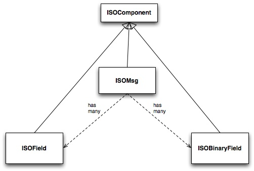
The following code can be used to create an internal representation of our 0800 message (described in An ISO-8583 primer).
import org.jpos.iso.*; ISOMsg m = new ISOMsg(); m.set (new ISOField (0, "0800")); m.set (new ISOField (3, "000000")); m.set (new ISOField (11, "000001")); m.set (new ISOField (41, "29110001")); m.set (new ISOField (60, "jPOS 6")); m.set (new ISOField (70, "301"));
We are just calling ISOComponent.set (ISOComponent) method.
In order to reduce typing and improve code readability, ISOMsg provides some handy methods such as
ISOMsg.setMTI (String)
and
ISOMsg.set (int fieldNumber, String fieldValue)implemented like this:
public void set (int fldno, String value) throws ISOException { set (new ISOField (fldno, value)); } public void setMTI (String mti) throws ISOException { if (isInner()) throw new ISOException ("can't setMTI on inner message"); set (new ISOField (0, mti)); }
So the previous example can be written like this:
ISOMsg m = new ISOMsg(); m.setMTI ("0800"); m.set (3, "000000"); m.set (11, "000001"); m.set (41, "29110001"); m.set (60, "jPOS 6"); m.set (70, "301");
| Tip | |
|---|---|
ISOMsg is one of the most used classes in typical ISO-8583-based jPOS applications. While you can subclass it, you probably won’t have to. If there’s a single class in all jPOS that you want to study in great detail, this is it. We recommend you to have a look at its API documentation and play with its helper methods such as clone, merge, unset, etc. |
ISOComponents have two useful methods called:
public abstract byte[] pack() throws ISOException; public abstract int unpack(byte[] b) throws ISOException;
pack returns a byte[] containing the binary representation of a given
component (can be just a field or the whole ISOMsg);
unpack does the opposite and also returns the number of consumed
bytes.
jPOS uses a Peer pattern that allows a given ISOComponent to be packed and unpacked by a peer class, plugged at runtime.
You use
public void setPackager (ISOPackager p);
in order to assign a packager to a given ISOMsg, e.g.:
ISOPackager customPackager = MyCustomPackager (); ISOMsg m = new ISOMsg(); m.setMTI ("0800"); m.set (3, "000000"); m.set (11, "000001"); m.set (41, "29110001"); m.set (60, "jPOS 6"); m.set (70, "301"); m.setPackager (customPackager); byte[] binaryImage = m.pack();
In order to unpack this binaryImage you may write code like this:
ISOPackager customPackager = MyCustomPackager ();
ISOMsg m = new ISOMsg();
m.setPackager (customPackager);
m.unpack (binaryImage);It is very easy to create protocol converters using jPOS, e.g.:
ISOPackager packagerA = MyCustomPackagerA (); ISOPackager packagerB = MyCustomPackagerB (); ISOMsg m = new ISOMsg(); m.setPackager (packagerA); m.unpack (binaryImage); m.setPackager (packagerB); byte[] convertedBinaryImage = m.pack();
ISOMsg.pack() delegates message packing/unpacking operations
to its underlying "peer" ISOPackager. The code looks like this:
public byte[] pack() throws ISOException { synchronized (this) { recalcBitMap(); return packager.pack(this); } }
packager.pack(ISOComponent) also delegates its packing/unpacking duties to an
underlying ISOFieldPackager. There are ISOFieldPackager implementations for many
different ways of representing a field. It is very easy to create your own, if required.
The following code is used by an ISOFieldPackager implementation to pack and unpack
fixed-length alphanumeric fields:
public byte[] pack (ISOComponent c) throws ISOException { String s = (String) c.getValue(); if (s.length() > getLength()) s = s.substring(0, getLength()); return (ISOUtil.strpad (s, getLength())).getBytes(); } public int unpack (ISOComponent c, byte[] b, int offset) throws ISOException { c.setValue(new String(b, offset, getLength())); return getLength(); }
jPOS comes with many ISOFieldPackager implementations so you’ll probably
never have to write your own. Names chosen are somewhat cryptic, though.
| Note | |
|---|---|
Many people are using them for their own custom packagers so we’ll probably have to live with those names for a while. |
As a general rule, all ISOFieldPackagers live under package org.jpos.iso
and start with the name IF which stands for "ISO Field", but that’s just
an arbitrary naming convention. You can name and place your own ISOFieldPackager
implementations at your will.
So we have things like this:
Table 2.11. ISOFieldPackagers
| Name | Purpose |
|---|---|
IF_CHAR | Fixed length alphanumeric (ASCII) |
IFE_CHAR | Fixed length alphanumeric (EBCDIC) |
IFA_NUMERIC | Fixed length numeric (ASCII) |
IFE_NUMERIC | Fixed length numeric (EBCDIC) |
IFB_NUMERIC | Fixed length numeric (BCD) |
IFB_LLNUM | Variable length numeric (BCD, maxlength=99) |
IFB_LLLNUM | Variable length numeric (BCD, maxlength=999) |
IFB_LLLLNUM | Variable length numeric (BCD, maxlength=9999) |
… | … |
… | … |
jPOS provides the ability to create customized packagers for different kind of ISO-8583 implementations. Over the last few years, several developers have contributed their customized ISOPackagers and ISOFieldPackagers, so chances are good that you can find an implementation suitable for you, or something very close to what you need as part of jPOS distribution.
| Tip | |
|---|---|
Before writing your own packager, have a look at the classes under
|
Writing a packager is very easy. There’s a support class called ISOBasePackager that you can easily extend, e.g.:
public class ISO93APackager extends ISOBasePackager {
protected ISOFieldPackager fld[] = {
/*000*/ new IFA_NUMERIC ( 4, "Message Type Indicator"),
/*001*/ new IFA_BITMAP ( 16, "Bitmap"),
/*002*/ new IFA_LLNUM ( 19, "Primary Account number"),
/*003*/ new IFA_NUMERIC ( 6, "Processing Code"),
/*004*/ new IFA_NUMERIC ( 12, "Amount, Transaction"),
/*005*/ new IFA_NUMERIC ( 12, "Amount, Reconciliation"),
...
...
...
public ISO93APackager() {
super();
setFieldPackager(fld);
}
}So the programmer’s task (BTW, an easy but boring one) is to verify that every single field in your packager configuration matches your interchange specifications.
An ISOPackager is not required to extend the supporting class ISOBasePackager, but we’ve found it quite convenient for most situations.
| Tip | |
|---|---|
while you write your own packager implementation, we recommend you to write a
unit test for it. Have a look at the |
After adding several packagers to our repository, jPOS developer Eoin Flood came up with a good idea: a GenericPackager that one could configure by means of an XML file. The GenericPackager configuration looks like this:
<?xml version="1.0" encoding="UTF-8" standalone="no"?>
<!DOCTYPE isopackager PUBLIC
"-//jPOS/jPOS Generic Packager DTD 1.0//EN"
"http://jpos.org/dtd/generic-packager-1.0.dtd">
<!-- ISO 8583:1993 (ASCII) field descriptions for GenericPackager -->
<isopackager>
<isofield
id="0"
length="4"
name="Message Type Indicator"
class="org.jpos.iso.IFA_NUMERIC"/>
<isofield
id="1"
length="16"
name="Bitmap"
class="org.jpos.iso.IFA_BITMAP"/>
<isofield
id="2"
length="19"
name="Primary Account number"
class="org.jpos.iso.IFA_LLNUM"/>
<isofield
id="3"
length="6"
name="Processing Code"
class="org.jpos.iso.IFA_NUMERIC"/>
<isofield
id="4"
length="12"
name="Amount, Transaction"
class="org.jpos.iso.IFA_NUMERIC"/>
<isofield
id="5"
length="12"
name="Amount, Reconciliation"
class="org.jpos.iso.IFA_NUMERIC"/>
<isofield
id="6"
length="12"
name="Amount, Cardholder billing"
class="org.jpos.iso.IFA_NUMERIC"/>
...
...
...
</isopackager>We now have XML configurations for most packagers under the
org.jpos.iso.packager package. They are available in the
jpos/src/main/resources/packager directory.
| Tip | |
|---|---|
If you are to develop a custom packager, we encourage you to use GenericPackager with a suitable custom configuration file instead. It will greately simplify your task. If you’re using Q2 to configure your packagers, GenericPackager uses the "packager-config" property in order to determine its configuration file. The XML based packager configuration can be either placed in the operating system or inside a jar within the classpath, GenericPackager has the ability to read it as a resource. |
| Note | |
|---|---|
If you need support for nested messages, you may want to have
a look at |
jPOS uses an interface called ISOChannel to encapsulate wire protocol details.
ISOChannel is used to send and receive ISOMsg objects. It leverages the peer
pattern where its peer is an ISOPackager instance. It has send and receive
methods as well as means to set and get a peer packager:
...
public void send (ISOMsg m) throws IOException, ISOException;
public ISOMsg receive() throws IOException, ISOException;
public void setPackager(ISOPackager p);
public ISOPackager getPackager();
...Although not meaningful under all possible situations, ISOChannel has a few
connection-related methods as well:
...
public void connect () throws IOException;
public void disconnect () throws IOException;
public void reconnect() throws IOException;
public void setUsable(boolean b);
public boolean isConnected();
...In order for applications to bind jPOS components at runtime, there’s a
Singleton class called org.jpos.util.NameRegistrar where you
can register and get references to Objects. The ISOChannel interface provides
handy methods to access ISOChannels at runtime by their name.
...
public void setName (String name);
public String getName();
...ISOChannel extends ISOSource which reads like this:
public interface ISOSource { public void send (ISOMsg m) throws IOException, ISOException, VetoException; public boolean isConnected(); }
Different interchanges use different wire protocols. jPOS encapsulates that
functionality in completely isolated ISOChannel implementations. It comes with
many implementations and it’s easy to write your own, perhaps taking advantage
of the BaseChannel as a super class.
Table 2.12. Sample ISOChannel implementations
| Name | Description |
|---|---|
ASCIIChannel | 4 bytes message length plus ISO-8583 data |
LogChannel | Can be used to read jPOS’s logs and inject messages into other channels |
LoopbackChannel | Every message sent gets received (possibly applying filters). Very useful for testing purposes. |
PADChannel | Used to connect to X.25 packet assembler/dissamblers |
XMLChannel | jPOS Internal XML representation for ISO-8583 messages |
… | … |
… | … |
| Tip | |
|---|---|
(see |
| Note | |
|---|---|
Out of all channel implementations, PADChannel deserves a special note. Most TCP/IP based ISO-8583 wire protocol implementations use some kind of indicator to easily detect message bounderies. Most of them use a packet length header so the receiving implementation can tell apart a given ISO-8583 packet from the next one. On the other hand, implementations that do not use any message boundary indicator are typically migrations from older packet-based networks such as X.25 and assume that a given ISO-8583 packet will come in a single TCP/IP packet, which is absolutely wrong. Intermediate networks may split packets (depending on the MTUs involved) or join packets on retransmissions. PADChannel use no message boundary indicator, it reads the ISO-8583 message on-the-fly. It does the right thing. Unfortunately, unless you have another PADChannel on the other endpoint, you’ll probably have to deal with the problem mentioned in the previous paragraph. |
Example 2.1. ISOChannel example
import org.jpos.iso.*; import org.jpos.util.*; import org.jpos.iso.channel.*; import org.jpos.iso.packager.*; public class Test { public static void main (String[] args) throws Exception { Logger logger = new Logger(); logger.addListener (new SimpleLogListener (System.out)); ISOChannel channel = new ASCIIChannel ( "localhost", 7, new ISO87APackager() ); ((LogSource)channel).setLogger (logger, "test-channel"); channel.connect (); ISOMsg m = new ISOMsg (); m.setMTI ("0800"); m.set (3, "000000"); m.set (41, "00000001"); m.set (70, "301"); channel.send (m); ISOMsg r = channel.receive (); channel.disconnect (); } }
| Tip | |
|---|---|
While we’ll see many examples similar to the previous one throughout this document, where a simple main() method takes care of instantiating and configuring several jPOS components, later we’ll introduce Q2, jPOS’s component assembler. We strongly recommend to use Q2 to run jPOS. It will make your life easier. Q2 lets you define your jPOS-based application in a very simple, easy to create and easy to maintain set of XML configuration files. We recommend that you wait until we talk about Q2 before diving into coding your own jPOS-based application. Using code like the previous example is good to learn jPOS but not to run it in a production environment. In addition, you usually don’t deal directly with a channel using its |
If you have a look at the ISOChannel implementations (most of them live in
org.jpos.iso.channel package) you’ll notice that many of them extend
org.jpos.iso.BaseChannel.
BaseChannel is an abstract class that provides hooks and default implementations for several methods that are useful when writing custom channels. While you don’t necesarily have to extend BaseChannel to write a custom channel, you’ll probably find it very useful.
Depending on your wire protocol, you’ll probably only need to extend BaseChannel and just override a few methods, e.g.:
protected void sendMessageLength(int len) throws IOException; protected int getMessageLength() throws IOException, ISOException;
(see jpos/src/main/java/org/jpos/iso/channel/CSChannel.java for an example).
You may also want to have a look at the LoopbackChannel implementation for an example of an ISOChannel that doesn’t extend BaseChannel.
Many ISOChannels implement FilteredChannel which looks like this:
public interface FilteredChannel extends ISOChannel { public void addIncomingFilter (ISOFilter filter); public void addOutgoingFilter (ISOFilter filter); public void addFilter (ISOFilter filter); public void removeFilter (ISOFilter filter); public void removeIncomingFilter (ISOFilter filter); public void removeOutgoingFilter (ISOFilter filter); public Collection getIncomingFilters(); public Collection getOutgoingFilters(); public void setIncomingFilters (Collection filters); public void setOutgoingFilters (Collection filters); }
The ISOFilter interface is very simple as well:
public interface ISOFilter { public ISOMsg filter (ISOChannel channel, ISOMsg m, LogEvent evt) throws VetoException; } }
Whenever you add a filter (be it incoming, outgoing, or both) to a FilteredChannel, all messages sent or received by that channel are passed through that filter.
Filters give you the opportunity to stop a given message from being sent or received by that channel, by throwing an ISOFilter.VetoException.
Let’s have a look at a very simple filter, DelayFilter:
public class DelayFilter implements ISOFilter, ReConfigurable { long delay; public DelayFilter() { super(); delay = 0L; } /** * @param delay desired delay, expressed in milliseconds */ public DelayFilter(long delay) { super(); this.delay = delay; } public void setConfiguration (Configuration cfg) { delay = cfg.getInt ("delay"); } public ISOMsg filter (ISOChannel channel, ISOMsg m, LogEvent evt) { evt.addMessage ("<delay-filter delay=\""+delay+"\"/>"); if (delay > 0L) ISOUtil.sleep(delay); return m; } }
DelayFilter simply applies a given delay to all traffic being sent or received by a given channel. It can be used to simulate remote host delays, a good tool for testing purposes.
But the filter method has the ability to modify the ISOMsg object or to
just replace it with a new one. A handy LogEvent is provided for log/audit
purposes.
| Tip | |
|---|---|
The previous code introduces a few classes and interfaces, namely
|
jPOS comes with many general purpose filters:
MD5Filtercan be used to authenticate messages;MacroFiltercan be used to expand internal variables and sequencers; andXSLTFiltercan be used to apply XSLT Transformations to ISO-8583 messages.
There’s a popular filter called BSHFilter that can execute BeanShell
code placed in an external file that can be modified at runtime without restarting
the system, providing an excellent way to make quick changes (which are welcome
during tests and initial rounds of certifications - the BSH code can be easily
migrated to Java later).
| Caution | |
|---|---|
We’ve seen full applications implemented as BSH-based filters. Those are very difficult to maintain and are significantly slower than business logic implemented in Java code. We encourage you to use this handy scripting capability as a tool for hot-fixes and testing and remember to move the code to Java as soon as you can. |
ISOServer listens in a given port for incoming connections and takes care of
accepting them and passing control to an underlying ISOChannel implementation.
Once a new connection is accepted and an ISOChannel is created, a ThreadPool-controlled Thread takes care of receiving messages from it. Those messages are passed to an ISORequestListener implementation.
Example 2.2. ISOServer
import org.jpos.iso.*;
import org.jpos.util.*;
import org.jpos.iso.channel.*;
import org.jpos.iso.packager.*;
public class Test {
public static void main (String[] args) throws Exception {
Logger logger = new Logger ();
logger.addListener (new SimpleLogListener (System.out));
ServerChannel channel = new XMLChannel (new XMLPackager());
((LogSource)channel).setLogger (logger, "channel");
ISOServer server = new ISOServer (8000, channel, null);
server.setLogger (logger, "server");
new Thread (server).start ();
}
}| Tip | |
|---|---|
The third argument of ISOServer’s constructor is an optional
ThreadPool. Should you pass a null parameter there, a new ThreadPool
is created for you, which defaults to 100 threads.
( Once again, we show this sample code for
educational purposes. In real life applications, you
want to use Q2’s |
In order to test the previous server Test program (which is listening on port 8000), you can use a simple telnet client where you will be able to type an XML-formatted ISO-8583 message, e.g.:
$ telnet localhost 8000 Trying 127.0.0.1... Connected to localhost. Escape character is '^]'.
Now if you have a look at your running Test program you’ll see something like this:
<log realm="server" at="Fri May 17 08:11:34 UYT 2002.824"> <iso-server> listening on port 8000 </iso-server> </log>
Back on your telnet session, you can type in an XML formatted ISO-8583 message like this:
<isomsg> <field id="0" value="0800"/> <field id="3" value="333333"/> </isomsg>
(please note XMLChannel expects <isomsg> as well as </isomsg> to be placed as the first thing in a line)
Your test program will then show:
<log realm="server.channel" at="Fri May 17 07:56:58 UYT 2002.407"> <receive> <isomsg direction="incoming"> <field id="0" value="0800"/> <field id="3" value="333333"/> </isomsg> </receive> </log>
As stated above, you can add an ISORequestListener to your ISOServer that will take care of actually processing the incoming messages. So let’s modify our little Test program to answer our messages. Our Test class has to implement ISORequestListener, e.g.:
public class Test implements ISORequestListener { ... ... public boolean process (ISOSource source, ISOMsg m) { try { m.setResponseMTI (); m.set (39, "00"); source.send (m); } catch (ISOException e) { e.printStackTrace(); } catch (IOException e) { e.printStackTrace(); } return true; } ... ... }
You have to assign this request listener to your server. You can do this assignment with the following instruction:
server.addISORequestListener (new Test ());The full program looks like this:
import java.io.*; import org.jpos.iso.*; import org.jpos.util.*; import org.jpos.iso.channel.*; import org.jpos.iso.packager.*; public class Test implements ISORequestListener { public Test () { super(); } public boolean process (ISOSource source, ISOMsg m) { try { m.setResponseMTI (); m.set (39, "00"); source.send (m); } catch (ISOException e) { e.printStackTrace(); } catch (IOException e) { e.printStackTrace(); } return true; } public static void main (String[] args) throws Exception { Logger logger = new Logger (); logger.addListener (new SimpleLogListener (System.out)); ServerChannel channel = new XMLChannel (new XMLPackager()); ((LogSource)channel).setLogger (logger, "channel"); ISOServer server = new ISOServer (8000, channel, null); server.setLogger (logger, "server"); server.addISORequestListener (new Test ()); new Thread (server).start (); } }
Now try to telnet to port 8000 and send another XML-formatted ISO-8583 message. You’ll get a response, with a result code "00" (field 39), e.g.:
(you type)
<isomsg>
<field id="0" value="0800"/>
<field id="3" value="333333"/>
</isomsg>
(and you should receive)
<isomsg direction="outgoing">
<field id="0" value="0810"/>
<field id="3" value="333333"/>
<field id="39" value="00"/>
</isomsg>ISOServer uses a ThreadPool in order to be able to accept multiple connections at the same time. Every socket connection is handled by a single thread. If your request listener implementation takes too long to reply, new messages arriving over that session will have to wait for their response.
To solve this problem, your ISORequestListener implementation should run in its own thread pool so that its process(…) method will just queue requests to be processed by a peer thread.
| Tip | |
|---|---|
Before worrying too much about handling simultaneous transactions, you’ll be
happy to know that jPOS has a |
ISOServer uses ISOChannel implementations to pull ISOMsgs from the wire. These ISOChannels can, of course, have associated filters as described earlier.
| Note | |
|---|---|
In modern jPOS applications ISOServer is usually managed by the QServer service (see QServer). The ISORequestListener is usually a thin implementation that forwards the request to the TransactionManager. |
Imagine an acquirer implementation that receives several requests at a time from several POS terminals and has to route them to an issuer institution by means of an ISOChannel.
While you can establish one socket connection per transaction, it is common use to setup just one socket connection (handled by an ISOChannel instance) and multiplex it.
So a MUX is basically a channel multiplexer. Once you have instantiated a MUX, you just send a request and wait for the response.
Originally, the MUX interface look like this:
public interface MUX { public ISOMsg request (ISOMsg m, long timeout) throws ISOException; public boolean isConnected(); }
- The
ISOMsg request(ISOMsg, long)method queues a request to be sent by the underlying ISOChannel(s) and waits for the response up to the timeout specified in milliseconds. It either returns a response or null. isConnected()is self explanatory, it returns true if the underlying channel(s) are connected.
| Note | |
|---|---|
MUX is an interface that can have many different implementations.
Depending on the implementation and the configuration the
value returned by |
Recently [1] we’ve added the ability to asynchronously queue requests,
the new MUX interface has another request method that returns immediately and calls
an ISOResponseListener (with an optional handBack Object).
public interface MUX { ... ... public void request (ISOMsg m, long timeout, ISOResponseListener r, Object handBack) throws ISOException; }
| Note | |
|---|---|
This new asynchronous way of calling the MUX is available in the
|
In order to send responses to the appropriate sending thread, a MUX
implementation uses selected fields from the original ISOMsg request
expected to be present in the ISOMsg response. Although not part of the
MUX interface, implementations such as QMUX (the new one) and ISOMUX
(the old one) have a protected method called String getKey(ISOMsg m) that
returns a matching key based on the ISOMsg content.
QMUX reads an XML file that honors a <key>nn,nn,nn</key> child element
and can be used to easily set the appropriate matching key.
The default implementation uses fields such as 41 (Terminal ID) plus field 11
(Serial Trace Audit Number) to create an unique key. You can override
getKey() in order to use other fields.
Example 2.3. MUX example
...
...
MUX mux = (MUX) NameRegister.get ("mux.mymultiplexer");
...
...ISOMsg m = new ISOMsg(); m.setMTI ("0800"); m.set (11, "000001"); m.set (41, "00000001"); ISOMsg response = mux.request (m, 30000); if (response != null) { // you've got a response } else { // request has timed out // you may want to reverse or retransmit }
When a message arrives to MUX’s underlying ISOChannel, the MUX implementation checks to see if that message’s key is registered as a pending request.
Should that key match a pending request, the response is handed to the waiting thread. If the key was registered as a request, or the response comes in too late then that response is (depending on the configuration) ignored, forwarded to an ISORequestListener or to a well defined Space queue. (see QMUX for details).
Under many situations, the same channel that a client application may use to send requests and wait for responses may also receive requests coming from the remote server.
Those unmatched requests coming from the remote server are delegated to an
ISORequestListener (or a well defined "unhandled" Space queue).
Let’s have a look at the ISORequestListener interface:
public interface ISORequestListener { public boolean process (ISOSource source, ISOMsg m); }
Imagine we want to answer the 0800 echo requests arriving to our MUX. We can write the following implementation:
public class EchoHandler extends Log implements ISORequestListener { public boolean process (ISOSource source, ISOMsg m) { try { if ("0800".equals (m.getMTI())) { m.setResponseMTI (); m.set (39, "00"); source.send (m); } } catch (Exception e) { warn ("echo-handler", e); } return true; } }
As of jPOS 2.1.0, there’s a new general purpose ISORequestListener
called org.jpos.iso.IncomingListener that forwards all incoming
transactions to a space queue, to be picked up by the TransactionManager.
It honors the following configuration properties:
Table 2.13. IncomingListener Configuration Properties
| Property | Description | Default Value |
|---|---|---|
queue | Transaction Manager’s queue | no default, this property is required |
timeout | Source Based Timeout | 15000ms, set to 0 to disable |
source | Places |
|
request | Places |
|
timestamp | Context creation timestamp |
|
space | Spaces to use when queuing transaction | "" (default space) |
In addition to the previous configuration properties, IncomingListener places
in the context any additional optional property starting with the prefix ctx.,
so for example, if a server or mux uses a request listener configured to handle
transactions from a given endpoing "XYZ", a property called ctx.XYZ can be
added to the configuration and will be available to the transaction participants,
i.e.:
<mux class="org.jpos.q2.iso.QMUX" logger="Q2" name="postilion"> <in>receive</in> <out>send</out> <readychannel.ready</ready> <request-listener class="org.jpos.iso.IncomingListener" logger="Q2" realm="incoming-listener"> <property name="queue" value="JPTS.TXN" /> <property name="ctx.STATION" value="SS_XYZ" /> <property name="ctx.PORT" value="1234" /> </request-listener> </mux>
The Context queued to the JPTS.TXN queue would have the following properties:
STATIONwith a value ofSS_XYZPORTwith a value of1234
as well as the entries SOURCE, REQUEST, TIMESTAMP and also a fresh PROFILER.
Yet another Logger subsystem?
You may wonder why we’ve chosen to develop our own Logger subsystem. The answer is very simple: when we wrote it, there were no other suitable logger subsystems available. Log4j was just a tiny library hosted in IBM alphaWorks.
You may wonder why we don’t deprecate it now that there are other options available. The main difference between our logger sub-system and other logger sub-systems out there is that we deal with live objects. A LogEvent holds live objects that can be handled by the LogListeners, for example to protect sensitive information (PCI requirement) or to act on special conditions (i.e. e-mailing an Operator on an Exception without having to parse the serialized message).
| Note | |
|---|---|
While other logger subsystems are mostly "line oriented", jPOS' is mostly "transaction oriented". A jPOS LogEvent is likely to carry information for the whole transaction making it very suitable for audit and debugging purposes. |
| Tip | |
|---|---|
In order to avoid the initial desire to get rid of the jPOS Logger and use your the logger you’re used to use, you may want to consider jPOS' as an Event Logger, or Audit Log. We don’t use it to add debug or trace statements in applications, we use it to log business related data. You can still use your preferred logger subsystem as part of your business logic. |
jPOS’s logger subsystem is very easy to extend, so one can easily plug in other
logger engines (such as Log4j, commons logging or the new JDK’s 1.4 logging
stuff), but that has little use. One of the benefit of our logger is the
fact that it produce easy to read (very lightweight) and easy to parse
XML output. The LogChannel for example can read a jPOS log file and parse
ISO-8583 messages from it. If you plug another layer of logging on top of it,
the output is likely to add per-line timestamps that will render the file
difficult to parse.
Our logger is implemented by the following main classes:
Table 3.1. Logger’s main classes
| Class | Description |
|---|---|
Logger | Main logger class |
LogListener | Listens to log events |
LogSource | A log event producer has to implement LogSource |
LogEvent | The Log Event |
The Logger class has the following important methods:
public class Logger { public static void log (LogEvent ev); ... public void addListener (LogListener l); public void removeListener (LogListener l); public boolean hasListeners(); ... ... }
LogSource looks like this:
public interface LogSource { public void setLogger (Logger logger, String realm); public String getRealm (); public Logger getLogger (); }
And LogEvent:
public class LogEvent { public LogEvent (LogSource source, String tag); ... ... public void addMessage (Object msg); ... }
(please take a look at jPOS’s javadoc or source code for a full description)
Here is a simple way to create a Logger:
Logger logger = new Logger(); logger.addListener (new SimpleLogListener (System.out));
Now you can easily attach that logger to any jPOS component implementing LogSource such as channels, packagers, multiplexers, etc. You can easily call:
component.setLogger (logger, "some-component-description");You can use jPOS’s logger subsystem to log events of your own. In those cases,
you have to either implement LogSource or extend or use the the org.jpos.util.SimpleLogSource
class or better yet, use the newer org.jpos.util.Log class.
Then you can write code like this:
LogEvent evt = new LogEvent (yourLogSource, "my-event"); evt.addMessage ("A String message"); evt.addMessage (anyLoggeableObject); Logger.log (evt);
The Loggeable interface is a very simple way of letting an object render itself:
public interface Loggeable { public void dump (PrintStream p, String indent); }
Most of jPOS’s components already implement the Loggeable interface, but you
can easily wrap any given object with a Loggeable class that holds the former
object as its payload, e.g.:
package net.swini.util; import java.io.PrintStream; import org.jpos.util.Loggeable; public abstract class LoggeableBase implements Loggeable { protected String toXML (String tag, String value, String indent) { StringBuffer sb = new StringBuffer (indent); sb.append ('<'); sb.append (tag); sb.append ('>'); sb.append (value); sb.append ("</"); sb.append (tag); sb.append ('>'); return sb.toString (); } public abstract void dump (PrintStream p, String indent); } package net.swini.util; import java.io.PrintStream; import net.jini.core.lookup.ServiceItem; import net.jini.lookup.entry.ServiceInfo; public class LoggeableServiceItem extends LoggeableBase { String tag; ServiceItem item; public LoggeableServiceItem (String tag, ServiceItem item) { super(); this.tag = tag; this.item = item; } public void dump (PrintStream p, String indent) { String inner = indent + " "; p.println (indent + "<" + tag + ">"); if (item.service != null) { p.println (toXML ("class", item.service.getClass().getName(), inner)); } else { p.println (inner + "null item.service - (check http server)"); } p.println (toXML ("id", item.serviceID.toString(), inner)); for (int i=0 ; i<item.attributeSets.length ; i++) { if (item.attributeSets[i] instanceof ServiceInfo) { ServiceInfo info = (ServiceInfo) item.attributeSets[i]; p.println (toXML ("name", info.name, inner)); p.println (toXML ("manufacturer", info.manufacturer, inner)); p.println (toXML ("vendor", info.vendor, inner)); p.println (toXML ("version", info.version, inner)); p.println (toXML ("model", info.model, inner)); p.println (toXML ("serial", info.serialNumber, inner)); } else { p.println (inner + "<attr>"); p.println (inner + " "+item.attributeSets[i].toString()); p.println (inner + "</attr>"); } } p.println (indent + "</" + tag + ">"); } }
There’s a general purpose Loggeable class called SimpleMsg which has an
overloaded constructor for several commonly used Java types. You can easily add
a SimpleMsg to your log stream with code like this:
...
...
evt.addMessage (new SimpleMsg ("demo", "boolean", true));
evt.addMessage (new SimpleMsg ("demo", "time", System.currentTimeMillis()));
evt.addMessage (new SimpleMsg ("demo", "dump", "TEST".getBytes()));
...
...jPOS comes with several LogListener implementations and it’s very easy to write your own.
The ready available ones include:
Table 3.2. LogListener
| Class | Description |
|---|---|
SimpleLogListener | Dumps log events to a PrintStream (such as System.out) |
RotateLogListener | Automatically rotate logs based on file size and time window |
DailyLogListener | Automatically rotate logs daily. Has the ability to compress old log files |
OperatorLogListener | Applies some filtering and e-mails log-events to an operator, not longer included in jPOS core, it’s part of the jPOS-EE mail module |
ProtectedLogListener | Protect sensitive data from ISOMsgs in LogEvents for PCI compliance |
FSDProtectedLogListener | Same as |
SysLogListener | Forward log events to the operating system syslog. |
RealmLogFilter | Filter log events by their realm. Enabled or disabled realms can be defined. |
| Tip | |
|---|---|
In the jPOS-EE code base you can find some additional logger implementations such as IRCLogListener that forwards LogEVents to an irc channel. In addition, there’s a LogBack adaptor that let us capture other loggers output (i.e. log4j, commons-logging, etc.) into jPOS' log stream. This allows you to use your preferred logger API in your code while getting the output in a centralized jPOS file. |
LogListeners are called synchronously, so one listener has the chance to modify a given
LogEvent; for example, ProtectedLogListener analyzes received LogEvents and protects
important information (such as track-2 data).
org.jpos.util.NameRegistrar is a very simple singleton class that can be used to register and locate jPOS components.
It’s nothing but a simple, well-known Map where one can easily find components by an arbitrary name.
NameRegistrar has the following static methods:
public static void register (String key, Object value); public static void unregister (String key); public static Object get (String key) throws NameRegistrar.NotFoundException; public static Object getIfExists (String key);
So you can write code like this:
... ... ISOMUX mux = new ISOMUX (...); NameRegistrar.register ("myMUX", mux); ... ...
and elsewhere in your application you can get a reference to your MUX with code like this:
try { ISOMUX mux = (ISOMUX) NameRegistrar.get ("myMUX"); } catch (NameRegistrar.NotFoundeException e) { ... ... }
or
ISOMUX mux = (ISOMUX) NameRegistrar.getIfExists ("myMUX"); if (mux != null) { ... ... }
Although we can use NameRegistrar in order to register jPOS components, sometimes it’s better to use the component’s setName(String name) method when available.
Most components have a setName (String name) method implemented like this:
public class ISOMUX { ... ... public void setName (String name) { this.name = name; NameRegistrar.register ("mux."+name, this); } ... ...
The prefix "mux." is used here in order to avoid a clash of names in the
registrar between different classes of components using the same name (e.g.
"mux.institutionABC" and "channel.institutionABC").
Different components use different prefixes as shown in the following table:
Table 3.3. NameRegistrar’s prefix
| Component | Prefix | Getter |
|---|---|---|
ConnectionPool | "connection.pool." | N/A |
ControlPanel | "panel." | N/A |
DirPoll | "qsp.dirpoll." | N/A |
BaseChannel | "channel." | BaseChannel.getChannel |
ISOMUX | "mux." | ISOMUX.getMUX |
QMUX | "mux." | QMUX.getMUX |
ISOServer | "server." | ISOServer.getServer |
KeyStore | "keystore." | N/A |
Logger | "logger." | Logger.getLogger |
LogListener | "log-listener." | N/A |
PersistentEngine | "persistent.engine." | N/A |
SMAdapter | "s-m-adapter." | BaseSMAdapter.getSMAdapter |
| Tip | |
|---|---|
While we try to keep the previous prefix table up to date, we suggest that you double-check it against the source code if you have problems getting references to your components. |
Using the getter (when available) lets us write code like this:
try { ISOMUX mux = ISOMUX.get ("myMUX"); } catch (NameRegistrar.NotFoundeException e) { ... ... }
that will in turn call NameRegistrar.get ("mux.myMUX"). Later, we’ll see that
NameRegistrar is extensively used by jPOS' Q2 applications. Q2 takes care of
configuring several jPOS components for you, but your code will have to locate
them by a given name. That’s where NameRegistrar comes in to play.
| Warning | |
|---|---|
Singletons are usually an illusion, you think there’s just one, but there might be more than one. If you have multiple classloaders in your application you may end up with multiple copies of a singleton, such as the NameRegistrar. This problem does not exist if you run Q2 as a stand-alone application. |
| Tip | |
|---|---|
The When running in a Q2 environment we recommend to deploy a |
org.jpos.core.Configuration is a general purpose property container extensively used by jPOS components.
The Configuration interface looks like this:
package org.jpos.core; public interface Configuration { public void put (String name, Object value); public String get (String propertyName); public String get (String propertyName, String defaultValue); public String[] getAll (String propertyName); public int[] getInts (String propertyName); public long[] getLongs (String propertyName); public double[] getDoubles (String propertyName); public boolean[] getBooleans (String propertyName); public int getInt (String propertyName); public int getInt (String propertyName, int defaultValue); public long getLong (String propertyName); public long getLong (String propertyName, long defaultValue); public double getDouble (String propertyName); public double getDouble (String propertyName, double defaultValue); public boolean getBoolean (String propertyName); public boolean getBoolean (String propertyName, boolean defaultValue); }
Having our own Configuration interface lets us implement it in different ways. We have a very little class called SimpleConfiguration backed by a java.util.Properties, but nothing prevents us from creating a more sophisticated Configuration object capable of providing dynamic data (such as an SQLConfiguration, JavaSpacesConfiguration and the like).
jPOS-EE implements a SysConfigConfiguration that reads objects from its sysconfig SQL table.
We also have a very simple interface called Configurable:
package org.jpos.core; public interface Configurable { public void setConfiguration (Configuration cfg) throws ConfigurationException; }
Later, while looking at the Q2 application we’ll see that Q2 pushes a
configuration object by calling the setConfiguration method on
Configurable objects.
<object name="myObject" class="com.mycompany.MyObject"> <property name="myProperty" value="any Value" /> <property file="cfg/myprops.yml" /> </object>
Should com.mycompany.MyObject implement Configurable, Q2 would call its setConfiguration() method
providing access to the underlying myProperty property.
It’s interesting to note that Q2 provides the ability to have array of properties under the same name, e.g.:
<object name="myObject" class="com.mycompany.MyObject"> <property name="myProperty" value="Value A" /> <property name="myProperty" value="Value B" /> <property name="myProperty" value="Value C" /> </object>
where one can call handy methods like String[] getAll(String).
setConfiguration(Configuration cfg) can check the Configuration object and might
throw a ConfigurationException in case a required property is not present or
is invalid.
| Tip | |
|---|---|
SimpleConfiguration recognizes and de-references properties with the
format: You can add a default value within the expression itself, using the The format In the rare case where a value with the format In addition, a property named |
The jPOS Environment has a ServiceLoader based plugin mechanism that support
EnvironmentProviders. jPOS comes with two stock providers:
FileEnvironmentProvider(prefixfile::).ObfEnvironmentProvider(prefixobf::).
A YAML file (i.e. cfg/default.yml) containing an entry like this:
db:
pass: file::/var/secure/dbpass.txtWould obtain the value of the ${db.pass} property from the /var/secure/dbpass.txt file.
Likewise, an obfuscated entry like this:
db:
pass: obf::Ir8LYtvCYsaXANchMMrBqq5Gs2DnMEstYAAAAAwould de-obfuscate the base64 encoded secret.
| Warning | |
|---|---|
Obfuscation is that, just obfuscation, not encryption. It’s used to prevent secrets from leaking to ocassional observers and to demonstrate the use of the EnvironmentProviders. For production deployments, HSM based EnvironmentProvider should be used instead. |
| Tip | |
|---|---|
The |
Since version 2.1.7, jPOS supports the @Config annotation that pushes configuration properties (String, int, Integer, long, Long) down to classes
instanciated through QFactory (Qbeans, Transaction Participants, etc.), i.e:
public class MyClass { @Config("port") int port; }
The port variable would be picked from:
...
<property name="port" value="1234" />
...from the QBean or participant configuration.
| Tip | |
|---|---|
When using multiple environments (i.e.
and the system will load the files |
org.jpos.util.SystemMonitor is a very simple class that periodically logs useful information such as the number of running threads, memory usage, etc.
Its constructor looks like this:
public SystemMonitor (int sleepTime, Logger logger, String realm)
| Note | |
|---|---|
See javadocs for details. |
Using SystemMonitor is very easy. You simply have to instantiate it with code like this:
...
...
new SystemMonitor (60*60*1000L, yourLogger, "system-monitor"); // dumps every hour
...
...and it will dump info to your log every hour (60*60*1000 milliseconds). The output looks like this:
<info> OS: Mac OS X host: Macintosh-2.local/192.168.2.20 version: 1.9.3-SNAPSHOT (d3c9ac3) instance: 38d512f6-f812-4d85-8520-cb96de2654a0 uptime: 00:00:00.234 processors: 2 drift : 0 memory(t/u/f): 85/7/78 threads: 4 Thread[Reference Handler,10,system] Thread[Finalizer,8,system] Thread[Signal Dispatcher,9,system] Thread[RMI TCP Accept-0,5,system] Thread[Q2-38d512f6-f812-4d85-8520-cb96de2654a0,5,main] Thread[DestroyJavaVM,5,main] Thread[Timer-0,5,main] Thread[SystemMonitor,5,main] name-registrar: logger.Q2.buffered: org.jpos.util.BufferedLogListener logger.Q2: org.jpos.util.Logger </info>
Most output is self-explanatory, with some abbreviations, e.g., memory t/u/f stands for total, used and free. But there’s one, drift, that deserves some explanation.
In the old days of the initial JVM 1.02, where Threads were not native
operating system threads (they were called green threads), it was very easy
for a thread to interfere with other threads in the same JVM, so calls to set
the thread priority, and even calls to Thread.yield() here and there in tight
loops where necessary.
In order to detect situations where something was really wrong we devised a simple approach: the system monitor is supposed to sleep for a given period of time, and then wake up. If we sleep for say 3600 seconds, we should be waked up exactly 3600 later, right? When threads were cooperating that was kind of true, we wake up just a few milliseconds later which is reasonable, but when some threads were hogging the CPU, that wake up happens several hundred and sometimes thousand milliseconds later. That was an indication that one or more threads were running in a tight loop consuming too much CPU resources and needed further investigation.
Green Threads are over, we now have great support for native threads, but we left that drift indicator in the SystemMonitor and interesting enough, it’s still very useful. When the system is running under heavy load, or on overloaded and poorly monitored virtualized environments, the drift goes up, to several seconds.
| Tip | |
|---|---|
If we have a report for a slow jPOS application, we suggest to immediately take a look at that drift, if it looks weird, you know you need to start looking at the whole system performance instead of just your jPOS based application. |
| Note | |
|---|---|
If you’re using Q2, the default configuration deploys a See |
org.jpos.util.Profiler is a very simple and easy to use user-space Profiler. It leverages the Logger subsystem to provide accurate information about processing times.
These are Profiler’s public methods:
public void reset(); public void checkPoint (String detail); public long getElapsed(); public long getParcial();
See javadocs for details.
Profiler implements Loggeable, so you can easily add a Profiler Object to a LogEvent to produce convenient profiling information.
Example 3.1. Profiler
Profiler prof = new Profiler(); LogEvent evt = new LogEvent (this, "any-transaction", prof); // initialize message ISOMsg m = new ISOMsg (); m.setMTI ("1200"); ... ... prof.checkPoint ("initialization"); // send message to remote host ... ... ISORequest req = new ISORequest (m); mux.queue (req); ISOMsg response = req.getResponse (60000); prof.checkPoint ("authorization"); // capture data in local database ... ... prof.checkPoint ("capture"); ... ... Logger.log (evt);
| Tip | |
|---|---|
The "end" checkPoint is automatically computed at output time (that’s when Logger calls its log listeners). |
The profiler output looks like this:
prepare: org.jpos.jcard.PrepareContext [0.2/0.2]
| Partial 0.2 milliseconds, total so far, 0.2 milliseconds. |
| CheckVersion took 0.1 milliseconds, so the total so far is 0.3 milliseconds. |
| Total so far, 21.9ms. |
| 1.9ms is the time between the last checkPoint and the log time. |
Some jPOS-based applications have to interact with third-party legacy software (e.g., batch files coming from acquirers, retail applications, etc). Most of the time one can be lucky enough to deal with legacy applications capable of sending transactions over decent protocols but sometimes you are not that lucky and the best thing you can get is a disk-based interchange, i.e., they place a request in a given directory, you process that request and provide a response.
org.jpos.util.DirPoll uses the following directory structure (whose names are self explanatory):
..../archive
..../request
..../response
..../tmp
..../run
..../badand defines the following inner interfaces:
public interface Processor { public byte[] process(String name, byte[] request) throws DirPollException; } public interface FileProcessor { public void process (File name) throws DirPollException; }
You can either create a Processor or a FileProcessor to handle incoming traffic.
Whenever a legacy application places a file in the request directory, your
Processor (or FileProcessor) gets called, giving you a chance to process the
given request and provide a response (if you’re using a Processor, the response
will be placed in the response directory).
Example 3.2. DirPoll Processor
public class DirPollProcessor implements DirPoll.Processor { DirPollProcessor () { super (); DirPoll dp = new DirPoll (); dp.setLogger (logger, "dir-poll"); dp.setPath ("/tmp/dirpoll"); dp.createDirs (); dp.setProcessor (this); new Thread (dp).start (); } public byte[] process (String name, byte[] b) { return ("request: " + name + " content="+ new String (b)).getBytes(); } }
DirPoll has provisions to handle different kind of messages with different priority based on its file extension, so you can call:
...
...
dp.addPriority (".A");
dp.addPriority (".B");
dp.addPriority (".C");
...
...in order to raise ".A" priority over ".B" and ".C" requests (you can use any extension name).
Before processing a given request, DirPoll moves it to the run directory,
and then either to the response directory or to the bad directory (in
case something goes wrong and a DirPollException has been thrown).
| Note | |
|---|---|
If your application crashes, you have to take care of possible requests
left sitting in the |
| Warning | |
|---|---|
Don’t trust your legacy application programmer. Please double check that the previous note has been taken into account. |
| Note | |
|---|---|
This class is going to be deprecated. Do not use in new code. The ThreadPool is used by several jPOS components, such as the ISOServer, and it was a good helper class 10 years ago. We will replace it by components of the Java Executors Framework at some point. |
org.jpos.util.ThreadPool, takes care of managing a pool of threads.
Its constructor looks like this:
public ThreadPool (int initialPoolSize, int maxPoolSize)
(See javadocs for details).
It’s very useful to process short-lived threads, such as processing an
authorization transaction. Instead of creating a new thread per transaction,
you can create a ThreadPool at initialization time and then call its
execute(Runnable r) method.
The thread will be returned to the pool when your run() method ends, so it is
not a good idea to have long-running threads (e.g., a for (;;) { … } loop) in
your Runnable.
There’s an inner interface called ThreadPool.Supervised that your Runnable can optionally implement:
public class ThreadPool { public interface Supervised { public boolean expired (); } }
In this case, ThreadPool will call your expired() method, and - if true -
will attempt to interrupt the expired thread. Note that while this does not
guarantee that your thread will gracefully end, it gives you a chance to get
out of a possible problem.
| Tip | |
|---|---|
You can write some self-healing code in your |
ThreadPool implements ThreadPoolMBean, which exposes the following read-only properties:
public int getJobCount (); public int getPoolSize (); public int getMaxPoolSize (); public int getIdleCount(); public int getPendingCount ();
jPOS comes with several ISOPackager and ISOFieldPackager implementations that can be used either out-of-the-box or as a reference to encode (pack) and decode (unpack) messages that are built on the ISO-8583 standard.
| Tip | |
|---|---|
For a list of out-of-the-box packagers you may want to have a look at the following directories:
|
Although not required, most ISOPackager implementations extend the supporting
class ISOBasePackager. This approach makes writing a custom packager a very
simple task. It’s basically just a matter of calling its
public void setFieldPackager (ISOFieldPackager[] fld)
method with a suitable array of ISOFieldPackagers.
Let’s look at a sample implementation:
Example 4.1. ISO-8583 version 1993 packager implementation
public class ISO93BPackager extends ISOBasePackager { private static final boolean pad = false; protected ISOFieldPackager fld[] = { /*000*/ new IFB_NUMERIC ( 4, "Message Type Indicator", pad), /*001*/ new IFB_BITMAP ( 16, "Bitmap"), /*002*/ new IFB_LLNUM ( 19, "Primary Account number", pad), /*003*/ new IFB_NUMERIC ( 6, "Processing Code", pad), /*004*/ new IFB_NUMERIC ( 12, "Amount, Transaction", pad), /*005*/ new IFB_NUMERIC ( 12, "Amount, Reconciliation", pad), /*006*/ new IFB_NUMERIC ( 12, "Amount, Cardholder billing", pad), /*007*/ new IFB_NUMERIC ( 10, "Date and time, transmission", pad), /*008*/ new IFB_NUMERIC ( 8, "Amount, Cardholder billing fee", pad), /*009*/ new IFB_NUMERIC ( 8, "Conversion rate, Reconciliation", pad), /*010*/ new IFB_NUMERIC ( 8, "Conversion rate, Cardholder billing", pad), ... ... ... /*123*/ new IFB_LLLCHAR (999, "Reserved for private use"), /*124*/ new IFB_LLLCHAR (999, "Reserved for private use"), /*125*/ new IFB_LLLCHAR (999, "Reserved for private use"), /*126*/ new IFB_LLLCHAR (999, "Reserved for private use"), /*127*/ new IFB_LLLCHAR (999, "Reserved for private use"), /*128*/ new IFB_BINARY ( 8, "Message authentication code field") }; public ISO93BPackager() { super(); setFieldPackager(fld); } }
We hope you see the key idea: writing a custom packager involves diving into your interchange specification and setting up a suitable kind of field packager for every possible field.
After writing multiple ISOFieldPackager implementations, jPOS developer Eoin Flood came up with a nice idea: writing a GenericPackager that would read an XML configuration file and instantiate an ISOFieldPackager on-the-fly.
| Note | |
|---|---|
Because packagers are usually instantiated once during the life time of an application, there’s no performance impact between a packager implemented in pure Java or the GenericPackager that reads an XML only at initialization time. |
Using this approach, the same packager we’ve seen in the previous example can
be easily configured using GenericPackager and a simple XML file like this:
Example 4.2. ISO-8583 version 1993 packager configuration
<?xml version="1.0" encoding="UTF-8" standalone="no"?> <!DOCTYPE isopackager PUBLIC "-//jPOS/jPOS Generic Packager DTD 1.0//EN" "http://jpos.org/dtd/generic-packager-1.0.dtd"> <!-- ISO 8583:1993 (BINARY) field descriptions for GenericPackager --> <isopackager> <isofield id="0" length="4" name="Message Type Indicator" pad="false" class="org.jpos.iso.IFB_NUMERIC"/> <isofield id="1" length="16" name="Bitmap" class="org.jpos.iso.IFB_BITMAP"/> <isofield id="2" length="19" name="Primary Account number" pad="false" class="org.jpos.iso.IFB_LLNUM"/> <isofield id="3" length="6" name="Processing Code" pad="false" class="org.jpos.iso.IFB_NUMERIC"/> <isofield id="4" length="12" name="Amount, Transaction" pad="false" class="org.jpos.iso.IFB_NUMERIC"/> ... ... ... <isofield id="126" length="999" name="Reserved for private use" class="org.jpos.iso.IFB_LLLCHAR"/> <isofield id="127" length="999" name="Reserved for private use" class="org.jpos.iso.IFB_LLLCHAR"/> <isofield id="128" length="8" name="Message authentication code field" class="org.jpos.iso.IFB_BINARY"/> </isopackager>
GenericPackager uses a DTD defined in jpos/src/main/resources/org/jpos/iso/packager/genericpackager.dtd
that looks like this:
<?xml version="1.0" encoding="UTF-8"?> <!ELEMENT isopackager (isofield+,isofieldpackager*)*> <!ATTLIST isopackager maxValidField CDATA #IMPLIED> <!ATTLIST isopackager bitmapField CDATA #IMPLIED> <!ATTLIST isopackager firstField CDATA #IMPLIED> <!ATTLIST isopackager emitBitmap (true|false) #IMPLIED> <!ATTLIST isopackager headerLength CDATA #IMPLIED> <!-- isofield --> <!ELEMENT isofield (#PCDATA)> <!ATTLIST isofield id CDATA #REQUIRED> <!ATTLIST isofield length CDATA #REQUIRED> <!ATTLIST isofield name CDATA #REQUIRED> <!ATTLIST isofield class NMTOKEN #REQUIRED> <!ATTLIST isofield token CDATA #IMPLIED> <!ATTLIST isofield pad (true|false) #IMPLIED> <!-- isofieldpackager --> <!ELEMENT isofieldpackager (isofield+,isofieldpackager*)*> <!ATTLIST isofieldpackager id CDATA #REQUIRED> <!ATTLIST isofieldpackager name CDATA #REQUIRED> <!ATTLIST isofieldpackager length CDATA #REQUIRED> <!ATTLIST isofieldpackager class NMTOKEN #REQUIRED> <!ATTLIST isofieldpackager token CDATA #IMPLIED> <!ATTLIST isofieldpackager pad (true|false) #IMPLIED> <!ATTLIST isofieldpackager packager NMTOKEN #REQUIRED> <!ATTLIST isofieldpackager emitBitmap (true|false) #IMPLIED> <!ATTLIST isofieldpackager maxValidField CDATA #IMPLIED> <!ATTLIST isofieldpackager bitmapField CDATA #IMPLIED> <!ATTLIST isofieldpackager firstField CDATA #IMPLIED> <!ATTLIST isofieldpackager headerLength CDATA #IMPLIED>
GenericPackager’s DTD eases the configuration of nested messages (an ISO-8583 field that is a full ISO-8583 message itself), e.g.:
... ... <isofieldpackager id="127" length="255" name="FILE RECORS(S) ACTION/DATA" class="org.jpos.iso.IFB_LLHBINARY" packager="org.jpos.iso.packager.GenericSubFieldPackager"> <isofield id="0" length="1" name="FILE UPDATE COD" class="org.jpos.iso.IFE_CHAR"/> <isofield id="1" length="19" name="ACCOUNT NUMBER" pad="true" class="org.jpos.iso.IFB_LLHNUM"/> <isofield id="2" length="4" name="PURGE DATE" pad="true" class="org.jpos.iso.IFB_NUMERIC"/> ... ... ... </isofieldpackager>
| Note | |
|---|---|
The In order to take advantage of the entity resolver, you need to make sure that your packager configuration starts with the following preamble: <?xml version="1.0" encoding="UTF-8" standalone="no"?>
<!DOCTYPE isopackager PUBLIC
"-//jPOS/jPOS Generic Packager DTD 1.0//EN"
"http://jpos.org/dtd/generic-packager-1.0.dtd"> |
jPOS comes with several channel implementations, most of which
are available in the src/main/java/org/jpos/iso/channel directory.
Most TCP/IP-based channel implementations extend
org.jpos.iso.BaseChannel and just override the
sendMessageLength and getMessageLength methods.
Let’s have a look at org.jpos.iso.channel.CSChannel:
it uses a two-byte message length header sent in network
byte order (nbo) plus two bytes reserved for future use:
public class CSChannel extends BaseChannel { ... ... protected void sendMessageLength(int len) throws IOException { serverOut.write (len >> 8); serverOut.write (len); serverOut.write (0); serverOut.write (0); } ... ... protected int getMessageLength() throws IOException, ISOException { int l = 0; byte[] b = new byte[4]; while (l == 0) { serverIn.readFully(b,0,4); l = ((((int)b[0])&0xFF) << 8) | (((int)b[1])&0xFF); if (l == 0) { serverOut.write(b); serverOut.flush(); } } return l; } }
Here is a partial list of current channel implementations
(for a complete list, have a look at jpos/src/main/java/org/jpos/iso/channel):
| Class name | Wire protocol |
|---|---|
CSChannel | LL LL 00 00 [header] ISO-DATA LL LL represents the [header+] ISO-DATA length in network byte order 00 00 reserved for future use The header is optional ISO-DATA: ISO-8583 image |
NACChannel | LL LL [TPDU] ISO-DATA LL LL represents the TPDU+ISO-DATA length in network byte order Optional TPDU (transport protocol data unit) ISO-DATA: ISO-8583 image |
NCCChannel | LL LL [TPDU] ISO-DATA LL LL represents the TPDU+ISO-DATA length in BCD (binary coded decimal) Optional TPDU (transport protocol data unit) ISO-DATA: ISO-8583 image |
ASCIIChannel | LLLL [header] ISO-DATA LLLL four bytes ASCII [header+] ISO-DATA length Optional header ISO-DATA: ISO-8583 image |
RawChannel | LL LL LL LL [header] ISO-DATA LL LL LL LL is [header+] ISO-DATA length in network byte order ISO-DATA: ISO-8583 image |
VAPChannel | LL LL 00 00 header ISO-DATA LL LL represents the header+ISO-DATA length in network byte order 00 00 reserved for future use VAP-specific header ISO-DATA: ISO-8583 image |
PADChannel | [header] ISO-DATA Stream-based channel reads messages on-the-fly without using any kind of message boundary indicator. |
X25Channel | X25 is similar to PADChannel but uses a slightly different strategy. Instead of pulling an ISO-8583 from a stream, unpacking it on the fly, X25Channel attempts to read full TCP/IP packets by specifying a small timeout value. Whenever possible, PADChannel seems like a better solution; however, certain X.25 packet assembler/disassemblers sometimes send garbage over the wire (i.e. ETXs) which might confuse PADChannel. |
XMLChannel | Send/Receive messages in jPOS’s internal XML message representation |
LogChannel | Similar to XMLChannel, but you can feed it a jPOS Log, which is suitable to replay sessions |
SocketFactories (like ISOServer), as well as most channels that inherit
from BaseChannel can delegate socket creation to an optional socket factory.
We have two kinds of socket factories:
ISOClientSocketFactoryISOServerSocketFactory
public interface ISOClientSocketFactory { public Socket createSocket(String host, int port) throws IOException, ISOException; } public interface ISOServerSocketFactory { public ServerSocket createServerSocket(int port) throws IOException, ISOException; }
as well as a provider that implements both of them: org.jpos.iso.GenericSSLSocketFactory
The ChannelAdaptor accepts an optional socketFactory property in the channel configuration, and the QServer accepts a server-socket-factory child element.
Example 5.1. SocketFactory configuration in a ChannelAdaptor
<channel-adaptor name='sslclient' class="org.jpos.q2.iso.ChannelAdaptor" logger="Q2"> <channel class="org.jpos.iso.channel.NACChannel" logger="Q2" packager="org.jpos.iso.packager.ISO87BPackager"> <property name="host" value="127.0.0.1" /> <property name="port" value="10000" /> <property name="timeout" value="360000" /> <property name="socketFactory" value="org.jpos.iso.GenericSSLSocketFactory" /> </channel> <in>sslsend</in> <out>sslreceive</out> <reconnect-delay>10000</reconnect-delay> </channel-adaptor>
Example 5.2. SocketFactory configuration in a QServer
<server name="server" class="org.jpos.q2.iso.QServer" logger="Q2"> <attr name="port" type="java.lang.Integer">5000</attr> <server-socket-factory class="org.jpos.iso.GenericSSLSocketFactory" /> <channel class="org.jpos.iso.channel.NACChannel" logger="Q2" packager="org.jpos.iso.packager.ISO87BPackager"> </channel> </server>
| Note | |
|---|---|
For backward compatibility, we also have a |
| Tip | |
|---|---|
For PCI compliance, you want to make sure which protocols and ciphersuites you want to enable. If these properties are not configured, all protocols and ciphersuites available to the JVM will be enabled, something you probably don’t want. |
Loopback channel bounces all received messages using a blocking queue. It can be used for simulation purposes. When using in combination with a suitable ISOFilter, you can modify the outgoing or incoming (bounced) message so it can easily simulate a response.
package loopback; import java.io.IOException; import org.jpos.iso.ISOMsg; import org.jpos.iso.ISOFilter; import org.jpos.iso.ISOChannel; import org.jpos.iso.ISOException; import org.jpos.iso.channel.LoopbackChannel; import org.jpos.util.LogEvent; public class Test implements ISOFilter { public static void main (String[] args) { try { new Test().run(); } catch (Exception e) { e.printStackTrace(); } } public void run () throws ISOException, IOException { LoopbackChannel channel = new LoopbackChannel (); channel.addIncomingFilter (this); ISOMsg request = createRequest(); request.dump (System.out, "request> "); channel.send (request); ISOMsg response = channel.receive(); response.dump (System.out, "response> "); } private ISOMsg createRequest () throws ISOException { ISOMsg m = new ISOMsg ("0800"); m.set (11, "000001"); m.set (41, "29110001"); m.set (70, "301"); return m; } public ISOMsg filter (ISOChannel channel, ISOMsg m, LogEvent evt) { try { m.setResponseMTI (); m.set (39, "00"); } catch (ISOException e) { e.printStackTrace(); } return m; } }
The previous program produces the following output:
request> <isomsg> request> <field id="0" value="0800"/> request> <field id="11" value="000001"/> request> <field id="41" value="29110001"/> request> <field id="70" value="301"/> request> </isomsg> response> <isomsg direction="incoming"> response> <field id="0" value="0810"/> response> <field id="11" value="000001"/> response> <field id="39" value="00"/> response> <field id="41" value="29110001"/> response> <field id="70" value="301"/> response> </isomsg>
| Tip | |
|---|---|
For a better way to simulate a remote host, you can have a look at the serversimulator module in the jPOS-EE distribution. |
ChannelPool is an ISOChannel implementation that delegates channel operations to its children channels.
It can handle several children channels, making it suitable to implement transparent failover.
By using its addChannel and removeChannel methods, you can react to network
problems on-the-fly without affecting higher-level layers of your application.
| Tip | |
|---|---|
As an alternative to the |
Filters give the ability to alter an incoming or outgoing message.
jPOS comes with a few stock filters, mostly provided as proof-of-concept.
On outgoing messages, the MD5Filter computes an MD5 hash of a key plus the content of a selected number of fields from the ISOMsg and places the hash in fields 64 (first half) and 128 (second half).
On incoming messages, it computes the same MD5 hash and verifies they match the one coming in fields 64 and 128.
| Note | |
|---|---|
Mentioning MD5 would probably guarantee your QSA to go ballistic. While using MD5 is better than no message authentication at all, please consider this filter as an example to implement MAC filters. |
In a Q2 environment where components are totally decoupled via multiplexers (MUX),
and sometimes multiplexer pools (MUXPool), a client calling MUX.request(...)
may not know which channel was actually used to send the message, or from which
channel a response came. ChannelInfoFilter can place the channel name, and
socket information in two customized fields.
Interesting enough, while ISO-8583 uses fields up to 128, you can internally use fields beyond that (any arbitrary number greater than 128 would do) to store that information, so you can configure your filter like this:
<channel class="org.jpos.iso.channel.NACChannel" logger="Q2" packager="org.jpos.iso.packager.GenericPackager"> <property name="packager-config" value="jar:packager/iso87ascii.xml" /> <property name="host" value="127.0.0.1" /> <property name="port" value="9001" /> <property name="timeout" value="360000" /> <filter class='org.jpos.iso.filter.ChannelInfoFilter' direction='both'> <property name='channel-name' value='1000' /> <property name='socket-info' value='1001' /> </filter> </channel>
The log would show something like this:
<isomsg> ... ... <field id="1000" value="selftest-adaptor"/> <field id="1001" value="127.0.0.1:51865 127.0.0.1:9001"/> </isomsg>
The DelayFilter is a demo filter that honors a delay property and can
be useful to delay messages as they come and go, useful for debugging/simulation
purposes.
The DebugFilter adds to the log an hex representation of the binary message as
it comes and go through the wire. It’s very useful in situations where you
want to capture a message that is not properly unpacking without having to
revert to tcpdump or nc. This filter is of course a no-no in a production
environment (per PCI requirements).
The ThroughputControlFilter honors two properties:
transactionsandperiod(in milliseconds).
and can be used to apply back pressure to a channel sending a large number of transactions. We can configure for example a maximum of 100 messages in a 1000 milliseconds period in order to make sure that this particular channel won’t load the system with more than 100 TPS.
The BSHFilter is one of the most useful, and one of the most abused filters. It allows you to run a BeanShell script that can be modified on the fly. It’s extremely useful in situations where you need to add a field or two, or change the content of a given field, e.g., while testing on a tight certification window.
It is not intended to be used as a way to implement your business logic, BSH code is great, but tend to become brittle, difficult to refactor, test, you don’t have IDE support, etc.
The configuration might look like this:
<channel ...> <filter class="org.jpos.bsh.BSHFilter" direction="outgoing" > <property name="source" value="cfg/myfilter.bsh" /> </filter> ... ... </channel>
Your bsh file will have access to the following variables:
message- the ISOMsg to be filteredchannel- a reference to the ISOChannel associated with this filterheader- if a header is present (on received messages)image- the binary image of the message (on received messages)evt- a LogEvent that you can use to add information to the Logcfg- a reference to the configuration object
Take a look at Github repository for additional samples.
The jPOS Space is a general-purpose coordination component inspired after The Linda Coordination Language. [2]
While jPOS’s Space is not a Linda implementation, we highly recommend learning about Linda in order to better understand our Space component and motivation.
You can think about jPOS’s Space component as being like a Map where its entries are lists of objects and its operations are fully synchronized.
There are three basic operations:
void out (Object key, Object value)Puts an object into the space. If an object under the given key already exists, the object is queued at the end of a list under that name.Object rd (Object key)Reads an object from the space under the given key. Blocks until an entry is present.Object in (Object key)Take the object off the queue. Block until the object under the given key is present.
| Tip | |
|---|---|
We picked those cryptic operation names after the Linda Coordination Language basic operations, but could have used easier to remember names such as:
|
After two consecutive out operations using the same key value, the Space would look like this (first entry is printed as a blue circle while the second one is red):
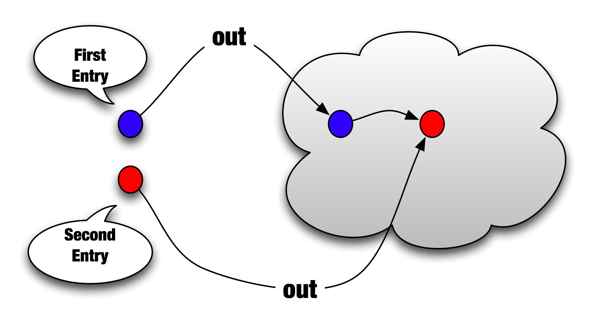
Then an rd operation would return the first entry (the blue one), without removing it from the space. The space remains with two entries for that particular key. 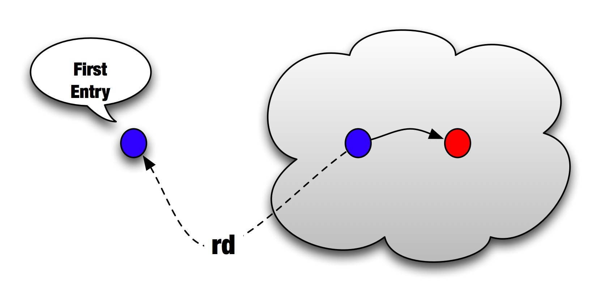
The in operation on the other hand, takes the first entry (the blue one) off the Space, leaving the red one.
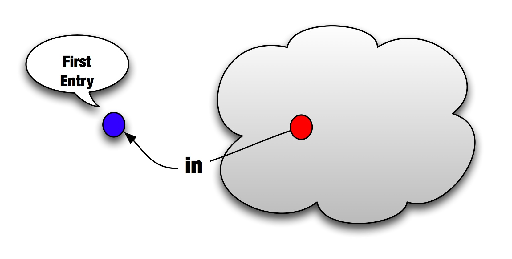
At this point, a new rd operation will return the second entry (the red one) and an in operation would return the red one as well, leaving the space empty (further rd or in operations on that particular key will block.
In addition to those three basic operations, org.jpos.space.Space adds a few
handy methods:
void out (K key, V value, long timeout)Place an object into the space using an expiration timeout. The entry is automatically removed upon expiration.V rd (K key, long timeout)Wait a maximum oftimeoutmilliseconds for a given entry; otherwise, return null.V in (K key, long timeout)Wait a maximum oftimeoutmilliseconds for a given entry, and takes it; otherwise, return null.V rdp (K key)Read an entry if it exists (p for probe).V inp (K key)Take an entry if it exists (again, p for probe).void nrd (K key)Block while key is present in the space. The operation name comes after not read.V nrd (K key, long timeout)Block up to timeout milliseconds while key is present in the space. If timeout is reached and key is still present, returns its value (as in rdp).void push (K key, V value)Same asoutbut the entry is placed at the head of the queue (like a Stack’s push operation).void push (K key, V value, long timeout)Same as the previouspushoperation with a timeout in millis.public void put (K key, V value)Like aMap.putoperation, aSpace.putwipes all entries that may exist under a given key and puts just this one.public void put (K key, V value, long timeout)Same as previous one, but with a timeout.
See Javadoc for full details and
additional helper methods (such as the handy existAny(K[] keys).
| Note | |
|---|---|
While |
The Space interface is small enough to show here:
package org.jpos.space; public interface Space<K,V> { public void out (K key, V value); public void out (K key, V value, long timeout); public V in (Object key); public V rd (Object key); public V in (Object key, long timeout); public V rd (Object key, long timeout); public V inp (Object key); public V rdp (Object key); public void push (K key, V value); public void push (K key, V value, long timeout); public boolean existAny (K[] keys); public boolean existAny (K[] keys, long timeout); public void put (K key, V value); public void put (K key, V value, long timeout); }
The Space implementation is designed to be easy to implement under
different scenarios, such as persistent spaces, remote spaces, replicated
spaces.
The LocalSpace interface enhances the Space interface in situations where
the implementation runs in a single JVM, such as the TSpace implementation.
The additional methods include:
public interface LocalSpace { public void addListener (Object key, SpaceListener listener); public void addListener (Object key, SpaceListener listener, long timeout); public void removeListener (Object key, SpaceListener listener); }
as well as some miscellaneous methods that could be expensive to transmit over the wire and were left out in the base Space implementation.
public Set getKeySet (); public int size (Object key);
The SpaceListener implementation looks like this:
public interface SpaceListener { public void notify (Object key, Object value); }
| Note | |
|---|---|
With the |
jPOS comes with several space implementations:
- TSpace : An in-memory space [3]
- JDBMSpace : a persistent JDBM based space implementation
- JESpace : a persistent Berkeley DB Java Edition based implementation
that can be instantiated using the SpaceFactory.
Although most Space implementations have either public constructors or factory
methods that can be used to create instances of their respective classes, we
highly recommend using the SpaceFactory as the entry point for space
creation or to obtain references to spaces that were previously created.
Example 6.1. Using the SpaceFactory
import org.jpos.space.Space; import org.jpos.space.SpaceFactory; Space sp = SpaceFactory.getSpace();
The previous example returns a reference to the default space, which happens to
be a TSpace implementation registered with the name default. It’s the same as
calling:
Space sp = SpaceFactory.getSpace("tspace");…which is also the same as calling:
Space sp = SpaceFactory.getSpace("tspace:default");SpaceFactory decodes a space name based on the space implementation type,
followed by an optional name and optional parameter(s):
spacetype\[:spacename\[:spaceparam}}
Table 6.1. Space Names
| Type | Implementation |
|---|---|
tspace | Creates or returns a reference to a previously-created instance of |
jdbm | Creates or returns a reference to a previously-created instance of
|
je | Creates or returns a reference to a previously-created instance of
|
spacelet | Returns a reference to a previously-created instance of |
| Note | |
|---|---|
Some components communicate through a default space that may change
over time, so it is very important to By sticking to |
TSpace replaces the old TransientSpace as the new default in-memory Space used by jPOS components.
It’s the space you get when you call SpaceFactory.getSpace() and can be also instantiated using the tspace:xxx name (i.e. SpaceFactory.getSpace("tspace:myspace")).
TSpace implements the LocalSpace interface (see next Section 6.2, “Local Space interface”).
Example 6.2. Sample TSpace use
import org.jpos.space.Space; import org.jpos.space.SpaceFactory; Space sp = SpaceFactory.getSpace(); sp.out("A", "The quick brown fox jumped over the lazy dog"); System.out.println (sp.rdp ("A"));
JDBMSpace is a persistent space based on the popular jDBM key-value lightweight database.
It uses the SpaceFactory prefix jdbm that must be followed by a name, and an optional path, i.e.:
Space sp = SpaceFactory.getSpace("jdbm:myspace");or
Space sp = SpaceFactory.getSpace("jdbm:myspace:data/myspace");| Tip | |
|---|---|
JDBMSpace is good and we’ve used it for a long time in production
systems, but now there’s a new faster and more reliable implementation,
the |
JESpace is a persistent space based on Berkeley DB Java Edition.
It uses the SpaceFactory prefix je that must be followed by a name, and an optional path, i.e.:
Space sp = SpaceFactory("je:myspace");or
Space sp = SpaceFactory("je:myspace:data/myspace");SpaceInterceptor implements the Space interface and can be used to intercept
calls to a given Space without having to extend its implementation
(See Javadoc
for full details).
Using a SpaceInterceptor, the developer can override specific methods in
order to perform additional tasks.
SpaceTap is a SpaceListener that can be used to monitor a given LocalSpace
for new entries under a given key.
Once a SpaceTap is created, it register itself as a listener in the source LocalSpace and copies all new entries to a destination space.
Space Tap. 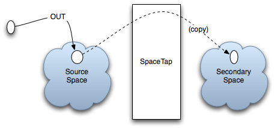
If you have a source LocalSpace ssp and a destination LocalSpace dsp and
you want to monitor an entry called "ERRORS", we can use code like this:
SpaceTap spt = new SpaceTap (ssp, dsp, "ERRORS", "ERRORS.COPY", 5000L);
| Tip | |
|---|---|
If your "source" space and "destination" space are the same, you can use the shorter constructor: SpaceTap (LocalSpace ssp, Object key, Object tapKey, long timeout); |
The SpaceTap can be used for system monitoring purposes as it provides a non-intrusive way to "tap" any given space queue.
In SpaceUtil we put together general purpose helper methods that can be used with any Space implementation.
inpAllpulls all entries under a given key and return them in an array.wiperemove all entries under a given keynextLongWhen used in combination with a persistent Space (such asJDBMSpaceorJESpace), this method can be used to easily implement sequencers, e.g.:
import org.jpos.space.*; Space sp = SpaceFactory.getSpace("je:sequencers"); long l = SpaceUtil.nextLong(sp, "traceno");
| Tip | |
|---|---|
Regularly monitor this class, as we may add new helper methods in the future. |
In jPOS versions earlier than 1.5.0, the main for the jPOS application
was a component called QSP.
| Note | |
|---|---|
The term QSP comes after the hamradio Q-signal codes and it means "Relay message for free". Because jPOS was used to relay messages, and it is free software, in the deep nerdy mind of the author, the term QSP made sense [4]. That’s one of the reasons you’ll see so many _Q_s in the code (QServer, QMUX, Q2 …). |
After deploying QSP in several mission-critical applications, we found that including all the components in a single [huge] XML configuration file was not a good idea.
- Although several QSP components supported some limited ReConfiguration, many others didn’t. As a result, major changes usually involved restarting the application (a very costly operation in a 24/7 system).
- If for some reason, the changes involved went beyond just tweaking a configuration file and required additional changes in a supporting jar file, the application had to be restarted (QSP didn’t support dynamic classloading).
- Having a single big configuration file has proven to be error-prone. Although initially intended to be accessible to system operators, changing QSP files on critical systems became an art reserved for experienced operators.
Therefore, we’ve decided to use a simpler approach: A new container (called Q2, short for QSP version 2) with a file per component and a very simple lifecycle to ease the implementation of such components, called QBeans (Q2 Beans).
| Note | |
|---|---|
We use the terms QBeans and Q2 service interchangeable. |
QBeans are MBeans (see JMX specs) that implement the Q2’s lifecycle (init/start/stop/destroy) set of operations. Q2 takes care of registering them with the system’s MBeanServer.
Running Q2 is as simple as calling java -jar jpos.jar, provided
the jPOS dependencies are available in the lib directory.
The reason why this works without setting a specific CLASSPATH is because we have configured the build system to produce a suitable MANIFEST.MF that contains the following relevant parts:
... ... Main-Class: org.jpos.q2.Q2 Class-Path: lib/jdom-1.1.3.jar lib/jdbm-1.0.jar lib/je-4.1.10.jar lib/ commons-cli-1.2.jar lib/jline-1.0.jar lib/bsh-2.0b5.jar lib/javatuple s-1.2.jar lib/xercesImpl-2.10.0.jar lib/org.osgi.core-4.3.1.jar lib/x ml-apis-1.4.01.jar ... ...
| Tip | |
|---|---|
You can of course use the more convenient |
Q2 accepts several command line switches; for a complete list,
use --help, e.g.:
bin/q2 --help
usage: Q2
-C,--config <arg> Configuration bundle
-c,--command <arg> Command to execute
-d,--deploydir <arg> Deployment directory
-e,--encrypt <arg> Encrypt configuration bundle
-h,--help Usage information
-i,--cli Command Line Interface
-n,--name <arg> Optional name (defaults to 'Q2')
-O,--osgi Start experimental OSGi framework
server
-p,--pid-file <arg> Store project's pid
-r,--recursive Deploy subdirectories recursively
-s,--ssh Enable SSH server
-sa,--ssh-authorized-keys <arg> Path to authorized key file (defaults
to 'cfg/authorized_keys')
-sh,--ssh-host-key-file <arg> ssh host key file, defaults to
'cfg/hostkeys.ser'
-sp,--ssh-port <arg> ssh port (defaults to 2222)
-su,--ssh-user <arg> ssh user (defaults to 'admin')
-v,--version Q2's versionQ2 has a reasonable set of defaults so you usually don’t have to use
any argument when calling it. A simple call to bin/q2 should look
like this:
<log realm="Q2.system" at="2016-10-16T20:19:41.174">
<info>
Q2 started, deployDir=/Users/apr/git/jpos/jpos/build/install/jpos/deploy
</info>
</log>| Tip | |
|---|---|
Please pay attention to the You can override the default deploy directory using the In this particular case, we are running off the |
At start up time, Q2 scans the deploy directory looking for
deployment descriptors (that we also call QBean descriptors).
Those are tiny XML files that are used to start and configure Q2’s
services.
The directory is sorted in alphabetical order, providing an easy way to start services in an ordered way.
Q2 needs a logger, so the first thing it looks for is a logger configuration,
which has a well known QBean descriptor name: 00_logger.xml. This is
the only special name used by Q2, and is required to provide some
visibility into the start-up process. If there’s no 00_logger.xml
defining the Q2 logger, Q2 creates one on the fly using a
SimpleLogListener that outputs log events to stdout.
Having no 00_logger.xml file in the deploy directory is similar
to having one with just the following configuration:
<logger name="Q2"> <log-listener class="org.jpos.util.SimpleLogListener" /> </logger>
| Note | |
|---|---|
The default jPOS distribution has two pre-configured files in the deploy directory:
Sysmon starts the jPOS SystemMonitor that outputs useful system health information every hour which is good to keep handy in production systems. Please note that when using the The CLI can also be accessed via SSH using the |
The --help command line option is self-explanatory,
it shows the list of available options. Same goes for --version
it gives you output like this:
$ bin/q2 --version jPOS 2.0.9-SNAPSHOT master/1592701 (2016-10-16 20:17:56 ART) ... ...
followed by the jPOS license in use (see license for details).
CLI stands for jPOS Command Line Interface. When calling bin/q2 --cli you
should see a prompt like this:
$ bin/q2 --cli q2>
Typing tab will give you the list of available commands, e.g.:
clr echo help logger_benchmark shownr smconsole tmmon version date env install man shutdown sysmon tzcheck deploy exit license mem sleep tail uptime
The man command can be used to get information about a given command, i.e.:
q2> man clr Clear screen
Commands can be separated by a semi-colon, so you can — just for fun — type
q2> clr; echo Hello; sleep 5; echo jPOS
CLI commands are very easy to write, they just have to implement the CLICommand interface.
Just to give you an example, the sleep command is implemented like this:
public class SLEEP implements CLICommand { public void exec(CLIContext cli, String[] args) throws Exception { if (args.length > 1) { Thread.sleep(Long.parseLong(args[1]) * 1000); } else { cli.println("Usage: sleep number-of-seconds"); } } }
As mentioned above, when you type tab, jPOS gives you a list of
commands. This may change in the future (as we move to OSGi and perhaps
its console service) but right now, we have an easy way to detect CLI
commands: they live in the org.jpos.q2.cli package.
If you navigate to jpos/src/main/java/org/jpos/q2/cli you’ll see files like:
CLR.java COPYRIGHT.java DATE.java ECHO.java HELP.java INSTALL.java LICENSE.java MAN.java MEM.java SHOWNR.java SHUTDOWN.java SLEEP.java SMCONSOLE.java SYSMON.java TAIL.java TMMON.java UPTIME.java VERSION.java
The command HELP reads the manual pages for a given command from a resource
named after the command and ending with the .man extension, so if you
navigate to
resources
directory, you’ll see files like:
CLR.man INSTALL.man MEM.man SHOWNR.man SHUTDOWN.man SMCONSOLE.man TAIL.man TMMON.man
Containing the help text for some commands.
| Note | |
|---|---|
CLI commands become more interesting when combined with the ability
to "connect" to a JVM running Q2 from a remote location, i.e. using
the |
| Tip | |
|---|---|
CLI commands use |
Some CLI commands are just little proof-of-concept commands that we wrote while coding the CLI subsystem in order to test it, but a few deserve some additional comments:
- shownr will give you a useful dump of the
NameRegistrar - sysmon will give you output similar to the
SystemMonitor - tail, similar to the Unix command tail allows you to monitor the output of a jPOS logger in real-time.
- tmmon allows you to monitor the TransactionManager in real-time.
- smconsole is a wrapper around the old jPOS security console that allows you to call it from the jPOS jar so that you don’t have to setup the full classpath.
- install extracts sample QBean descriptors from jars in the classpath and place them in the deploy directory
| Note | |
|---|---|
The last command install deserves further comment. In jPOS-EE we
build applications off multiple little modules that are distributed
via a Maven repository. Some of those require some configuration files
that are usually placed in the If you look inside the jPOS jar, you’ll see that the |
Can be used to run a CLI command from the command line, e.g.:
bin/q2 --command "install --force"
If you want to use a deploy directory other than the default deploy
you can use this deploydir option. This can be useful to run different
environments (i.e. deploy_prod versus deploy_test).
This allows you to put some order and hierarchy into your deploy directory if it becomes too big. You can create sub directories to group together deployment descriptors associated with different subsystems.
During the migration from QSP to Q2, jPOS users were used to
the monolithic QSP single XML file and while most users
appreciated the value of the fine grained file-per-service
configuration, a few others requested to keep the ability to run
off a single configuration file.
To create a single config file, you can concatenate together multiple
Q2 descriptors and wrap them with an outer root XML element. The
name of the outer element is not defined, you can use anything you
like, i.e: <q2> or <bundle> or any other name.
Here is a sample config:
<q2> <logger name="Q2" class="org.jpos.q2.qbean.LoggerAdaptor"> <log-listener class="org.jpos.util.SimpleLogListener" /> </logger> <sysmon logger="Q2"> <attr name="sleepTime" type="java.lang.Long">3600000</attr> <attr name="detailRequired" type="java.lang.Boolean">true</attr> </sysmon> </q2>
Running bin/q2 --config your-config-file.xml will basically
extract each descriptor out of the config file and place it in
the deploy directory before actually starting Q2.
There are situations where you want to hide some service configuration from an occasional lurker. You can encrypt it using this command. The encryption key can be changed, but it ultimately is stored inside the program, so this is not very secure, but it’s good enough to keep an operator from looking at your QBean descriptors.
The technique to encrypt a service is similar to the one used
in the previous command --config, you create an XML file
with the services you want to encrypt, wrapped by an outer
XML root element (again, with any name you want) and call
bin/q2 --encrypt file-to-encrypt.xml
If we call bin/q2 --encrypt /tmp/sample.xml the system will
start, but if you look at the deploy directory, you’ll see
that the files that describe the logger and sysmon QBeans
now look like this:
<protected-qbean> <data>6E6A0A545209A80B4AC2735F3DA72.............. ....065345C9CC6FEAE4186D1AE8D4D4B2E54FEA1AB4777B3</data> </protected-qbean>
| Note | |
|---|---|
Please consider this a small protection against an occasional observer. |
While we usually start Q2 from the command line (using the bin/q2 or
bin/q2.bat script), Q2 can be instantiated and started from a Java
application using code like this:
import org.jpos.q2.Q2; ... ... Q2 q2 = new Q2("path/to/your/deploy/directory"); q2.start(); ... ...
You can stop Q2 by calling q2.stop().
If we recall Section 7.4, “Writing your first Q2 Script”, we have a QFactory.properties file
with some mappings, including a shutdown mapping:
shutdown=org.jpos.q2.qbean.Shutdown
So shutting down Q2 is as easy as deploying a QBean — let’s call it
shutdown.xml — with content like this:
<shutdown />| Note | |
|---|---|
The name |
The shutdown QBean is implemented like this:
package org.jpos.q2.qbean; import org.jpos.q2.QBeanSupport; public class Shutdown extends QBeanSupport { public void startService() { getServer().shutdown ();
| This |
By deploying the shutdown QBean you have a clean way to stop a given
Q2 instance without knowing its process ID.
jPOS provides a bin/stop script implemented like this:
#!/bin/sh echo Stopping Q2 echo '<shutdown/>' > `dirname $0`/../deploy/shutdown.xml
| Tip | |
|---|---|
|
Once you have your Q2 running and checking the deploy directory for new
QBean descriptors (XML files) as well as the deploy/lib directory for new
jars, you can try to deploy a QBean.
Just to test the waters, we’ll show you how to deploy a BeanShell
[5] based QBean.
Use your preferred text editor to write an XML file like this:
<script> log.info ("Hello jPOS!"); </script>
Let’s call it 90_hello_jpos.xml and save it in a temporary directory.
Now copy that file to your deploy directory and you should see output
like this:
<log realm="Q2.system" at="Sat Oct 19 20:15:48 UYST 2013.237" lifespan="150ms"> <info> deploy: /home/jpos/jpos/build/install/jpos/deploy/90_hello_jpos.xml </info> </log> <log realm="script" at="Sat Oct 19 20:15:48 UYST 2013.244"> <info> Hello jPOS! </info> </log>
That little script is equivalent to:
<qbean name='script' class='org.jpos.q2.qbean.BSH' logger='Q2'> log.info ("Hello jPOS!"); </qbean>
The reasons this works without specifying the class name, logger name are:
- If there’s no
nameattribute, Q2 uses the root XML element name as the bean name, in this case script. - If there’s no
loggerattribute, Q2 assigns the default logger nameQ2. - If there’s no
classattribute, the root element name is used to find a resource with the mapping. The resource is placed in theQFactory.properties
As of this writing mapping, QFactory.properties looks like this:
logger=org.jpos.q2.qbean.LoggerAdaptor shutdown=org.jpos.q2.qbean.Shutdown script=org.jpos.q2.qbean.BSH jython=org.jpos.q2.qbean.Jython spacelet=org.jpos.q2.qbean.SpaceLet sysmon=org.jpos.q2.qbean.SystemMonitor txnmgr=org.jpos.transaction.TransactionManager transaction-manager=org.jpos.transaction.TransactionManager qmux=org.jpos.q2.iso.QMUX channel-adaptor=org.jpos.q2.iso.ChannelAdaptor qexec=org.jpos.q2.qbean.QExec
that explains the reason why you can write <txnmgr>…</txnmgr> or
<qmux>…</qmux> without specifying a class attribute.
The previous BeanShell based QBean is very useful to run quick tests or
hot fixes to a running jPOS system. Sometimes the Java code written
inside the <script>…</script> XML elements need to use some XML
reserved characters (like < or >). The easiest way to achieve that
is to use a CDATA block, like this:
<qbean name='script' class='org.jpos.q2.qbean.BSH' logger='Q2'><![CDATA[
| Note the |
| And its end |
Here is sample code for a simple test QBean. We’ll call it QTest:
package org.jpos.qtest; import org.jpos.iso.ISOUtil; import org.jpos.q2.Q2; import org.jpos.q2.QBean; import org.jpos.util.Log; public class QTest implements QBean, Runnable { volatile int state; long tickInterval = 1000;
| tickInterval is a custom attribute of this QBean |
| in this example, we use the general purpose Q2 logger |
Building QTest
The easiest way to play with jPOS is to use the jPOS Template project.
Open a terminal (or Command window if you’re on Windows), move to a temporary directory and type:
git clone git@github.com:jpos/jPOS-template.git qtest ---[ output should look like this ]--- Cloning into 'qtest'... remote: Counting objects: 165, done. remote: Compressing objects: 100% (70/70), done. remote: Total 165 (delta 82), reused 162 (delta 81) Receiving objects: 100% (165/165), 87.34 KiB | 101 KiB/s, done. Resolving deltas: 100% (82/82), done.
Then cd to your newly created qtest directory and try:
mkdir -p src/main/java/org/jpos/qtest
Copy and paste the previous code in a file named QTest.java.
| Tip | |
|---|---|
For your convenience, you can download the sources for |
Now create an XML file, (let’s call it 90_qtest.xml) like this in the src/dist/deploy directory:
<qbean name='qtest' class='org.jpos.qtest.QTest' />
Now run gradle installApp or its handy abbreviation gradle iA
(see Section 1.7, “Building jPOS” for additional information about how to run Gradle or
its wrapper gradlew or gradlew.bat).
| Note | |
|---|---|
If you have |
This is not going to work, but it’s worth to run it and see the error so you can understand how Q2 loads its QBeans, which are actually JMX MBeans.
The gradle installApp command should have created a jPOS application
in the build/install/qtest directory, so you can navigate there
(cd buildl/install/qtest) and call bin/q2 (or bin\q2.bat if
you are on Windows).
| Tip | |
|---|---|
If you don’t want to navigate to the |
After running it, you should see output like this:
<log realm="Q2.system" at="Sun Oct 20 16:16:47 UYST 2013.61"> <warn> Tidying build/install/qtest/deploy/90_qtest.xml out of the
| Q2 detects that there’s a problem with this QBean. In order to
prevent the problem from happening again, it renames it to an
extension other than |
| The reason for the error is shown below: |
Q2 uses a JMX MbeanServer to create instances of QBeans, and JMX expects
to pick some information about these classes using and interface named
after the class name and ending with MBean.
So if we are loading a class called org.jpos.test.QTest, the JMX MBeanServer
will attempt to load an interface called org.jpos.test.QTestMBean first,
if it’s not there, it won’t load your QBean.
Now let’s create that simple MBean file and place it in
src/main/java/org/jpos/test/QTestMBean.java.
It looks like this:
package org.jpos.qtest; import org.jpos.q2.QBean; public interface QTestMBean extends QBean { public void setTickInterval(long tickInterval) ; public long getTickInterval() ; }
In addition, we need to change our QTest so that it implements QTestMBean.
Because QTestMBean extends QBean, we can change:
public class QTest implements QBean, Runnable { ... ... }
so that it reads
public class QTest implements QTestMBean, Runnable { ... ... }
Now if you run build/install/qtest/bin/q2 you’ll see messages like:
<log realm="qtest" at="Sun Oct 20 16:51:27 UYST 2013.28"> <info> init </info> </log> <log realm="qtest" at="Sun Oct 20 16:51:27 UYST 2013.35"> <info> start </info> </log> <log realm="qtest" at="Sun Oct 20 16:51:27 UYST 2013.37" lifespan="1ms"> <info> tick 0 </info> </log> ... ... <log realm="qtest" at="Sun Oct 20 16:51:28 UYST 2013.38"> <info> tick 1 </info> </log> ... ... <log realm="qtest" at="Sun Oct 20 16:51:29 UYST 2013.40"> <info> tick 2 </info> </log>
Approximately every second we see a tick message, issues by our little
run() method:
public void run () { for (int tickCount=0; running (); tickCount++) { log.info ("tick " + tickCount); ISOUtil.sleep (tickInterval); } }
While Q2 is running and ticking, you can launch jconsole, connect
to the running process and navigate to the QTest QBean attributes to
see the tickInterval. You are free to change it to another value and
that will change the behavior of the running QTest QBean.
The screen will look something like this:
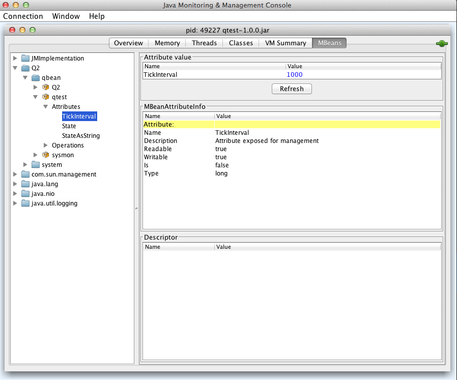
| Note | |
|---|---|
If you are running Q2 using the The reason for this is that |
PUSH configuration - Setting QBean attributes
In the same way you can use jconsole to tweak the QBean attributes
defined in the MBean, you can use the XML attr element in the
QBean descriptor. Q2 will use the MBeanServer to send them via JMX.
So you can change the 90_qtest.xml file (in the src/dist/deploy)
directory to look like this:
<qbean name='qtest' class='org.jpos.qtest.QTest'> <attr name="tickInterval" type="java.lang.Long">5000</attr> </qbean>
| Tip | |
|---|---|
If no type attribute, the default is java.lang.String.
|
PULL configuration - implementing Configurable
Pushing configuration using attributes provides a lot of runtime
flexibility, but requires a lot of boilerplate code with the MBean
interfaces. Sometimes it’s easier to just implement the very simple
Configurable
interface and adding a few child property elements in the QBean
descriptor.
Let’s change our QTest class to read like this:
package org.jpos.test; import org.jpos.core.Configurable; import org.jpos.core.Configuration; import org.jpos.iso.ISOUtil; import org.jpos.q2.Q2; import org.jpos.q2.QBean; import org.jpos.util.Log; public class QTest implements QTestMBean, Runnable, Configurable {
| Implement |
| add a new debug boolean |
| Actual implementation of the |
| Honor the debug property. |
Now the src/dist/deploy/90_qtest.xml file would look like this:
<qbean name='qtest' class='org.jpos.test.QTest'> <property name="debug" value="false" /> </qbean>
If you want to set your properties in a separate file, you could
<property file="xxx" /> instead of +<property name="xx" value="yy" />,
i.e:
<qbean name='qtest' class='org.jpos.test.QTest'> <property file="cfg/myconfig.cfg" /> </qbean>
and then add a file src/dist/cfg/myconfig.cfg, e.g.:
debug=false
| Tip | |
|---|---|
If the file name ends in |
The files in the src/dist directory get copied to build/install when
we call gradle installApp or to the build/distributions when we call
gradle dist and are subject to property expansion.
So if instead of writing debug=false, you put debug=@debug@ (same goes if you use <property name="debug" value="@debug@" />), and you add a compile-time
property called debug to your compile target, Gradle will propertly
replace it when copying it to the destination directory.
In order to test this lets change the file in src/dist/deploy/90_qtest.xml
to read like this:
<qbean name='qtest' class='org.jpos.test.QTest'> <property name="debug" value="@debug@" /> </qbean>
And add a top level file called devel.properties with a line like this:
debug=yes
| Tip | |
|---|---|
Yes, Q2 understand yes and no in addition to true and false |
When you call gradle installApp, the destination file in
build/install/qtest/deploy/90_qtest.xml will have a yes instead of
the @debug@ token.
devel is the default Gradle target defined by jPOS and that’s the
reason it reads the devel.properties file. But you can override the
target using the -Ptarget=xxx parameter, so you can for example
create a file called prod.properties where debug=no and then
call gradle -Ptarget=prod clean installApp.
| Note | |
|---|---|
Please note we’ve added |
| Tip | |
|---|---|
If you prefer to have more control over the XML inside your QBeans,
like the one we use in the ChannelAdaptor, QMUX or the TransactionManager
where we have child elements with their own hierarchy (like filters,
participants, queues), you can implement |
Honoring the logger and realm attributes
Q2 uses reflection to find out if a QBean has a method with the
following signature: void setLogger (String loggerName), and
and optional void setRealm (String realm).
We can take advantage of that feature by adding the following code to our QTest file:
public void setLogger (String loggerName) { log = Log.getLog (loggerName, getClass().getName()); setModified (true); } public void setRealm (String realm) { if (log != null) log.setRealm (realm); }
| Tip | |
|---|---|
If you are starting to get worried about the large number
of options you have when implementing a QBean, don’t worry,
there’s a handy support class called |
Getting a reference to the Q2 server
If your QBean needs a reference to the Q2 server, it can implement the
setServer(Q2 server) method. Q2 will push a reference to itself at
configuration file.
Getting a reference to the XML element representing the QBean descriptor
If your QBean has a method with the signature void setPersist(Element e),
Q2 will push the Element representing the QBean descriptor. This feature
allows a QBean to implement the QPersist interface, that looks like this:
public interface QPersist { public Element getPersist (); public boolean isModified (); }
If your QBean implements QPersist and its isModified()
returns true, then Q2 will call its getPersist() to get a new
QBean descriptor and will store it in the deploy directory.
| Tip | |
|---|---|
This feature is rarely used in jPOS applications, but it’s there just
in case you want to experiment with it. In our previous |
| Note | |
|---|---|
The name persist here is a really bad name, something like
|
All the details described in our first implementation of QTest can be
simplified by just extending QBeanSupport.
QBeanSupport implement the QBean life-cycle methods init(), start(),
stop() and destroy() and call the protected:
- initService
- startService
- stopService
- destroyService
providing suitable default implementations for those. These methods are implemented like this:
public void init () { if (state == -1) { setModified (false); try { initService(); state = QBean.STOPPED; } catch (Throwable t) { log.warn ("init", t); } } } public synchronized void start() { if (state != QBean.DESTROYED && state != QBean.STOPPED && state != QBean.FAILED) return; this.state = QBean.STARTING; try { startService(); } catch (Throwable t) { state = QBean.FAILED; log.warn ("start", t); return; } state = QBean.STARTED; } public synchronized void stop () { if (state != QBean.STARTED) return; state = QBean.STOPPING; try { stopService(); } catch (Throwable t) { state = QBean.FAILED; log.warn ("stop", t); return; } state = QBean.STOPPED; } public void destroy () { if (state == QBean.DESTROYED) return; if (state != QBean.STOPPED) stop(); if (scheduledThreadPoolExecutor != null) { scheduledThreadPoolExecutor.shutdown(); scheduledThreadPoolExecutor = null; } try { destroyService(); } catch (Throwable t) { log.warn ("destroy", t); } state = QBean.DESTROYED; }
You can see that they track and validate the state of the QBean, catch exceptions providing reasonable logging, etc.
In addition, QBeanSupport implements Configurable and exposes
a public Configuration getConfiguration() method. It has a setServer(Q2)
method so your implementation can call getServer() to get a reference
to the Q2 system.
It also implements a boolean running() method so that your QBean
can check if the QBean is still running and get out of a running loop.
QBeanSupport provides a handy QBeanSupportMBean so if your QBean
does not expose any JMX attribute, you don’t even have to write an
xxxMBean interface.
Our Qtest implementation could look like this:
package org.jpos.test; import org.jpos.iso.ISOUtil; import org.jpos.q2.QBeanSupport; public class QTest extends QBeanSupport implements Runnable { @Override protected void startService() { new Thread(this).start(); } public void run () { for (int tickCount=0; running (); tickCount++) { log.info ("tick " + tickCount); ISOUtil.sleep (cfg.getLong("tickInterval", 1000L));
| In this case, we are pulling the tickInterval from a property with
a default to 1 second. We can off course add a |
In most applications, the business logic and packagers are available in the classpath, but there are situations where you need to apply a hot patch such as adding a new field packager, or an ISO filter, so we have provided this dynamic class loading capabilities.
If you know OSGi you can laugh as much as we do with our limited poor-man implementation, it has many drawbacks that we’ll explain below, but if you need to apply a hot patch until you can bounce the system and restart with a new build, you can appreciate that our dynamic classloading has some use.
In addition to the deploy directory that Q2 monitors to see changes
in the deployed services, it also monitors the timestamp of the
deploy/lib directory, and if changed, it scans all jars in there
and add them to the URL classloader of the MBeanServer, used by
Q2 to instantiate its QBeans.
| Tip | |
|---|---|
The previous paragraph basically tells you all you need to know about jPOS' Q2 dynamic classloading. If you read it again, and understand every word, then you can skip to the next section. If you have doubts, we’ll try to clarify them below. |
Let’s try a simple example. If you start Q2 in say the /opt/local/jpos
directory, it will be monitoring the /opt/local/jpos/deploy directory
for QBean descriptors and the /opt/local/jpos/deploy/lib for jars
to be added to the classpath.
At start up the output will look like this:
<log realm="Q2.system">
<info>
Q2 started, deployDir=/opt/local/jpos/deploy
...
...
</info>
</log>If while Q2 is running you create a lib directory inside deploy,
you’ll see a message like this:
<log realm="Q2.system">
<info>
new classloader [58f0fa12] has been created
</info>
</log>If you then place a jar inside that new lib directory, and you touch
lib directory so that it changes its timestamp, you’ll see once again
the message indicating that a new classloader has been created, but this
time, it will contain your new jar.
| Note | |
|---|---|
If the |
The and you touch part mentioned above is important, because Q2 doesn’t
monitor the jars inside the lib directory, it monitors the timestamp
of the deploy/lib directory itself. This gives us some kind of poor
man ability to deploy several jars in an atomic way (to manually solve
dependencies).
So now that the new jar is available in the classpath, you can deploy
your QBean by adding its xml QBean descriptor in the deploy dir.
Dynamically deploying QTest
If you’ve followed the instructions in Section 7.5, “QTest - a sample QBean”, you can copy
build/libs/qtest-1.0.0.jar generated using gradle jar into
another jPOS Q2 system (i.e. you could use the default jPOS distro
clone) and follow the previous instructions to run it.
In addition to that, Q2 support remote dynamic classloading, so instead
of placing your jar in the deploy/lib, you could load it from a remote
URL.
For your convenience, we’ve placed a compiled version of qtest in the
following URL: http://us.jpos.org/private/qtest-1.0.0.jar, so you
can deploy in any Q2 system the following QBean:
<qbean name='qtest' class='org.jpos.qtest.QTest' logger='Q2'> <classpath> <url>http://us.jpos.org/examples/qtest-1.0.0.jar</url> </classpath> </qbean>
A QBean can download its supporting classes from multiple URLs, the previous example could read:
<qbean name='qtest' class='org.jpos.qtest.QTest' logger='Q2'> <classpath> <url>http://us.jpos.org/examples/qtest-1.0.0.jar</url> <url>http://myhost.mydomain.com/another-dependency.jar</url> ... </classpath> </qbean>
| Tip | |
|---|---|
jPOS applications are usually mission critical and highly sensitive, so in most situations, it’s not a very good idea to download the implementation from remote sites. But on a local DMZ where you have many nodes using the same code, it can come very handy to use this feature and download code from a local artifact server. |
Before Q2, in the old QSP days, we had a limited set of services that were migrated to Q2, usually using adaptors.
So the old QSP channel has now the corresponding channel-adaptor service,
dirpoll has a dirpoll-adaptor, the security module has a
SMAdaptor and KeyStoreAdaptor and so on.
We document in this chapter these adaptors, along with new services that have been implemented only in Q2.
When jPOS acts as client from a TCP/IP standpoint, you’d most likely use
the ChannelAdaptor service to manage the low level socket connection.
The ChannelAdaptor uses the Space to communicate with other jPOS
components, basically through two Space queues, one for input
and the other one for output.
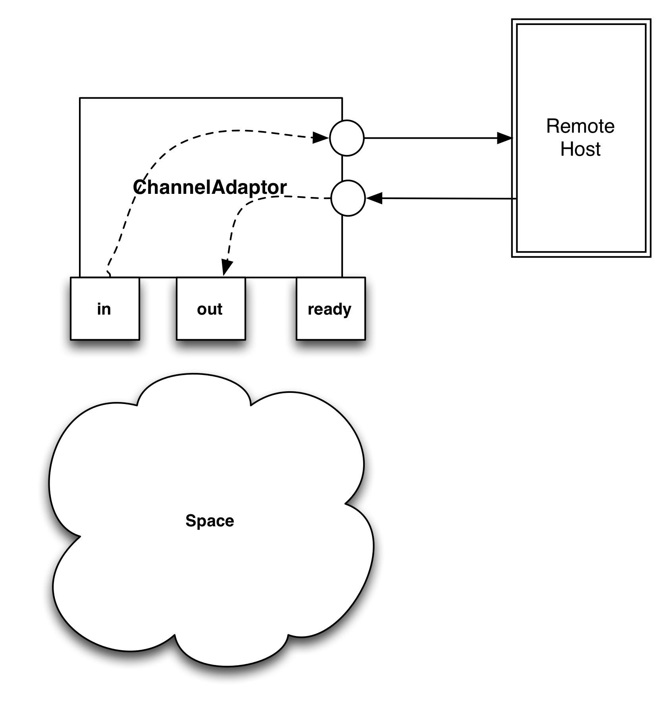
The in and out naming convention is easy to remember if we think of them as seen from the component’s perspective.
So ChannelAdaptor is monitoring its input (in) queue for messages that are to be sent to the remote host, and places messages received from the remote host in its output (out) queue.
| Tip | |
|---|---|
Most of the time, you won’t have to deal with these queues, you’ll just deal with the API provided by higher level components like QMUX. |
As described in Section 7.1, “Running Q2”, Q2 sorts the XML descriptors
available in the deploy directory alphabetically, as an easy
way to orderly start services.
We usually use the prefix 10_ for channels, so that when other components (such as MUXes that use the prefix 20_) start, they can use them right away on the first attempt.
So a reasonable name for a channel descriptor can be something like
10_xxx_channel.xml.
<channel-adaptor name='your-channel' logger="Q2"><out>your-channel-receive</out>
<reconnect-delay>10000</reconnect-delay>
</channel-adaptor>
| The element name |
| In this example we use the |
| Although not defined in the |
| The |
| The |
| Channel level timeout in milliseconds. If the channel does not receive any traffic in the configured timeout, it will disconnect. Having a channel level timeout as described here is highly recommended. |
| The |
| Space queue used to receive messages to be transmitted to the remote endpoint. |
| Messages received from the remote endpoint are placed in this queue. |
| If the connection to the remote host breaks, ChannelAdaptor will try to reconnect after a reasonable delay, expressed in millis. If this element is not present, a default of 10 seconds (10000ms) will be used. === SSL connections |
Most channel implementations accept a socket factory, that can be
configured by adding the properties socketFactory with additional
optional configuration properties required by its implementation.
In case of the provided org.jpos.iso.SunJSSESocketFactory, the additional
properties are storepassword, keypassword and keystore.
The configuration would look like this:
<property name="socketFactory" value="org.jpos.iso.GenericSSLSocketFactory" /> <property name="storepassword" value="password" /> <property name="keypassword" value="password" /> <property name="keystore" value="cfg/mykeystore.ks" />
| Tip | |
|---|---|
Please note that these properties are specific to the channel, so they go inside the channel element, not the outer channel-adaptor element. |
This is not a feature of the ChannelAdaptor but a feature of BaseChannel,
a support class inherited by most channel implementations (but not all of
them, so please check). Channel implementations extending BaseChannel can
take advantage of the alternate-host with its companion alternate-port
configuration property. There can be many of those, but the number of
instances have to match (i.e. if you have 4 alternate-host definitions,
you need to have 4 alternate-port definitions).
When ChannelAdaptor calls the connect method in the underlying channel,
BaseChannel will attempt a connection to the main host/port. If that
fails, it will attempt the alternate hosts list.
The configuration looks like this:
<channel-adaptor name='your-channel' logger="Q2">
<channel class="org.jpos.iso.channel.NACChannel"
....
....
<property name="alternate-host" value="192.168.1.2" />
<property name="alternate-host" value="192.168.1.3" />
<property name="alternate-host" value="192.168.1.4" />
<property name="alternate-host" value="192.168.1.5" />
<property name="alternate-port" value="1000" />
<property name="alternate-port" value="1000" />
<property name="alternate-port" value="1000" />
<property name="alternate-port" value="1000" />
....
....
</channel>
</channel-adaptor>| Tip | |
|---|---|
Same as with the previous SSL socket factory, these properties are specific to the channel, so they go inside the channel element, not the outer channel-adaptor element. |
We strongly recommend that you add a channel-level timeout (expressed in milliseconds). There are many situations where a network connection can go wrong (i.e. an intermediate firewall may timeout an inactive socket connection without notify the endpoint). If you know that your link has to have traffic at least say every minute (i.e. because you’re sending network management 800-class messages back and forth), we recommend that you set a timeout for say 70 or 80 seconds.
You can increase that value, but making it very big will have a negative impact in your application that will learn that a channel is not usable only by the time it needs to send a real authorization message, causing a reconnection at that time, instead of ahead of time, while it was idle.
Setting the keep-alive (true/false) would set the low level SO_KEEPALIVE
flag at the socket level for situations where no network management messages
are exchanged.
The connection-timeout property can be used to set a smaller timeout at
connect time, this is useful when combined with the alternate-host and
alternate-port set of properties.
<channel-adaptor name='your-channel' logger="Q2">
<channel class="org.jpos.iso.channel.NACChannel"
....
....
<property name="connection-timeout" value="15000" /> <!-- 15 seconds -->
<property name="timeout" value="300000" /> <!-- five minutes -->
<property name="keep-alive" value="true" />
....
....
</channel>
</channel-adaptor>Most host-to-host ISO-8583 links use persistent connections, and that’s the
reason we have to multiplex the messages using a MUX, but for situations
where the host expects a single transaction per socket connection, we
have the OneShotChannelAdaptor.
The configuration and behavior is very similar to the ChannelAdaptor (see Section 8.1, “ChannelAdaptor”),
you just need to change the class name in the qbean descriptor.
It supports the following attributes:
Table 8.1. OneShotChannelAdaptor Attributes.
| Name | Attribute |
|---|---|
in | Input queue |
out | Output queue |
space | Optional space name, defaults to system’s default space |
max-connections | Maximum number of simultaneous connections to the remote host, defaults to 1 |
max-connect-attempts | Maximum number of connections attempts for a single transaction, defaults to 15 |
<qbean name='your-channel' logger="Q2"> class="org.jpos.q2.iso.OneShotChannelAdaptor"
| Please note we specify a class here. |
| Space queue used to receive messages to be transmitted to the remote endpoint. |
| Messages received from the remote endpoint are placed in this queue. |
| Overrides default max-connections (currently 1) |
| Overrides default max-connect-attempts (currently 15) |
| Tip | |
|---|---|
In addition to |
QMUX is a modern and very simple, yet powerful, Q2 service that implements the MUX interface as described in Section 2.2.6, “Multiplexing an ISOChannel with a MUX”.
| Tip | |
|---|---|
Users of the old ISOMUX, which is still available in the
|
QMUX uses the Space in order to communicate with the underlying channels; this strategy brings into play a whole new set of deployment options, including the ability to multiplex several channels for redundancy/load-balancing. These channels doesn’t even have to run on the same machine. They could use distributed/remote space implementations. The new space-based code doesn’t require an extra thread, something very useful in systems where a large number of MUXes are required.
A QMUX configuration looks like this:
<mux class="org.jpos.q2.iso.QMUX" logger="Q2" name="mymux"> <in>your-channel-receive</in>
| The MUX |
| In the same way, the MUX’s |
| In order to provide a usable |
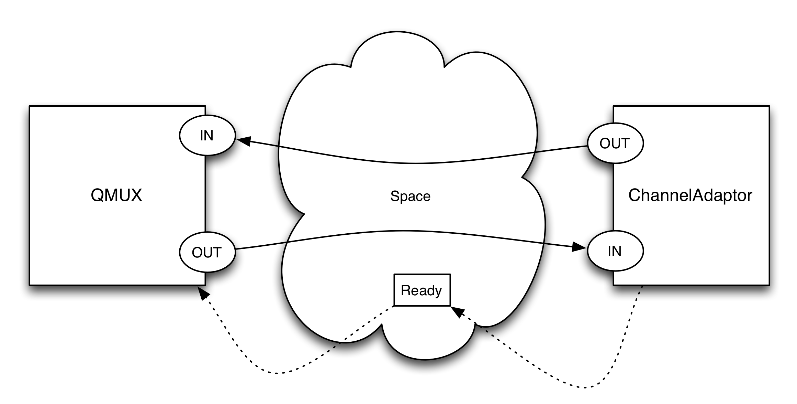
QMUX is registered in the NameRegistrar under the name provided in the qbean
configuration file using the "mux." prefix, ("mux.mymux" in our example)
so that other components can get a reference, cast it to MUX and use its:
In order to handle messages arriving to QMUX that do not match a response
QMUX is waiting for, we can attach one or more ISORequestListeners.
The XML configuration looks like this:
<mux class="org.jpos.q2.iso.QMUX" logger="Q2" name="mymux"> <in>your-channel-receive</in> <out>your-channel-send</out> <ready>your-channel.ready</ready> <request-listener class="my.request.listener" logger="Q2" realm="myrealm"> <property name="myproperty" value="abc" /> <property name="myotherproperty" value="xyz" /> <property file="cfg/myprop.cfg" /> </request-listener> </mux>
As an alternative (or in addition to the request listeners), we can
define an unhandled queue. If messages arrive to QMUX and QMUX isn’t
waiting for it, it gets placed in the unhandled queue.
The configuration looks like this:
<mux class="org.jpos.q2.iso.QMUX" logger="Q2" name="mymux"> <in>your-channel-receive</in> <out>your-channel-send</out> <ready>your-channel.ready</ready> <unhandled>myunhandledqueue</unhandled> </mux>
| Note | |
|---|---|
In order for this mechanism to work, a separate jPOS service
should be waiting for messages arriving to the In order to prevent a situation where a QMUX is configured to push
messages to an |
QMUX use the MTI as well as fields 41 and 11 as its default key.
That default can be changed using the <key>…</key> elements in
the QMUX configuration, i.e.:
<mux class="org.jpos.q2.iso.QMUX" logger="Q2" name="mymux"> <key>42 41 11</key>
| overrides default key. |
| overrides default key for 0800 messages. |
In addition to the fields defined in the <key> element, QMUX maps each
digit of the MTI to use as a key part in order to avoid mixing for instance
a response for a 100-class message such as a 0100 with a reversal
response. The reason for this additional mapping is because most reversals
share the same STAN (field 11) with the original authorization.
Each of the three digits of the MTI gets mapped using the following default values:
012345678901234567890022446789
The value 0123456789 means no special handling is required, a
value of 0 in the first position of the MTI i.e. the first 0
in a 0100 message) will expect a 0 in that very same position
in the response. The first position represents the ISO-8583 version
number (see Section 2.1, “An ISO-8583 primer”), so if we send a 1987 message, we expect
a 1987 response.
Same goes for the second position, if we send a 0100 we expect a 0110,
and that’s what the 0123456789 mapping does, it actually takes no
action.
For the third position, we use the default value 0022446789.
That means that a 1 in the third position (i.e. a 0110) will
be considered a 0 when creating the MTI key part, so that a
0110 response will match the original 0100.
These mappings can be changed using the <mtimapping> element
in the QMUX configuration. The default values would be represented
as:
<mux class="org.jpos.q2.iso.QMUX" logger="Q2" name="mymux"> <mtimapping>0123456789 0123456789 0022446789</mtimapping> ... ... </mux>
QServer is an adapter around ISOServer (see Section 2.2.5, “Accepting connections with ISOServer”) that
interacts with other Q2 components, such as QMUX, using the Space
by defining in and out queues, pretty much like the ChannelAdaptor
does.
Despite the fact that QServer will act as a server from a TCP/IP standpoint, and it will listen to a configurable port, it can still be used to initiate transactions to the remote endpoint.
When acting as a server (from a transaction standpoint), the
QServer is typically configured to forward transactions to
a set of request listeners, but that’s not mandatory. It is
possible to use in/out Space based queues and connect
QServer to other components, such as QMUX (see Section 8.3, “QMUX”).
A QServer configuration looks like this:
<qserver name="xml-server" logger="Q2">
|
|
|
|
| Note | |
|---|---|
The |
QServer is registered in the NameRegistrar under the name provided in
the qbean descriptor ("xml-server" in the previous example). In addition,
the underlying ISOServer — instantiated by QServer — will register itself
with the NameRegistrar using a prefix "server.", so in the previous
example, xml-server will be a reference to the QServer object,
and server.xml-server will have a reference to the ISOServer object.
The Channel definition used by QServer is the same as the one
used by the ChannelAdaptor, where you can configure SSL support,
packager-level logging, etc. Please read Section 8.1, “ChannelAdaptor” for
details.
The request listeners are the same as those used by QMUX
(see Section 8.3, “QMUX” for details). A QServer using a request
listener would look like this:
<server name="jcard-server" class="org.jpos.q2.iso.QServer" logger="Q2"> <attr name="port" type="java.lang.Integer">8001</attr> <channel name="jcard.channel" class="org.jpos.iso.channel.CSChannel" packager="org.jpos.iso.packager.GenericPackager" logger="Q2"> <property name="packager-config" value="cfg/jcard.xml" /> <property name="timeout" value="300000" /> </channel> <request-listener class="org.jpos.jcard.Dispatcher" logger="Q2" realm="incoming-request-listener"> <property name="prefix" value="org.jpos.jcard.Incoming_" /> <property name="timeout" value="60000" /> <property name="space" value="tspace:default" /> <property name="queue" value="JCARD.TXN" /> <property name="station" value="JCARD" /> </request-listener> </server>
| Tip | |
|---|---|
You can of course define multiple request listeners, but we typically have just one that pushes the messages to the TransactionManager where the business logic can be implemented. |
In situations where the system needs to initiate transactions to the
remote host, in and out queues can be configured like in
the ChannelAdaptor. These names (in/out) are seen from QServer’s
perspective. Because a QServer can accept multiple simultaneous connections in
different sockets, an outgoing message needs to select which socket to use. When using
this in/out communication queues, QServer selects the latest
socket (using the ISOServer.getLastConnectedISOChannel()) method. It is also possible to use
send-request property to send messages to all connected clients in round-robin fashion.
(see QServer).
The configuration looks like this:
<qserver name="jcard-server" logger="Q2"> <attr name="port" type="java.lang.Integer">8001</attr> ... ... <in>your-server-receive</in> <out>your-server-send</out> <ready>your-server.ready</ready> <!--<send-request>LAST</send-request>--> <!--default last connected --> <send-request>RR</send-request> <!-- round-robin --> </qserver>
QServer can accept multiple simultaneous sockets (default 100) that
can be configured using the JMX attributes minSessions and maxSessions,
i.e:
<attr name="minSessions" type="java.lang.Integer">10</attr> <attr name="maxSessions" type="java.lang.Integer">250</attr>
In addition, it can check the client’s IP address against "allow" and "deny" IP addresses (including suffix wildcards) and drop the connection if it’s not one of the allowed IP addresses. Here’s an example:
... ... <property name="allow" value="192.168.1.1" />
| The first three IPs are explicitly allowed, even though the third one… |
| …belongs to an IP range that is denied. |
Some considerations:
- Explicit IPs (i.e., those without wildcards) will be checked and honored first.
Then, the wildcard expressions will be checked, starting with the wildcard
"deny"set, and following with the wildcard"allow"set. - If only
"allow"expressions are used, the default policy will be to deny unmatching IPs. - If only
"deny"expressions are used, the default policy will be to allow unmatching IPs. - For mixed permissions (both,
"allow"and"deny"present), the default policy will be to deny unmatching IPs. - Use caution when using mixed permissions and wildcards. Due to the order of evaluation and default policies, some combinations may, at best, be redundant or unnecessary. At worst, they may make no sense at all (even denying connections from valid IPs).
| Warning | |
|---|---|
The IP validation via the |
This service provides an easy way of declaring a logger (see Section 3.1, “jPOS' Logger”) for the application. It creates a Logger instance and regiters it in NameRegistrar, so it can be referenced from other deploy descriptors or code.
As mentioned in Section 7.1, “Running Q2”, a default logger is created if no 00_logger.xml is present. That is the simplest logger definition, with the exception of one that has no log listener at all.
Let’s revisit it:
<logger name="Q2">
| In absence of a |
| This is the simplest |
The following subsections mention some log listeners included in the jPOS distribution. They just describe the items that can be configured by deploy descriptors, but some of them have additional capabilities that can be configured programmatically. Or less commonly used properties that can be read from the source code or javadoc.
This log listener dumps all events to standard output.
It can have an inner writer element that can modify how the elements are written to the output stream. See MappingLogEventWriter.java for an example.
This log listener writes output to a rotating file. It extends SimpleLogListener, so it inherits its configuration capabilities plus the ones needed to configure its specific purpose.
Its configuration looks like this:
<log-listener class="org.jpos.util.RotateLogListener"> <property name="file" value="log/q2.log" />
| The location base path, where it will write the output. |
| How often to rotate in seconds, defaults to |
| How many copies to maintain, defaults to |
| Maximum size in bytes it lets the log file to grow. If the log file becomes greater than that, it automatically rotates it. |
| Automatically rotate on start up?, defaults to false. |
The rotation procedure goes by renaming each copy by increasing its suffix, and .1 is appended to the base file, the one given by the file property. When one copy reaches the maxsize limit it is eliminated.
| Important | |
|---|---|
The |
Rotates the log files daily or ata a given rudimentary schedule, with the ability of compressing old logs. It also extends RotateLogListener, so it shares some of its properties, and some other have slightly different meaning.
As usual, we illustrate the usage by example. For properties commented as optional, the example shows its default values.
<log-listener class="org.jpos.util.DailyLogListener"> <property name="window" value="86400" /> <!-- optional, defaults to one day --> <property name="prefix" value="log/q2" /> <!-- mandatory --> <property name="suffix" value=".log"/> <!-- optional --> <property name="date-format" value="-yyyy-MM-dd-HH"/> <!-- optional --> <property name="compression-format" value="gzip"/> <!-- optional -->
| Valid values: |
| Defaults to |
| Almost equals to |
| Low level parameter, which determines the size of the buffer used to read from the uncompressed file, defaults to 128*1024 = 128 KB. Use bigger values in machines with a lot of memory and if the application produces big log files in the given window. |
|
|
| Max age of log files, the log listener deletes files older than this property in seconds. It calculates the age from file attributes in the file system and deletes all that match a delete regular expression. |
| Regular expression that files need to match to be deleted by age. The default is the concatenation of:
|
A filter log listener that protects the content of sensitive data, it does not actually log anything to a file o stream but just modify the log events, for the next log listener in line.
Since it doesn’t make sense to be used on its own, in the example we show how it is meant to be used in combination with output log listeners. Properties not set, default to empty string, i.e. empty set of fields. Subelements can be protected as well by passing them in the path form, e.g. 49.2
<logger name="Q2"> <log-listener class="org.jpos.util.SimpleLogListener"/>
| Standard output isn’t protected because it is placed before the |
| Fields to protect, separated by spaces, its sensitive parts are repleced by underscores ( |
| Fields to wipe out, they are just replaced by constants, |
| Files written by the |
This log listener performs the same task as ProtectedLogListener but for FSDMsg and FSDISOMsg instances. And since its usage is the same, we just focus on its configuration part.
In this case the fields reference FSDMsg fields, and for FSDISOMsg instances its inner FSDMsg fields.
<log-listener class="org.jpos.util.FSDProtectedLogListener"> <property name="protect" value="2 35 pan track2" />
| Fields to protect, see Section 8.5.4, “ProtectedLogListener” for more details. |
| Fields to wipe out. |
| In addition, this log listener also can truncate fields, this property specifies the fields and the lengths to which the log listener will truncate them separated by a colon. |
The SysLoglistener sends the events to the system log concentrator (aka syslog), see https://www.ietf.org/rfc/rfc3164.txt.
<log-listener class="org.jpos.util.SysLogListener"> <property name="facility" value="16" />
| Default facility, used if it is not defined for a tag. Optional, defaults to |
| Default severity, used if it is not defined for a tag. Optional, defaults to |
| Host to send the log events to. Optional, defaults to |
| Port to connect to send the log events on the host. Optional, defaults to 514. |
| The log listener will only send the log events with its tags listed here. Optional, defaults to |
| An optional prefix to prepend to the message to be sent, if not defined, nothing is prepended. |
| Each tag can be mapped to a different facility and severity. |
Filters LogEvents by their realm.
RealmLogFilter is a filter for log events, as with the protected log listeners it should be defined before other standard LogListeners such as SimpleLogListener or RotateLogListener that write the output to the place we want to avoid logging filtered events.
<log-listener class="org.jpos.util.RealmLogFilter"> <property name="dump-interval" value="60000"/>
| Those realms that had events but were filtered will be saved. These are logged at an interval defined by the |
| If |
<log-listener class="org.jpos.util.RealmLogFilter"> <disabled>
| If |
The TransactionManager (also called TM in this document) is just another Q2 Service, but it is such an important component in most jPOS based applications that it stands out, deserving its own chapter.
jPOS is typically used to implement mission-critical applications that have to carefully deal with error conditions.
When you access a web page and a transient network error occurs, you just hit the reload button on your browser. By contrast, a complex financial transaction involves a lot of activities such as contacting remote hosts, notifying risk management systems, placing holds in cardholder’s credit accounts, database logging, etc.
So, if something goes wrong or your system just dies due to a power failure, it’s more complicated than simply hitting the reload button: you have to reverse the impact of whatever actions had been taken up to the failure point.
The org.jpos.transaction package - along with the Q2-based TransactionManager
implementation - provides a framework and set of components that can assist dealing
with the previous scenario. This combination also fosters code reuse and
componentization.
| Note | |
|---|---|
This doesn’t mean a jPOS based application needs to use the TransactionManager. It’s proven, it’s fast, it’s reliable, we are aware of use cases where the TM is used to process millions of transactions per day, we @jposconsulting use it in most of our applications, but it’s up to you to use it or not. |
The key class is the TransactionParticipant that exposes the following interface:
public interface TransactionParticipant extends TransactionConstants { public int prepare (long id, Serializable context); public void commit (long id, Serializable context); public void abort (long id, Serializable context); } // the TransactionConstants interface provides the following definitions: public interface TransactionConstants { public static final int ABORTED = 0; public static final int PREPARED = 1; public static final int RETRY = 2; public static final int PAUSE = 4; public static final int NO_JOIN = 0x40; public static final int READONLY = 0x80; }
| Note | |
|---|---|
As of jPOS 2.1.0 the |
The TransactionManager implementation drives the transaction by calling all of its
participants' prepare method. If all of them return PREPARED (indicating that
they are ready to proceed with the transaction), then the transaction moves
to the COMMITTING phase, at which point the TransactionManager will call all of the
participants' commit method.
If one of the participants' prepare method returns ABORTED, then the transaction
moves into an ABORTING phase, and all the participants previously called to get
prepared will get a call to their abort method.
Table 9.1. TransactionConstants
| Name | Value | Description |
|---|---|---|
ABORTED | 0 | The participant is not prepared. Transaction should be aborted. |
PREPARED | 1 | The participant is prepared to commit the transaction, provided all other participants down the list return PREPARED too. |
RETRY | 2 | The transaction will be retried after a short period of time
defined by the |
PAUSE | 4 | The transaction will be paused and will be resumed in the following situations: a) Some external thread calls b) A timeout specified by the Context’s Pausable interface occurs c) A default timeout specified by the TransactionManager’s |
NO_JOIN | 0x40 | This modifier is a hint to the TransactionManager to let it know
that it is not required to call this participant’s
|
READONLY | 0x80 | This modifier is a hint to the TransactionManager to let it know that this participant has not modified any persistent information in the context, so saving a snapshot of the context is not required. |
FAIL | 0xC0 | Handy constant equals to |
| Note | |
|---|---|
Despite the fact that a participant may indicate that it doesn’t want to
JOIN a given transaction (by using the |
The only constraint imposed on a Context implementation is that it has
to implement the java.io.Serializable interface. That’s
because the TransactionManager has to write snapshots
of it at different check points.
You can use any Serializable object, either a
custom object such as an application-specific Bean,
or a general-purpose object such as a java.util.Map
implementation (e.g., a Hashmap).
But we found it very useful to use a general-purpose context holding two maps, a regular (persistent) map and a transient one, so that one can store serializable data that can be automatically persisted by the TransactionManager (for recovery purposes) as well as live references (such as a TCP/IP socket or a JDBC connection).
So there’s a general purpose
Context
reference implementation that in addition implements the
Pausable
interface, required if you plan to use transaction continuations (PAUSE
modifier).
This Context reference implementation has two kind of put operations:
public void put (Object key, Object value)
and
public void put (Object key, Object value, boolean persist)
When using the latter, if persist == true, then the object can
get automatically persisted by the TransactionManager (if configured to
do so, using the persistent-space property).
In the previous section, we described a Transaction Context holding two maps: a transient map and a persistent one.
In situations where the TransactionManager dies (e.g., during a power failure), a transaction could have been in its preparing, committing or aborting phase.
Either the commit or abort methods will be called on all participants, but before that happens, the TransactionManager gives the developer the opportunity to let the participants know that we are not dealing with a normal commit/abort but a recovery situation.
The developer may choose to implement the ContextRecovery interface:
public interface ContextRecovery { public Serializable recover (long id, Serializable context, boolean commit);
| the |
The TransactionManager provides the opportunity to build up the transient part of the Context (e.g., re-establishing a JDBC connection, re-fetching a database record based on some persistent ID number , etc.).
| Tip | |
|---|---|
While many participants can implement this interface, it is reasonable to have a single
one, similar to the initial |
It’s easier to understand the TM if we imagine an assembly line.
Here is an example of a typical transaction (in this case taken from the jCard system):
The TransactionManager encourages and allows developers to write reusable and configurable components called Participants. Here is a short description of a typical Balance Inquiry transaction, splitted into many small (easy to develop, easy to reuse, easy to maintain) participants:
Table 9.2. AssemblyLine
| Name | Description |
|---|---|
PrepareContext | We prepare the context with some handy objects, such
as a transaction |
CheckVersion | We usually receive messages using a specific version. In this case, jCard uses the jPOS-CMF which has a specific field indicating the interchange version. This participant just check that and early aborts the transaction if it doesn’t match our expectations |
Open | If version is OK, we probably want to log the message in a database.
The |
Switch | We’ll explain later the |
CheckFields | Different transactions require the presence of different ISO8583 fields in the incoming message. Some are mandatory, some are optional, this reusable participant takes care of that. For example, in the case of a balance inquiry, we want to make sure that we have fields that allows us to identify the card, transaction amount, etc. |
CreateTranLog | If we reach this participant it means the incoming message is kinda OK, it has the proper version, it has the required mandatory fields, so we create a TranLog record. This is specific to jCard, but your implementation is likely to require some kind of transaction log record. |
CheckCard | In order to compute the balance of a given account, we first need to locate
the card. This involves getting the card by different means, could be track1
data, track2 data, token, etc. The |
CheckTerminal | We need to check that the client terminal is valid, active, and perhaps check its capabilities in order to provide responses in different formats (i.e. for printing purposes) |
CheckAcquirer | We need to know the acquirer, perhaps to validate fees involved in this transaction. |
SelectAccount | We know the Card, so we know the CardHolder, depending on the transaction type and processing code, we may choose a different account (i.e. checking versus saving) |
ComputeBalances | Now we know the account, so we compute its balances (available, accounting) and place it in the Context |
PrepareResponse | We have the balances in the Context in |
LogIt | Remember we’ve created a |
Close | Before we send a response, we need to commit the JDBC transaction and return the JDBC session to the pool. |
SendResponse | Now we send the response back to the network |
ProtectDebugInfo | The following participant (Debug) dumps the Context’s content to the jPOS log, something very useful for debugging purposes, but there’s some sensitive data in the Context, so this little participant take care of masking it. |
Debug | Dumps the Context to the jPOS log. |
Here is the sample log:
prepare: org.jpos.jcard.PrepareContext NO_JOIN
prepare: org.jpos.jcard.CheckVersion READONLY NO_JOIN
prepare: org.jpos.transaction.Open READONLY NO_JOIN
prepare: org.jpos.jcard.Switch READONLY NO_JOIN
selector: balanceinquiry prepareresponse logit close sendresponse
prepare: org.jpos.jcard.CheckFields NO_JOIN
prepare: org.jpos.jcard.CreateTranLog NO_JOIN
prepare: org.jpos.jcard.CheckCard NO_JOIN
prepare: org.jpos.jcard.CheckTerminal NO_JOIN
prepare: org.jpos.jcard.CheckAcquirer NO_JOIN
prepare: org.jpos.jcard.SelectAccount NO_JOIN
prepare: org.jpos.jcard.ComputeBalances NO_JOIN
prepare: org.jpos.jcard.PrepareResponse NO_JOIN
prepare: org.jpos.jcard.LogIt READONLY NO_JOIN
prepare: org.jpos.transaction.Close READONLY
prepare: org.jpos.jcard.SendResponse READONLY
prepare: org.jpos.jcard.ProtectDebugInfo READONLY
prepare: org.jpos.transaction.Debug READONLY
commit: org.jpos.transaction.Close
commit: org.jpos.jcard.SendResponse
commit: org.jpos.jcard.ProtectDebugInfo
commit: org.jpos.transaction.DebugIn a blue sky scenario like the previous one, the TM calls all participant’s
prepare method, which return PREPARED, and then the commit method on
those that have joined the transaction (by not returning the NO_JOIN
modifier).
Here is a diagram for a situation where all participants return just PREPARED
(meaning they DO want to join the transaction, so commit gets called).
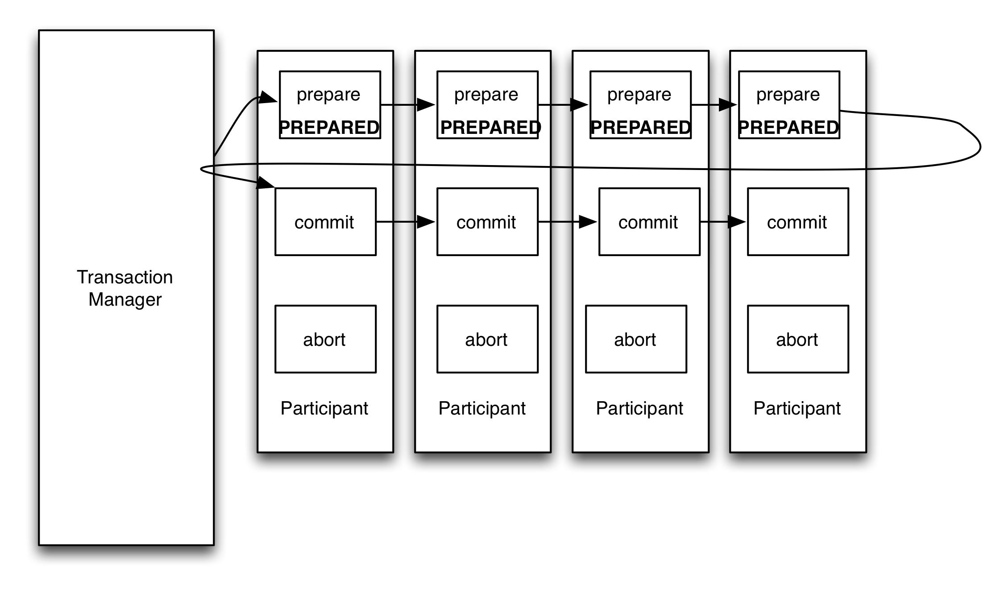
When a participant adds the NO_JOIN modifier (by returning
PREPARED | NO_JOIN), then the TM skips calling that participant’s
commit method as shown in the following diagram.
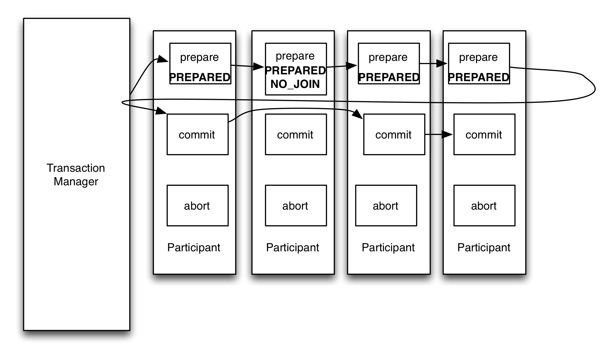
If a participant returns ABORT, then the TM calls the abort operation
in those participants already called that where PREPARED and did not return
the NO_JOIN modifier so that they can take corrective action if required.
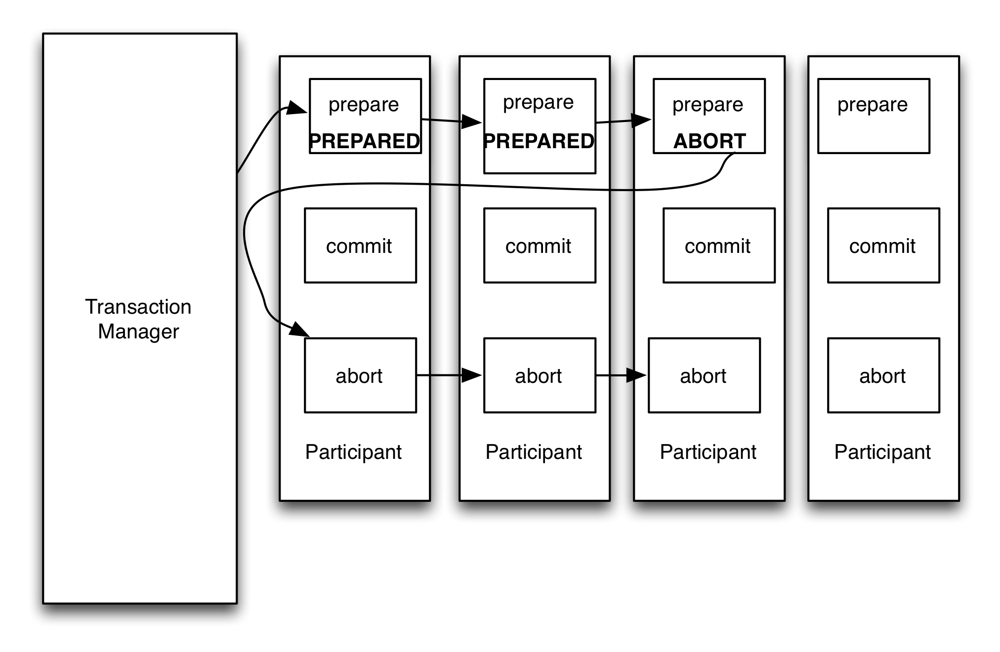
Imagine you have a list of participants that define a transaction, for example:
ValidateMessage(sanity checks)FetchData(i.e. get Terminal/Merchant info from database)QueryRemoteHostLogTransactionSendResponse
If everything goes okay and all participants return PREPARED, then you’ll have
no problem reaching the last set of participants. By contrast, if for some
reason a given participant fails (e.g., imagine FetchData fails), then the
remaining participants down the list (in our example, FetchData through
SendResponse) won’t get called because the transaction manager will initiate
the aborting procedure (which will call abort(id,context) only on the
previously-called participants, i.e., only on ValidateMessage in our example).
In the previous example, while it’s okay to ignore a call to the
QueryRemoteHost participant, you may still want to send a response
back to the client, or even log the transaction, so you do want to call
SendResponse.
The AbortParticipant is designed to solve this problem:
public interface AbortParticipant extends TransactionParticipant { public int prepareForAbort (long id, Serializable context); }
Participants implementing the AbortParticipant will get called even if the transaction
is bound to abort.
| Tip | |
|---|---|
If we use this technique to implement a |
| Note | |
|---|---|
As of jPOS 2.1.0 the |
If you see the previous diagram, when participant 3 returns ABORTED, the last
participant doesn’t get called. If participant number four implements this
AbortParticipant interface, the diagram would look like this:
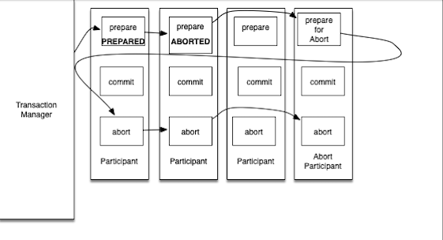
At prepareForAbort() time, returning PREPARED, or ABORTED, is quite the same.
A PREPARED wouldn’t affect the flow of the transaction, it’s still in its ABORT track.
But the NO_JOIN modifier could be useful if you’re doing nothing in your abort() callback.
It’s an indication to the TM that it doesn’t need to call abort.
The difference is minimal, calling a dummy abort() method that does nothing is quite fast,
but the TM still needs to register that it needs to call that participant, and it records histograms, profiler, etc.
So NO_JOIN is a good thing to consider returning.
Having a configuration like this:
<txnmgr ...> <participant A /> <participant B /> <participant C /> <participant D /> ... </txnmgr>
may be good for some small applications, but you risk ending up having to configure multiple transaction managers for different classes of transactions (e.g., network management, authorization, draft capture, etc.) or add complexity to participants in order to operate or do nothing depending on the transation type.
In order to simplify the TransactionManager configuration, we’ve added a very
simple interface called GroupSelector:
public interface GroupSelector extends TransactionParticipant { public String select (long id, Serializable context); }
A participant implementing the GroupSelector interface can modify the flow of
a transaction by returning a space-separated list of group names (or can
specify null to signify no action).
Our Q2-based TransactionManager reference implementation supports this interface and lets you design your own configuration file with a structure like this:
<txnmgr ...> <participant A /> <participant B /> ... ... <group name="GroupA"> <participant A /> <participant B /> <participant C /> </group> <group name="GroupB"> <participant J /> <participant K /> <participant L /> </group> <group name="GroupC"> <participant X /> <participant Y /> <participant Z /> </group> ... ... </txnmgr>
Example 9.1. Sample GroupSelector implementation
public class Switch implements GroupSelector { public int prepare (long id, Serializable context) { return PREPARED | READONLY | NO_JOIN; } public void commit (long id, Serializable context) { } public void abort (long id, Serializable context) { } public String select (long id, Serializable context) { try { ISOMsg m = (ISOMsg) ((Context)context).get (ISOMSG); String groups = cfg.get (m.getMTI(), null); return groups; } catch (Exception e) { warn (e); return null; } } }
By using the Switch presented in the previous example, you can write a
TransactionManager configuration file like this:
... ... <participant class="org.jpos.my.Switch" logger="Q2"> <property name="0100" value="Authorization Response Log" /> <property name="0200" value="Financial Response Log" /> <property name="0220" value="Notification Response Log" /> <property name="0221" value="Notification Response Log" /> <property name="0420" value="Reversal Response Log" /> <property name="0421" value="Reversal Response Log" /> <property name="0500" value="BatchManagement Response Log" /> <property name="0421" value="Reversal Response Log" /> <property name="0800" value="NetworkManagement Response Log" /> </participant> ... ... <group name="Financial"> <participant class="com.my.company.CheckRequiredFields"> <property name="fields" value="0,3,4,17,49,32,41,43,37,PAN,AMOUNT" /> </participant> <participant class="com.my.company.CheckCurrency" /> ... ... </group> <group name="Reversal"> ... ... </group> ... ...
Using the previous approach, the application can be designed using small reusable participants. Moreover, using XML entity expansion, the resulting configuration file can be very readable.
We have found it very useful to have very small participants to perform tasks like: Debug the context; introduce Delays (during testing); Open and Close O/R mapping sessions, etc.
The TransactionManager is a jPOS Service that monitors a Space queue waiting
for transactions to be processed. These transactions are expected to be any
Serializable object, but in most jPOS applications those are actually
org.jpos.transaction.Context objects.
The following image shows a typical scenario:
- A QServer (or a QMUX) receives a message and delegate its handling to an
ISORequestListenerimplementation - The
ISORequestListenercreates an instance of aContext, puts there some information relevant to the transaction (such as a reference to the receivedISOMsgand the originatingISOSource) and place it in a well known space, using a well knownkey. We use the space as a queue so we call it queue, but it’s just a regular entry in the space under a well known name. - The
TransactionManagerpicks the entry from the space (using a regularinoperation) and runs the previously described two-phase commit protocol on the configured participants.
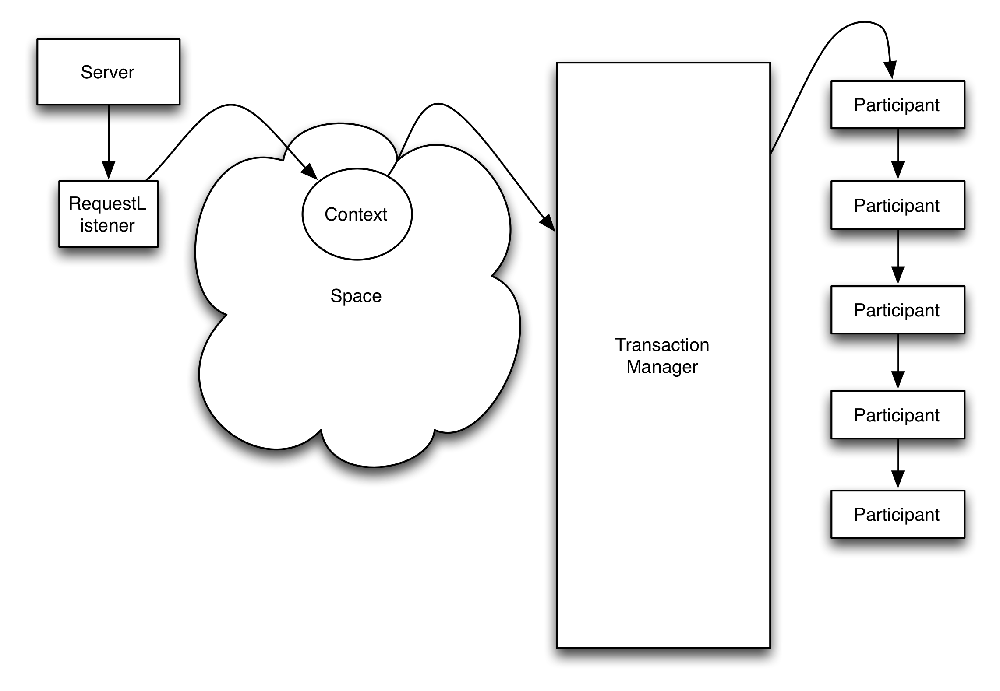
Each participant is instantiated and configured just once by the TransactionManager at init time, they use the Flyweight pattern, but the TransactionManager uses several simultaneous sessions to handle transactions.
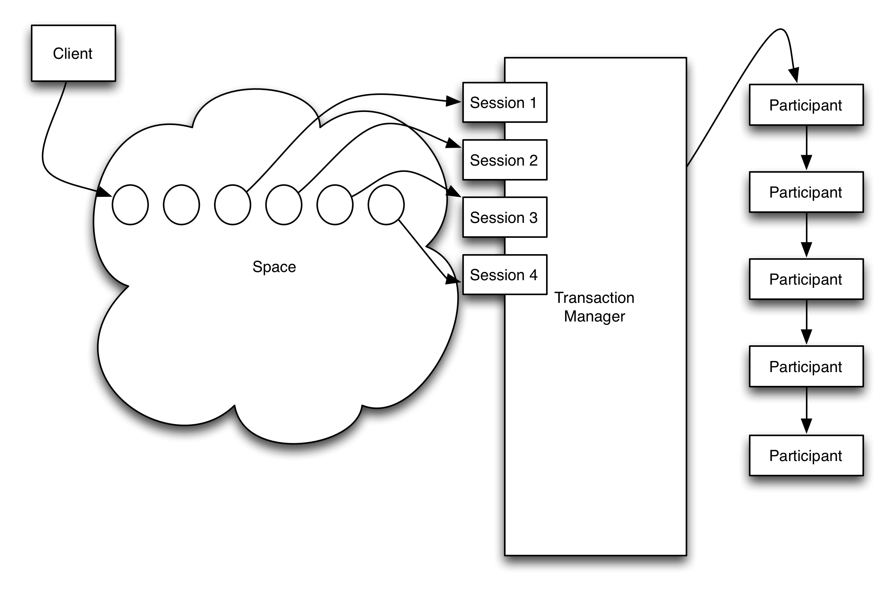
| Important | |
|---|---|
In the previous paragraph we mention that the TransactionManager uses the Flyweight pattern. It is extremely important to understand the pattern before implementing participants. Each participant is instantiated once, but multiple sessions can run simultaneously. In addition, sessions can be paused and continued. All session information must be stored in the Context, which the transaction manager appropriately sets before calling a participant, but never ever in member variables. |
| Tip | |
|---|---|
Participants usually don’t need a reference to their TransactionManager. If required, the participant can implement a method:
that will get called once at initialization time using reflection. |
The TransactionManager uses 3 different spaces for operation.
We see in the previous diagram that the producer (depicted as client in the image) places entries in a Space, to be consumed by the TransactionManager.
This can be the general purpose default space (tspace:default), but in
high demanding environments, it is possible to define a separate space,
defined as input-space.
Internally, it also needs a transient space to keep track of the in-flight
transactions. Again, if not specified, the TransactionManager will use
tspace:default, but it is possible to configure a separate space for
that using the space property in the XML configuration file.
For recovery purposes, a persistent space (defined with the property
persistent-space) is required, i.e.: je:XXXX (XXXX being the name
of the space). But taking snapshots to disk reduces the TM speed by
probably an order of magnitude, and many applications that use the
TransactionManager don’t take advantage of its recovery features,
this space defaults to an internal space.
The TransactionManager is implemented by org.jpos.transaction.TransactionManager
but QFactory.properties defines a couple of handy names for it:
txnmgr, ortransaction-manager
So a TM configuration can look like this:
<txnmgr name="myTM" logger="Q2" realm="TM"> <property name="queue" value="myTMQueue" /> ... ... </txnmgr>
or
<transaction-manager name="myTM" logger="Q2" realm="TM"> <property name="queue" value="myTMQueue" /> ... ... </transaction-manager>
| Note | |
|---|---|
The |
The TM requires a mandatory property (queue) and honors some optional ones,
which have sensible defaults.
- queue
This is the Space-based queue where the TM looks for transactions to be processed.
As described above, these transactions are actually
Serializableobjects, typically an instance oforg.jpos.transaction.Context. This is a mandatary property. - input-space
This is the Space where the TransactionManager’s sessions wait for transactions
to be queued. It defaults to the default space returned by
SpaceFactory.getSpace()that is currently set totspace:default. - space Space used by the TransactionManager to handle in-flight transactions. The TM uses a Space-based circular queue. This Space also uses the system’s default, but in high load systems it is reasonable to consider using a unique space for each TransactionManager.
- persistent-space
If the application takes advantage of crash recovery features, a persistent
space has to be defined. It can be any persistent space, such as
jdbmor the more robustjebased spaces (i.e.je:mytm:/path/to/mytm). - recover
When the TransactionManager starts, it checks the persistent space for
in-flight transactions from a previous run. If this feature is not being
used, it is recommended to set
recoverto false (although it doesn’t hurt to keep it on in most situations). - debug If true, the TransactionManager logs a small report after each transaction indicating which participants took place. The log looks like this:
<debug> txnmgr-1:2 prepare: org.jpos.jcard.PrepareContext NO_JOIN prepare: org.jpos.jcard.CheckVersion READONLY NO_JOIN prepare: org.jpos.transaction.Open READONLY NO_JOIN prepare: org.jpos.jcard.Switch READONLY NO_JOIN groupSelector: notsupported prepareresponse close sendresponse prepare: org.jpos.jcard.NotSupported NO_JOIN prepare: org.jpos.jcard.PrepareResponse NO_JOIN prepare: org.jpos.transaction.Close READONLY prepare: org.jpos.jcard.SendResponse READONLY prepare: org.jpos.jcard.ProtectDebugInfo READONLY prepare: org.jpos.transaction.Debug READONLY commit: org.jpos.transaction.Close commit: org.jpos.jcard.SendResponse commit: org.jpos.jcard.ProtectDebugInfo commit: org.jpos.transaction.Debug head=3, tail=3, outstanding=0, active-sessions=2/2, tps=0, peak=0, avg=0.00, elapsed=22ms </debug>
- profiler
If the profiler property is set to true, in addition to the debug output, the
TransactionManager records the time consumed by each participant callback.
Setting profiler to
truealso setsdebugto true automatically.
This adds the following information to the log
<debug> .... .... <profiler> prepare: org.jpos.jcard.PrepareContext [0.0/0.0] prepare: org.jpos.jcard.CheckVersion [0.0/0.0] prepare: org.jpos.transaction.Open [0.5/0.6] prepare: org.jpos.jcard.Switch [0.0/0.6] prepare: org.jpos.jcard.NotSupported [0.1/0.7] prepare: org.jpos.jcard.PrepareResponse [5.8/6.6] prepare: org.jpos.transaction.Close [0.0/6.6] prepare: org.jpos.jcard.SendResponse [0.0/6.6] prepare: org.jpos.jcard.ProtectDebugInfo [0.0/6.7] prepare: org.jpos.transaction.Debug [0.0/6.7] commit: org.jpos.transaction.Close [1.0/7.7] commit: org.jpos.jcard.SendResponse [4.3/12.0] commit: org.jpos.jcard.ProtectDebugInfo [0.2/12.3] commit: org.jpos.transaction.Debug [9.3/21.7] end [22.8/22.8] </profiler> </debug>
- sessions
Defines the number of simultaneous sessions (Threads) used to process transactions.
Defaults to one. It is recommended to keep the
sessionsproperty within a reasonable value commensurate the number of CPU cores of the system. A large number here just slows down the capacity of the system. - max-sessions
In order to deal with occasional traffic spikes (sometimes caused by small
network glitches), the TransactionManager can temporarily increase the
number of sessions. This property defines that maximum. It defaults to
the value set for
sessions. For obvious reasons,max-sessionscan’t be less thansessions. - max-active-sessions
When using the TransactionManager continuations feature (where the prepare callback
returns
PAUSEmodifier), it is possible that a small number of sessions can process a large number of in-flight transactions. Those transactions may place in theContextreferences to live objects such as JDBC sessions. In order to place a cap on the number of in-flight transactions to avoid exhausting resources (for example a JDBC pool), thismax-active-sessionsproperty can be set. The default is 0, which means no limit is imposed.
| Tip | |
|---|---|
If you’re pausing your transactions, please read the previous paragraph multiple times and make sure you understand it. |
- call-selector-on-abort
The transaction manager calls the
preparemethod, and then, if the participant implements theGroupSelectorinterface, it calls itsselectmethod, regardless of the result of thepreparecall. While in practice that’s a reasonable and useful behavior, it can be argued that technically, the TM shouldn’t callselectif the transaction is bound to abort. We have provided this configuration parameter that can be set tofalsein order to enable that behavior.
It is possible to monitor a TransactionManager by adding a TransactionListener
The interface is very simple:
public interface TransactionStatusListener extends EventListener { public void update (TransactionStatusEvent e); }
A TransactionStatusListener can be either added dynamically (using the
TransactionManager.addListener(TransactionStatusListener) method) or using
XML configuration like this:
<transaction-manager name="myTM" logger="Q2" realm="TM"> ... ... <status-listener class="your.transaction.Listener" /> ... ... </transaction-manager>
| Tip | |
|---|---|
standard logger, realm, and properties can be used. |
| Note | |
|---|---|
Calls to the transaction status listener are synchronous, the implementation is expected to return really fast. |
The TMMON CLI command (see the section called “--cli”) is an example of a TransactionStatusListener interface
and so is the org.jpos.transaction.gui.TMMonitor implementation.
jPOS comes with some general purpose transaction participant implementations that can be used as-is or used as a reference to write your own.
| Tip | |
|---|---|
The |
The org.jpos.transaction.participant.Switch is a general
purpose GroupSelector that uses a context entry’s
value to return a set of groups picked from a standard Configuration.
Table 9.3. Switch participant Configuration Properties
| Property | Description | Default Value |
|---|---|---|
txnname | Context entry to use as key |
|
unknown | Set of groups to be used on not found | "" |
Here is a sample configuration taken from jCard:
<participant class="org.jpos.transaction.participant.Switch" logger="Q2" realm="Switch"> <property name="100.30" value="balanceinquiry prepareresponse logit close sendresponse" /> <property name="100.30.182" value="customer-balanceinquiry prepareresponse logit close sendresponse" /> <property name="100.00" value="authorization prepareresponse logit close sendresponse" /> <property name="100.02" value="auth-void prepareresponse logit close sendresponse" /> <property name="100.20" value="refund prepareresponse logit close sendresponse" /> <property name="100.22" value="refund-void prepareresponse logit close sendresponse" /> <property name="100.00.201" value="auth-adjustment prepareresponse logit close sendresponse" /> ... ...
A previous participant puts in the context under the key TXNNAME data taken from
the request ISOMsg (i.e. MTI, processing code, function code).
The org.jpos.transaction.participant.CheckFields is a general
participant that can be used to check for mandatory as well as
optional fields present in the context.
Table 9.4. CheckFields Configuration Properties
| Property | Description | Default Value |
|---|---|---|
request | Name of the ISOMsg to be checked |
|
Here is a sample configuration:
<participant class="org.jpos.transaction.participant.CheckFields" logger="Q2"> <property name="mandatory" value="PCODE,TRANSMISSION_TIMESTAMP,11,12,AMOUNT,CARD,41" /> <property name="optional" value="15,17,21,22,24,32,37,42,43,46,60,63,62,111,113" /> ... ... </participant>
The CheckFields handle standard numeric fields performing minimum validations (i.e. 7,11,12,35),
it just checks for presence of those fields, but it handle some special names that are relevant to
most jPOS applications, specially those dealing with jPOS-CMF.
In those situations, CheckFields performs additional parsing, validation, and places in the
Context handy objects that other participants can use.
For example, if we use the name CARD, then CheckFields participant tries to get us a Card
object taking it from either fields 2 and 14 (manual entry) as well as 35 (track2) or 45 (track1).
In addition, it verifies that track1 and track2 are valid, and matches the PAN and EXP values
present in fields 2 and 14 (if available).
The complete list of special names are:
PCODE- parses the processing code.CARD- creates aorg.jpos.core.CardObject.TID- Terminal ID picked from field 41.MID- Merchant ID picked from field 42.TRANSMISSION_TIMESTAMP- creates a Date object picked from field 7 (ISO-8583 v2003 format).TRANSACTION_TIMESTAMP- creates a Date object picked from field 12 (ISO-8583 v2003 format).POS_DATA_CODE- create a POSDataCode from field 22.CAPTURE_DATE- date object picked from field 17AMOUNT- picksISOAmountfrom either field 4 or 5. If field 5 is available, thenAMOUNTholds the content of field 5 (settlement amount) while field 4 gets stored in another Context variable calledLOCAL_AMOUNT(ISO-8583 v2003 format).ORIGINAL_DATA_ELEMENTSparses original MTI, STAN and TIMESTAMP from field 56 (ISO-8583 v2003 format).
org.jpos.transaction.participant.SelectDestination can be used to select
the proper destination for a given message based on BIN, extended BIN or
full or partial PAN number.
Sample configuration:
<participant class="org.jpos.transaction.participant.SelectDestination"> <endpoint destination="MyMux"> 4
| All cards starting with 4 go to this destination |
| Cards starting with 5, 6 or 7 |
| Cards starting with 32, 33, 34 or 35 |
| Only cards starging with BIN 366666 |
| Full PAN matching |
| Regular expression based matching (takes priority over the endpoint number matching) |
These BIN or BIN ranges have 1 to 19 digits. More specific ranges (more digits) get priority over less specific ones.
If the Context has a DESTINATION entry already, and this participant finds an
endpoint in its routing tables, then that DESTINATION will be overridden. On the
other hand, if DESTINATION is not present in the context, and this participant
doesn’t find a route and there’s a default-destination property present in
the configuration, then the default-destination will be set.
Table 9.5. SelectDestination Configuration Properties
| Property | Description | Default Value |
|---|---|---|
request | ISOMsg used to derive destination |
|
destination | Destination Context variable |
|
default-destination | If no routing found, route to this destination | |
ignore-luhn | Set to |
|
fail | Set to |
|
SelectDestination may place CMF failure messages in the Context, i.e.:
- INVALID_CARD_OR_CARDHOLDER_NUMBER when Card is present but invalid.
- ROUTING_ERROR when no route could be found.
org.jpos.transaction.participant.QueryHost can be used to send an ISOMsg
to a remote host using a MUX and wait for a response.
It can operate in synchronous mode (waits a given timeout for a response to
arrive) or use TransactionManager’s continuations (default) to actually
PAUSE the transaction until a response arrives.
It provides sensible defaults up to the point that it can be easily configured without any property, i.e.:
<participant class="org.jpos.transaction.participant.QueryHost"/>
Table 9.6. QueryHost Configuration Properties
| Property | Description | Default Value |
|---|---|---|
request | ISOMsg to be transmitted |
|
response | Response object |
|
destination | Destination MUX |
|
timeout | Time to wait for response in milliseconds | 30000 |
wait-timeout | Time to wait for connection in case MUX is disconnected in milliseconds | 12000 |
continuations | Set to false in order to operate in sync mode | true |
QueryHost may place CMF failure messages in the Context, i.e.:
- MISCONFIGURED_ENDPOINT when Context doesn’t have a
DESTINATIONobject or the destination MUX is not available in theNameRegistrar - INVALID_REQUEST if
REQUESTis not in the context - HOST_UNREACHABLE if MUX can not connect to the host or a response is not provided within the specified timeout
- SYSTEM_ERROR on ISOException
A MUX/Server can have a request listener like this:
<request-listener class="org.jpos.iso.IncomingListener" logger="Q2"> <property name="queue" value="TXNMGR" /> <property name="ctx.DESTINATION" value="MYMUX" /> </request-listener>
Then a TransactionManager can be configured like this:
<txnmgr class="org.jpos.transaction.TransactionManager" logger="Q2"> <property name="queue" value="TXNMGR"/> <property name="sessions" value="2"/> <property name="max-sessions" value="128"/> <property name="debug" value="true"/> <participant class="org.jpos.transaction.participant.QueryHost"/> <participant class="org.jpos.transaction.participant.SendResponse"/> </txnmgr>
In the previous example IncomingListener will create a context and set the
SOURCE, REQUEST and DESTINATION variables. Those will be queued through
a Space to the TXNMGR queue. The TransactionManager will query the remote host
using a MUX called MYMUX (the NameRegistrar will show mux.MYMUX) and the
response (if present) should be placed in the context under the name RESPONSE.
SendResponse participant will pick that information to provide a response.
| Note | |
|---|---|
The previous was an ideal situation where we get a response. In a real world application,
a small participant sitting before |
The org.jpos.transaction.participant.SendResponse can be used
to provide responses to a given source. It looks for a SOURCE
property and a RESPONSE property in the Context and if both
are present, and the source is connected, it sends back the response.
Table 9.7. SendResponse Configuration Properties
| Property | Description | Default Value |
|---|---|---|
source |
|
|
request | The request |
|
response | A response |
|
header-strategy | Header handling |
|
The header-strategy is used to define how to handle the message’s header.
It supports the following values:
PRESERVE_RESPONSE(default) use the response’s headerPRESERVE_ORIGINALuse the request’s headerSET_TO_NULLditto - sets the response header to null
| Note | |
|---|---|
As a safety net, the |
The org.jpos.transaction.participant.JSParticipant is a handy stock
participant that leverages Java 8 Nashorn.
Here is a sample invocation:
<participant class="org.jpos.transaction.participant.JSParticipant" logger="Q2" realm="js" src='deploy/test.js' />
And here is a sample script:
var K = Java.type("org.jpos.transaction.TransactionConstants"); var prepare = function(id, ctx) { var map = ctx.getMap(); ctx.log ("Prepare has been called"); ctx.log (map.TIMESTAMP); map.NEWPROPERTY='ABC'; return K.PREPARED; } var prepareForAbort = function(id, ctx) { ctx.put ("Test", "Test from JS transaction $id"); ctx.log ("prepareForAbort has been called"); return K.PREPARED; } var commit = function(id, ctx) { ctx.log ("Commit has been called"); } var abort = function(id, ctx) { ctx.log ("Abort has been called"); }
The org.jpos.transaction.participant.Pause can be used to slow down
the flow of selected transactions, without consuming TransactionManager’s
sessions (it pauses the transaction).
Here is a sample use:
<participant class="org.jpos.transaction.participant.Pause"> <property name="timeout" value="5000" />
| Pauses the transaction for 5 seconds |
| Tip | |
|---|---|
This can be used to slightly delay specific transactions that may come in bursts (i.e. during a SAF download), such as reversals. |
Most jPOS applications need to deal with result codes going and coming to and from different endpoints.
A "Card Expired" result code (data element 39) can be 14 for a given
ISO-8583 v1987 endpoint, a 54 in another v87 one and 1001 in a
v2003 link.
In addition to the 100+ properly defined result codes in the ISO-8583 v2003 spec (used by jPOS Common Message format)[6] jPOS as well as user applications need to define and map their own result codes.
org.jpos.rc defines two main interfaces:
- IRC (Internal Result Code)
- RC (Result Code, which represents an external result code)
The IRC interface is very simple, it just holds an integer value:
public interface IRC { int irc(); }
and the RC looks like this:
public interface RC { String rc(); String display(); }
Then we have an IRCConverter interface that maps an IRC into an RC
public interface IRCConverter { RC convert (IRC irc); IRC convert (RC rc); }
org.jpos.rc.CMF is an enum that implements IRC and defines all jPOS-CMF possible internal result codes,
public enum CMF implements IRC { // Approved APPROVED (0), HONOR_WITH_ID (1), APPROVED_PARTIAL (2), APPROVED_VIP (3), APPROVED_UPDATE_TRACK3 (4), APPROVED_ISSUER_SPECIFIED_ACCOUNT (5), APPROVED_PARTIAL_ISSUER_SPECIFIED_ACCOUNT (6), APPROVED_FEES_DISPUTED(8), APPROVED_WITH_OVERDRAFT(9), APPROVED_CUSTOMER_REACTIVATED(10), APPROVED_TERMINAL_UNABLE_TO_PROCESS_ONLINE(11), APPROVED_OFFLINE (12), APPROVED_OFFLINE_REFERRAL (13), // Denied Authorization DO_NOT_HONOUR(1000), EXPIRED (1001), SUSPECTED_FRAUD(1002), CONTACT_ACQUIRER(1003), RESTRICTED_CARD(1004), CONTACT_ACQUIRER_SECURITY(1005), MAX_PIN_TRIES_EXCEEDED(1006), REFER_TO_ISSUER(1007), REFER_TO_ISSUER_SPECIAL(1008), INVALID_CARD_ACCEPTOR(1009), ... ... GENERAL_DECLINE(9999), // jPOS specific result code JPOS(10000), // User specific result code USER(90000); ... ... }
| Tip | |
|---|---|
See CMF.java at Github for an up-to-date list of possible CMF IRCs. |
The standard CMF enum defines two special result codes, JPOS (with an irc
value 10000) and USER (with an irc value 90000).
jPOS.org standard applications would use values 10000 to 19999 for its result codes and we suggest user applications using the jPOS framework to use result codes 90000 to 99999.
This of course is optional.
We provide a general purpose converter implementation called CMFConverter that has the following
features:
- It provides reasonable IRC-to-RC mapping for all result codes provided in the
CMFenum - Default values can be overridden by a result bundle provided in the classpath
- Default values can be overridden by means of a Configuration object (
CMFConverterimplementsConfigurable).
The CMFConverter reads optional override resource bundles in the following locations within the classpath
(the second bundle overrides the first one):
org/jpos/rc/CMF.propertiesMETA-INF/org/jpos/rc/CMF.properties
And then an optional Configuration object. The format for those overrides is:
IRC=RC,DISPLAY, i.e:
9999=ZZZZ,General Decline
This would return ZZZZ as the result code instead of 9999 with a display message General Decline.
Financial applications typically have to perform a lot of validations, a typical jPOS application for instance using the Transaction Manager has participants to check mandatory and optional fields, check the terminal, the merchant, the card, PIN, etc.
While certifying these kind of applications we usually detect the first error and abort. Once the error gets corrected we find there’s another error in the next test, and yet another on a third one.
So instead of early-failing, applications can "collect" result information
in the Result object.
We handle three type of results:
INFOWARNFAIL
INFO as well as WARN won’t stop a transaction from succedding, while those
results with a FAIL type should cause the transaction to fail.
A Result object is typically placed in the Transaction’s Context which
now has a handy getResult() helper method, so a participant can use
code like this:
ctx.getResult().fail (CMF.EXPIRED, Caller.info(), "Card expired");| Tip | |
|---|---|
|
In addition to fail messages, it is possible to call warn or info.
Those methods don’t require an IRC parameter.
Most action happens in the jPOS Users mailing list.
There you’ll find over a thousand jPOS users and developers sharing useful information about jPOS and related technology, use cases as well as success stories.
There’s an older jPOS Developers mailing list that we keep as read-only reference, we rarely use it for new content.
The source code is hosted in Github/jPOS. Commits are automatically
posted on Twitter @jposcommits and the #jpos channel in
irc.freenode.net.
There’s a low traffic jPOS Announcements mailing list and jPOS Blog.
For additional resources, you can visit the jPOS Resources page.
See the CREDITS page for a larger list of contributors. If you feel you belong to that list and you’re not there, just drop us an email.
For significants code contributions to the project, users are required to sign a standard Contributor License Agreement. For company contributions, an additional Corporate Contributor License Agreement may be required.
| Tip | |
|---|---|
You can find jPOS users online in |
GNU AFFERO GENERAL PUBLIC LICENSE
Version 3, 19 November 2007
Copyright © 2007 Free Software Foundation, Inc. <http://fsf.org/> Everyone is permitted to copy and distribute verbatim copies of this license document, but changing it is not allowed.
Preamble
The GNU Affero General Public License is a free, copyleft license for software and other kinds of works, specifically designed to ensure cooperation with the community in the case of network server software.
The licenses for most software and other practical works are designed to take away your freedom to share and change the works. By contrast, our General Public Licenses are intended to guarantee your freedom to share and change all versions of a program—to make sure it remains free software for all its users.
When we speak of free software, we are referring to freedom, not price. Our General Public Licenses are designed to make sure that you have the freedom to distribute copies of free software (and charge for them if you wish), that you receive source code or can get it if you want it, that you can change the software or use pieces of it in new free programs, and that you know you can do these things.
Developers that use our General Public Licenses protect your rights with two steps: (1) assert copyright on the software, and (2) offer you this License which gives you legal permission to copy, distribute and/or modify the software.
A secondary benefit of defending all users' freedom is that improvements made in alternate versions of the program, if they receive widespread use, become available for other developers to incorporate. Many developers of free software are heartened and encouraged by the resulting cooperation. However, in the case of software used on network servers, this result may fail to come about. The GNU General Public License permits making a modified version and letting the public access it on a server without ever releasing its source code to the public.
The GNU Affero General Public License is designed specifically to ensure that, in such cases, the modified source code becomes available to the community. It requires the operator of a network server to provide the source code of the modified version running there to the users of that server. Therefore, public use of a modified version, on a publicly accessible server, gives the public access to the source code of the modified version.
An older license, called the Affero General Public License and published by Affero, was designed to accomplish similar goals. This is a different license, not a version of the Affero GPL, but Affero has released a new version of the Affero GPL which permits relicensing under this license.
The precise terms and conditions for copying, distribution and modification follow.
TERMS AND CONDITIONS
0. Definitions.
"This License" refers to version 3 of the GNU Affero General Public License.
"Copyright" also means copyright-like laws that apply to other kinds of works, such as semiconductor masks.
"The Program" refers to any copyrightable work licensed under this License. Each licensee is addressed as "you". "Licensees" and "recipients" may be individuals or organizations.
To "modify" a work means to copy from or adapt all or part of the work in a fashion requiring copyright permission, other than the making of an exact copy. The resulting work is called a "modified version" of the earlier work or a work "based on" the earlier work.
A "covered work" means either the unmodified Program or a work based on the Program.
To "propagate" a work means to do anything with it that, without permission, would make you directly or secondarily liable for infringement under applicable copyright law, except executing it on a computer or modifying a private copy. Propagation includes copying, distribution (with or without modification), making available to the public, and in some countries other activities as well.
To "convey" a work means any kind of propagation that enables other parties to make or receive copies. Mere interaction with a user through a computer network, with no transfer of a copy, is not conveying.
An interactive user interface displays "Appropriate Legal Notices" to the extent that it includes a convenient and prominently visible feature that (1) displays an appropriate copyright notice, and (2) tells the user that there is no warranty for the work (except to the extent that warranties are provided), that licensees may convey the work under this License, and how to view a copy of this License. If the interface presents a list of user commands or options, such as a menu, a prominent item in the list meets this criterion.
1. Source Code.
The "source code" for a work means the preferred form of the work for making modifications to it. "Object code" means any non-source form of a work.
A "Standard Interface" means an interface that either is an official standard defined by a recognized standards body, or, in the case of interfaces specified for a particular programming language, one that is widely used among developers working in that language.
The "System Libraries" of an executable work include anything, other than the work as a whole, that (a) is included in the normal form of packaging a Major Component, but which is not part of that Major Component, and (b) serves only to enable use of the work with that Major Component, or to implement a Standard Interface for which an implementation is available to the public in source code form. A "Major Component", in this context, means a major essential component (kernel, window system, and so on) of the specific operating system (if any) on which the executable work runs, or a compiler used to produce the work, or an object code interpreter used to run it.
The "Corresponding Source" for a work in object code form means all the source code needed to generate, install, and (for an executable work) run the object code and to modify the work, including scripts to control those activities. However, it does not include the work’s System Libraries, or general-purpose tools or generally available free programs which are used unmodified in performing those activities but which are not part of the work. For example, Corresponding Source includes interface definition files associated with source files for the work, and the source code for shared libraries and dynamically linked subprograms that the work is specifically designed to require, such as by intimate data communication or control flow between those subprograms and other parts of the work.
The Corresponding Source need not include anything that users can regenerate automatically from other parts of the Corresponding Source.
The Corresponding Source for a work in source code form is that same work.
2. Basic Permissions.
All rights granted under this License are granted for the term of copyright on the Program, and are irrevocable provided the stated conditions are met. This License explicitly affirms your unlimited permission to run the unmodified Program. The output from running a covered work is covered by this License only if the output, given its content, constitutes a covered work. This License acknowledges your rights of fair use or other equivalent, as provided by copyright law.
You may make, run and propagate covered works that you do not convey, without conditions so long as your license otherwise remains in force. You may convey covered works to others for the sole purpose of having them make modifications exclusively for you, or provide you with facilities for running those works, provided that you comply with the terms of this License in conveying all material for which you do not control copyright. Those thus making or running the covered works for you must do so exclusively on your behalf, under your direction and control, on terms that prohibit them from making any copies of your copyrighted material outside their relationship with you.
Conveying under any other circumstances is permitted solely under the conditions stated below. Sublicensing is not allowed; section 10 makes it unnecessary.
3. Protecting Users' Legal Rights From Anti-Circumvention Law.
No covered work shall be deemed part of an effective technological measure under any applicable law fulfilling obligations under article 11 of the WIPO copyright treaty adopted on 20 December 1996, or similar laws prohibiting or restricting circumvention of such measures.
When you convey a covered work, you waive any legal power to forbid circumvention of technological measures to the extent such circumvention is effected by exercising rights under this License with respect to the covered work, and you disclaim any intention to limit operation or modification of the work as a means of enforcing, against the work’s users, your or third parties' legal rights to forbid circumvention of technological measures.
4. Conveying Verbatim Copies.
You may convey verbatim copies of the Program’s source code as you receive it, in any medium, provided that you conspicuously and appropriately publish on each copy an appropriate copyright notice; keep intact all notices stating that this License and any non-permissive terms added in accord with section 7 apply to the code; keep intact all notices of the absence of any warranty; and give all recipients a copy of this License along with the Program.
You may charge any price or no price for each copy that you convey, and you may offer support or warranty protection for a fee.
5. Conveying Modified Source Versions.
You may convey a work based on the Program, or the modifications to produce it from the Program, in the form of source code under the terms of section 4, provided that you also meet all of these conditions:
- The work must carry prominent notices stating that you modified it, and giving a relevant date.
- The work must carry prominent notices stating that it is released under this License and any conditions added under section 7. This requirement modifies the requirement in section 4 to "keep intact all notices".
- You must license the entire work, as a whole, under this License to anyone who comes into possession of a copy. This License will therefore apply, along with any applicable section 7 additional terms, to the whole of the work, and all its parts, regardless of how they are packaged. This License gives no permission to license the work in any other way, but it does not invalidate such permission if you have separately received it.
- If the work has interactive user interfaces, each must display Appropriate Legal Notices; however, if the Program has interactive interfaces that do not display Appropriate Legal Notices, your work need not make them do so.
A compilation of a covered work with other separate and independent works, which are not by their nature extensions of the covered work, and which are not combined with it such as to form a larger program, in or on a volume of a storage or distribution medium, is called an "aggregate" if the compilation and its resulting copyright are not used to limit the access or legal rights of the compilation’s users beyond what the individual works permit. Inclusion of a covered work in an aggregate does not cause this License to apply to the other parts of the aggregate.
6. Conveying Non-Source Forms.
You may convey a covered work in object code form under the terms of sections 4 and 5, provided that you also convey the machine-readable Corresponding Source under the terms of this License, in one of these ways:
- Convey the object code in, or embodied in, a physical product (including a physical distribution medium), accompanied by the Corresponding Source fixed on a durable physical medium customarily used for software interchange.
- Convey the object code in, or embodied in, a physical product (including a physical distribution medium), accompanied by a written offer, valid for at least three years and valid for as long as you offer spare parts or customer support for that product model, to give anyone who possesses the object code either (1) a copy of the Corresponding Source for all the software in the product that is covered by this License, on a durable physical medium customarily used for software interchange, for a price no more than your reasonable cost of physically performing this conveying of source, or (2) access to copy the Corresponding Source from a network server at no charge.
- Convey individual copies of the object code with a copy of the written offer to provide the Corresponding Source. This alternative is allowed only occasionally and noncommercially, and only if you received the object code with such an offer, in accord with subsection 6b.
- Convey the object code by offering access from a designated place (gratis or for a charge), and offer equivalent access to the Corresponding Source in the same way through the same place at no further charge. You need not require recipients to copy the Corresponding Source along with the object code. If the place to copy the object code is a network server, the Corresponding Source may be on a different server (operated by you or a third party) that supports equivalent copying facilities, provided you maintain clear directions next to the object code saying where to find the Corresponding Source. Regardless of what server hosts the Corresponding Source, you remain obligated to ensure that it is available for as long as needed to satisfy these requirements.
- Convey the object code using peer-to-peer transmission, provided you inform other peers where the object code and Corresponding Source of the work are being offered to the general public at no charge under subsection 6d.
A separable portion of the object code, whose source code is excluded from the Corresponding Source as a System Library, need not be included in conveying the object code work.
A "User Product" is either (1) a "consumer product", which means any tangible personal property which is normally used for personal, family, or household purposes, or (2) anything designed or sold for incorporation into a dwelling. In determining whether a product is a consumer product, doubtful cases shall be resolved in favor of coverage. For a particular product received by a particular user, "normally used" refers to a typical or common use of that class of product, regardless of the status of the particular user or of the way in which the particular user actually uses, or expects or is expected to use, the product. A product is a consumer product regardless of whether the product has substantial commercial, industrial or non-consumer uses, unless such uses represent the only significant mode of use of the product.
"Installation Information" for a User Product means any methods, procedures, authorization keys, or other information required to install and execute modified versions of a covered work in that User Product from a modified version of its Corresponding Source. The information must suffice to ensure that the continued functioning of the modified object code is in no case prevented or interfered with solely because modification has been made.
If you convey an object code work under this section in, or with, or specifically for use in, a User Product, and the conveying occurs as part of a transaction in which the right of possession and use of the User Product is transferred to the recipient in perpetuity or for a fixed term (regardless of how the transaction is characterized), the Corresponding Source conveyed under this section must be accompanied by the Installation Information. But this requirement does not apply if neither you nor any third party retains the ability to install modified object code on the User Product (for example, the work has been installed in ROM).
The requirement to provide Installation Information does not include a requirement to continue to provide support service, warranty, or updates for a work that has been modified or installed by the recipient, or for the User Product in which it has been modified or installed. Access to a network may be denied when the modification itself materially and adversely affects the operation of the network or violates the rules and protocols for communication across the network.
Corresponding Source conveyed, and Installation Information provided, in accord with this section must be in a format that is publicly documented (and with an implementation available to the public in source code form), and must require no special password or key for unpacking, reading or copying.
7. Additional Terms.
"Additional permissions" are terms that supplement the terms of this License by making exceptions from one or more of its conditions. Additional permissions that are applicable to the entire Program shall be treated as though they were included in this License, to the extent that they are valid under applicable law. If additional permissions apply only to part of the Program, that part may be used separately under those permissions, but the entire Program remains governed by this License without regard to the additional permissions.
When you convey a copy of a covered work, you may at your option remove any additional permissions from that copy, or from any part of it. (Additional permissions may be written to require their own removal in certain cases when you modify the work.) You may place additional permissions on material, added by you to a covered work, for which you have or can give appropriate copyright permission.
Notwithstanding any other provision of this License, for material you add to a covered work, you may (if authorized by the copyright holders of that material) supplement the terms of this License with terms:
- Disclaiming warranty or limiting liability differently from the terms of sections 15 and 16 of this License; or
- Requiring preservation of specified reasonable legal notices or author attributions in that material or in the Appropriate Legal Notices displayed by works containing it; or
- Prohibiting misrepresentation of the origin of that material, or requiring that modified versions of such material be marked in reasonable ways as different from the original version; or
- Limiting the use for publicity purposes of names of licensors or authors of the material; or
- Declining to grant rights under trademark law for use of some trade names, trademarks, or service marks; or
- Requiring indemnification of licensors and authors of that material by anyone who conveys the material (or modified versions of it) with contractual assumptions of liability to the recipient, for any liability that these contractual assumptions directly impose on those licensors and authors.
All other non-permissive additional terms are considered "further restrictions" within the meaning of section 10. If the Program as you received it, or any part of it, contains a notice stating that it is governed by this License along with a term that is a further restriction, you may remove that term. If a license document contains a further restriction but permits relicensing or conveying under this License, you may add to a covered work material governed by the terms of that license document, provided that the further restriction does not survive such relicensing or conveying.
If you add terms to a covered work in accord with this section, you must place, in the relevant source files, a statement of the additional terms that apply to those files, or a notice indicating where to find the applicable terms.
Additional terms, permissive or non-permissive, may be stated in the form of a separately written license, or stated as exceptions; the above requirements apply either way.
8. Termination.
You may not propagate or modify a covered work except as expressly provided under this License. Any attempt otherwise to propagate or modify it is void, and will automatically terminate your rights under this License (including any patent licenses granted under the third paragraph of section 11).
However, if you cease all violation of this License, then your license from a particular copyright holder is reinstated (a) provisionally, unless and until the copyright holder explicitly and finally terminates your license, and (b) permanently, if the copyright holder fails to notify you of the violation by some reasonable means prior to 60 days after the cessation.
Moreover, your license from a particular copyright holder is reinstated permanently if the copyright holder notifies you of the violation by some reasonable means, this is the first time you have received notice of violation of this License (for any work) from that copyright holder, and you cure the violation prior to 30 days after your receipt of the notice.
Termination of your rights under this section does not terminate the licenses of parties who have received copies or rights from you under this License. If your rights have been terminated and not permanently reinstated, you do not qualify to receive new licenses for the same material under section 10.
9. Acceptance Not Required for Having Copies.
You are not required to accept this License in order to receive or run a copy of the Program. Ancillary propagation of a covered work occurring solely as a consequence of using peer-to-peer transmission to receive a copy likewise does not require acceptance. However, nothing other than this License grants you permission to propagate or modify any covered work. These actions infringe copyright if you do not accept this License. Therefore, by modifying or propagating a covered work, you indicate your acceptance of this License to do so.
10. Automatic Licensing of Downstream Recipients.
Each time you convey a covered work, the recipient automatically receives a license from the original licensors, to run, modify and propagate that work, subject to this License. You are not responsible for enforcing compliance by third parties with this License.
An "entity transaction" is a transaction transferring control of an organization, or substantially all assets of one, or subdividing an organization, or merging organizations. If propagation of a covered work results from an entity transaction, each party to that transaction who receives a copy of the work also receives whatever licenses to the work the party’s predecessor in interest had or could give under the previous paragraph, plus a right to possession of the Corresponding Source of the work from the predecessor in interest, if the predecessor has it or can get it with reasonable efforts.
You may not impose any further restrictions on the exercise of the rights granted or affirmed under this License. For example, you may not impose a license fee, royalty, or other charge for exercise of rights granted under this License, and you may not initiate litigation (including a cross-claim or counterclaim in a lawsuit) alleging that any patent claim is infringed by making, using, selling, offering for sale, or importing the Program or any portion of it.
11. Patents.
A "contributor" is a copyright holder who authorizes use under this License of the Program or a work on which the Program is based. The work thus licensed is called the contributor’s "contributor version".
A contributor’s "essential patent claims" are all patent claims owned or controlled by the contributor, whether already acquired or hereafter acquired, that would be infringed by some manner, permitted by this License, of making, using, or selling its contributor version, but do not include claims that would be infringed only as a consequence of further modification of the contributor version. For purposes of this definition, "control" includes the right to grant patent sublicenses in a manner consistent with the requirements of this License.
Each contributor grants you a non-exclusive, worldwide, royalty-free patent license under the contributor’s essential patent claims, to make, use, sell, offer for sale, import and otherwise run, modify and propagate the contents of its contributor version.
In the following three paragraphs, a "patent license" is any express agreement or commitment, however denominated, not to enforce a patent (such as an express permission to practice a patent or covenant not to sue for patent infringement). To "grant" such a patent license to a party means to make such an agreement or commitment not to enforce a patent against the party.
If you convey a covered work, knowingly relying on a patent license, and the Corresponding Source of the work is not available for anyone to copy, free of charge and under the terms of this License, through a publicly available network server or other readily accessible means, then you must either (1) cause the Corresponding Source to be so available, or (2) arrange to deprive yourself of the benefit of the patent license for this particular work, or (3) arrange, in a manner consistent with the requirements of this License, to extend the patent license to downstream recipients. "Knowingly relying" means you have actual knowledge that, but for the patent license, your conveying the covered work in a country, or your recipient’s use of the covered work in a country, would infringe one or more identifiable patents in that country that you have reason to believe are valid.
If, pursuant to or in connection with a single transaction or arrangement, you convey, or propagate by procuring conveyance of, a covered work, and grant a patent license to some of the parties receiving the covered work authorizing them to use, propagate, modify or convey a specific copy of the covered work, then the patent license you grant is automatically extended to all recipients of the covered work and works based on it.
A patent license is "discriminatory" if it does not include within the scope of its coverage, prohibits the exercise of, or is conditioned on the non-exercise of one or more of the rights that are specifically granted under this License. You may not convey a covered work if you are a party to an arrangement with a third party that is in the business of distributing software, under which you make payment to the third party based on the extent of your activity of conveying the work, and under which the third party grants, to any of the parties who would receive the covered work from you, a discriminatory patent license (a) in connection with copies of the covered work conveyed by you (or copies made from those copies), or (b) primarily for and in connection with specific products or compilations that contain the covered work, unless you entered into that arrangement, or that patent license was granted, prior to 28 March 2007.
Nothing in this License shall be construed as excluding or limiting any implied license or other defenses to infringement that may otherwise be available to you under applicable patent law.
12. No Surrender of Others' Freedom.
If conditions are imposed on you (whether by court order, agreement or otherwise) that contradict the conditions of this License, they do not excuse you from the conditions of this License. If you cannot convey a covered work so as to satisfy simultaneously your obligations under this License and any other pertinent obligations, then as a consequence you may not convey it at all. For example, if you agree to terms that obligate you to collect a royalty for further conveying from those to whom you convey the Program, the only way you could satisfy both those terms and this License would be to refrain entirely from conveying the Program.
13. Remote Network Interaction; Use with the GNU General Public License.
Notwithstanding any other provision of this License, if you modify the Program, your modified version must prominently offer all users interacting with it remotely through a computer network (if your version supports such interaction) an opportunity to receive the Corresponding Source of your version by providing access to the Corresponding Source from a network server at no charge, through some standard or customary means of facilitating copying of software. This Corresponding Source shall include the Corresponding Source for any work covered by version 3 of the GNU General Public License that is incorporated pursuant to the following paragraph.
Notwithstanding any other provision of this License, you have permission to link or combine any covered work with a work licensed under version 3 of the GNU General Public License into a single combined work, and to convey the resulting work. The terms of this License will continue to apply to the part which is the covered work, but the work with which it is combined will remain governed by version 3 of the GNU General Public License.
14. Revised Versions of this License.
The Free Software Foundation may publish revised and/or new versions of the GNU Affero General Public License from time to time. Such new versions will be similar in spirit to the present version, but may differ in detail to address new problems or concerns.
Each version is given a distinguishing version number. If the Program specifies that a certain numbered version of the GNU Affero General Public License "or any later version" applies to it, you have the option of following the terms and conditions either of that numbered version or of any later version published by the Free Software Foundation. If the Program does not specify a version number of the GNU Affero General Public License, you may choose any version ever published by the Free Software Foundation.
If the Program specifies that a proxy can decide which future versions of the GNU Affero General Public License can be used, that proxy’s public statement of acceptance of a version permanently authorizes you to choose that version for the Program.
Later license versions may give you additional or different permissions. However, no additional obligations are imposed on any author or copyright holder as a result of your choosing to follow a later version.
15. Disclaimer of Warranty.
THERE IS NO WARRANTY FOR THE PROGRAM, TO THE EXTENT PERMITTED BY APPLICABLE LAW. EXCEPT WHEN OTHERWISE STATED IN WRITING THE COPYRIGHT HOLDERS AND/OR OTHER PARTIES PROVIDE THE PROGRAM "AS IS" WITHOUT WARRANTY OF ANY KIND, EITHER EXPRESSED OR IMPLIED, INCLUDING, BUT NOT LIMITED TO, THE IMPLIED WARRANTIES OF MERCHANTABILITY AND FITNESS FOR A PARTICULAR PURPOSE. THE ENTIRE RISK AS TO THE QUALITY AND PERFORMANCE OF THE PROGRAM IS WITH YOU. SHOULD THE PROGRAM PROVE DEFECTIVE, YOU ASSUME THE COST OF ALL NECESSARY SERVICING, REPAIR OR CORRECTION.
16. Limitation of Liability.
IN NO EVENT UNLESS REQUIRED BY APPLICABLE LAW OR AGREED TO IN WRITING WILL ANY COPYRIGHT HOLDER, OR ANY OTHER PARTY WHO MODIFIES AND/OR CONVEYS THE PROGRAM AS PERMITTED ABOVE, BE LIABLE TO YOU FOR DAMAGES, INCLUDING ANY GENERAL, SPECIAL, INCIDENTAL OR CONSEQUENTIAL DAMAGES ARISING OUT OF THE USE OR INABILITY TO USE THE PROGRAM (INCLUDING BUT NOT LIMITED TO LOSS OF DATA OR DATA BEING RENDERED INACCURATE OR LOSSES SUSTAINED BY YOU OR THIRD PARTIES OR A FAILURE OF THE PROGRAM TO OPERATE WITH ANY OTHER PROGRAMS), EVEN IF SUCH HOLDER OR OTHER PARTY HAS BEEN ADVISED OF THE POSSIBILITY OF SUCH DAMAGES.
17. Interpretation of Sections 15 and 16.
If the disclaimer of warranty and limitation of liability provided above cannot be given local legal effect according to their terms, reviewing courts shall apply local law that most closely approximates an absolute waiver of all civil liability in connection with the Program, unless a warranty or assumption of liability accompanies a copy of the Program in return for a fee.
END OF TERMS AND CONDITIONS
How to Apply These Terms to Your New Programs
If you develop a new program, and you want it to be of the greatest possible use to the public, the best way to achieve this is to make it free software which everyone can redistribute and change under these terms.
To do so, attach the following notices to the program. It is safest to attach them to the start of each source file to most effectively state the exclusion of warranty; and each file should have at least the "copyright" line and a pointer to where the full notice is found.
<one line to give the program's name and a brief idea of what it does.>
Copyright (C) <year> <name of author>
This program is free software: you can redistribute it and/or modify
it under the terms of the GNU Affero General Public License as
published by the Free Software Foundation, either version 3 of the
License, or (at your option) any later version.
This program is distributed in the hope that it will be useful,
but WITHOUT ANY WARRANTY; without even the implied warranty of
MERCHANTABILITY or FITNESS FOR A PARTICULAR PURPOSE. See the
GNU Affero General Public License for more details.
You should have received a copy of the GNU Affero General Public License
along with this program. If not, see <http://www.gnu.org/licenses/>.Also add information on how to contact you by electronic and paper mail.
If your software can interact with users remotely through a computer network, you should also make sure that it provides a way for users to get its source. For example, if your program is a web application, its interface could display a "Source" link that leads users to an archive of the code. There are many ways you could offer source, and different solutions will be better for different programs; see section 13 for the specific requirements.
You should also get your employer (if you work as a programmer) or school, if any, to sign a "copyright disclaimer" for the program, if necessary. For more information on this, and how to apply and follow the GNU AGPL, see <http://www.gnu.org/licenses/>.